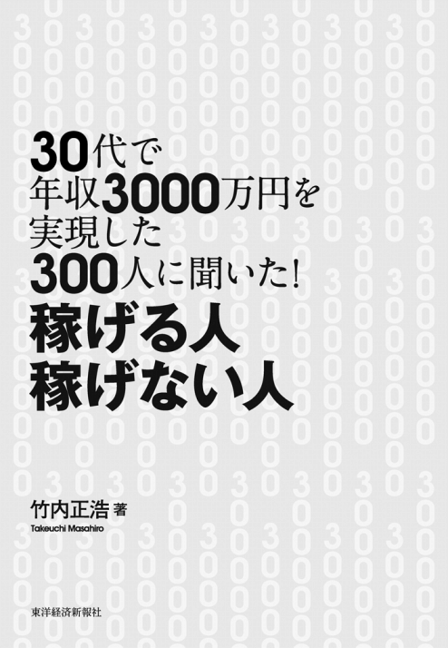

| ３０代で年収３０００万円を実現した３００人に聞いた！ 稼げる人 稼げない人 | |
| 竹内 正浩 | |
| 東洋経済新報社 (2010) | |
本作品は、２０１０年12月発行の、竹内正浩著『30代で年収３０００万円を実現した３００人に聞いた！ 稼げる人 稼げない人』（東洋経済新報社）に基づいて制作しています。
本作品を電子書籍として刊行するにあたり、一部の漢字を簡易慣用字やかなで表記している場合があります。
また、本書のコピー、スキャン、デジタル化等の無断複製は、著作権法上での例外である私的利用を除き禁じられています。本書を代行業者等の第三者に依頼してコピー、スキャンやデジタル化することは、たとえ個人や家庭内での利用であっても一切認められておりません。

はじめに――何があっても、自力で稼ぐ人になる方法
「誰も、助けてはくれないんだ......」
実は、幼いとき、私はたった一瞬でそれまでの普通の生活が一転した経験をしたことがあります。そのとき、何もできなかった私を、誰も助けてはくれませんでした。
私が小学３年生のある日突然、父が死んでしまったのです。私の母はその瞬間、突然、女手ひとつで家族を養っていかなければならなくなりました。だからといって、誰かが助けてくれたわけではありません。もちろん、いろいろな人が慰めの言葉をかけてはくれます。しかし、そこから抜け出すための方法や情報を教えてくれる人はいません。何より、知り合いも、友人も、ましてや親戚でさえも、実質的（＝金銭的）には助けてはくれませんでした。世間はそう甘くはありません。
しかし、これは別に私にかぎったことではありません。今の時代、うまくいっているように見える人でさえ、突然、人生が転落してしまうこともあるのです。
最近、私の知人が有名な大企業をリストラされました。その後すぐ、彼の奥さんは子供を連れ、実家に帰ってしまいました。会社に見捨てられ、家族に見限られてしまったのです。失業し、ハローワーク通い。それでも年齢が高く、職は見つかりません。家庭も崩壊し、仕事もない。なのに、幸せなころに買ったマンションのローンは残ったまま......。一気に人生の奈落の底に突き落とされたような感じです。
今、どんなにうまくいっている人でも、ある日、人生が転落しないという保証はないのです。もし、あなたの会社が倒産したり、リストラされたり、またはあなた自身が事故にあったり、多額の借金を背負ったりしたら、どうなりますか。そうなっても、誰もあなたを助けてはくれません。
誰も教えてくれないけれど、大事なこと
世の中には、２種類の人がいます。「稼げる人」と「稼げない人」です。
勘違いしないでください。たまたま、いい会社に就職できて、いい収入を得ているからといって、「稼げる人」ではありません。「稼げる人」とは、転職しても、会社を辞めても、何があっても、再び、自力で高い収入を稼ぐことができる人のことです。たとえば、今、有名な上場企業に長年勤めていたとしても、リストラされて次の就職先がない人は「稼げない人」です。
先ほどの知人と同じような人がたくさんいます。今、それなりの収入をもらって、それなりの生活を送っている人でも、ふとしたきっかけで、簡単に金銭的に困窮した生活に転落してしまうのが、今の時代なのです。
もう「一生懸命に勉強して、大企業に就職すれば、一生安泰で一生食うには困らない」時代じゃないことはおわかりでしょう。政府も年金も、会社もあてにはできません。そういう「一生安泰」といった言葉が通用しない、安心できない時代です。そういう時代だからこそ、「稼げない人」のままでは、いつ人生が転落するかわかりません。倒産やリストラなど、何か悪いことが起きたら、どんなに真面目に長年働いていたとしても、使い捨てにされて、一発で人生の奈落の底です。
世の中には、こういう事実があるにもかかわらず、「稼ぐ人になる方法」を誰も教えてはくれません。親も、友達も、学校も、会社も。あなたが生活に切羽詰まったとき、「西暦６４５年に日本で何があったのか」「微分積分をどうやるか」といったような知識が役立つわけはありません。
本当に必要な知識は、実社会で、生活の糧となるお金を稼ぐ力をつける方法ではないでしょうか。会社が倒産しても、リストラ、病気、ケガになっても、再び、自力で稼ぐ人になるための知識のほうが、もっと大事なのではないでしょうか。そう思いませんか。そういう「何があっても、自力で稼ぐ人になる方法」は、本当はとっても大切なことなのに、誰も教えてはくれません。じゃあ、どうすればいいでしょう。
何があっても、自力で稼ぐ人になる方法を知りたい
もし、「何があっても、自力で稼ぐ人になる方法」を知り、身につけることができれば......。
「会社の倒産やリストラの恐怖、お金に困る不安、人生が転落する恐怖にビクビクおびえることなく、自分らしい人生を送ることができる」
「たとえ病気やケガ、事故にあっても、再び、自力で稼ぐ人になって、人一倍豊かな生活を実現できる」
でも、「何があっても、自力で稼ぐ人になる方法」はいまだわからないまま......。
「このままでいいのか？ いや、このままじゃイヤだ。でも、わからない。いったい、どうすればいい??」
私は、その方法を見つけるために、１年半をフルに使って、調査・研究してきました。具体的には、１年半がかりで、30代で年収３０００万円を実現した人、約３００人を調査してきました。もちろん、調査にはお金がかかります。移動費、宿泊費、手土産代、お茶代など含めて数百万円を取材費として費やしてきました。
また、「30代で年収３０００万円を実現した人」は、そんじょそこらにポンポンといるわけではありません。遠くまで会いに行くことも、せっかくアポがとれても、後からお断りやキャンセルされることもありました。時には、ずっと説教されることも、問いかけを無視されることもありました。そういうことがありながらも、「何があっても、自力で稼ぐ人になる方法」について、徹底的に追求したのが本書なのです。
本書では、「30代で年収３０００万円を実現した人３００人を調査」したからこそ、明らかになった「何があっても、自力で稼ぐ人になる方法」について、さまざまな具体例などをあげながらお伝えしていきます。
本書が、人生が転落する恐怖、失業、貧乏になる恐怖を拭い去る一助となること。また、自分の人生を自らの手で、よい方向へ変えたいと望む人がそれを実現する、お役に立てることを願っております。
２０１０年11月
竹内 正浩
目次
序 章 なぜ「30代で年収３０００万円を実現した人」を調査したのか
コラム１【サラリーマン編】
第１章 彼らは普通の人とどこが違うのか
□「違い」がわかれば、自分自身に応用できる
□普通の人と能力差はどれくらい？
□精神的にタフなのか
□やりたいこと、なりたい姿が明確だったのか
□結局、どこが同じで、どこが違うのか？
□ほんのわずかの違いの積み重ねが大きな差になる
コラム２【専門家編】
第２章 データから見た実像
□年収３０００万円以上は労働力人口の０・３％
□経営者、あるいは、専門サービス提供者がほとんど
□超高級スポーツカー所有者は少数、ベンツが最多
□睡眠時間は「５時間～６時間」、起床時間は朝７時台が最多
□テレビ視聴時間は１時間未満
□「人生を変えた１冊」は「なし」が最も多い
□毎月の平均読書量は９・88冊
□大卒、院卒も多いが、大学中退も多い
□42・０％の人が現在の境遇をイメージしていなかった
□30代で年収３０００万円を実現した人と、していない人の「３つの違い」
コラム３【飲食業編】
第３章 変われる
ポイント 変化を受け入れる姿勢をもつ
事例 まったく関係ない業界への転職で成功
コラム４【生命保険営業マン編】
第４章 本気で働く
本気の要素 人の役に立つ・貢献する
本気の要素 目線・基準を高くもつ（相手の期待を超える）
本気の要素 目的に対して、合理性をもつ
事例 「英語を捨てたんです」と話す経営者
本気の要素 長時間労働をする
本気の要素 自己投資をする
コラム５【医師編】
第５章 成功への手順を踏む
■なぜ、弟子入りが有効な方法か？
事例 トップセールスマンのマネをすることで実現
事例 師匠のカバン持ちになって成功した経営コンサルタント
■弟子入りしてからの働き方
■サラリーマン時代を練習台としている
事例 ＴＳＵＴＡＹＡの店舗企画・開発に影響を与えた増田宗昭氏の経験
■サラリーマン時代にビジネスチャンスを見出す
□実現する方法 好き・強みを磨く
事例 プログラミングにのめり込んだビル・ゲイツ
■好きなこと、強みとはいったい、どういうものか
■好きなことの見つけ方――面白いとつまらないのリストをつくる
■強みの見つけ方――自分史をつくる、人生の棚卸しをする
■強みの見つけ方――人に聞いてみる
■弱みが時として強みとなる
■挫折、マイナス体験やトラウマが成功者の人生を変えた
事例 急成長中のＩＴ企業経営者の人生における最大の転機は「大学受験」
■好きなことや強みを収入に結びつけていく方法
事例 ハウス・ウェディング業界で仕事をしようと決めた理由
□実現する方法 目標を設定する
事例 若くして年収３０００万円を実現したＮさんの目標設定
■根拠のない自信が必要なときも......
□実現する方法 やってみる
■では、実際に何をやってみればいいのか？
事例 ポール・スミスが「やってみたこと」
事例 友人の仕事の手伝いを「やってみた」
事例 借金返済のためのアルバイトのかけもちを「やってみた」
事例 迷った末に参加してみたセミナーで師匠に出会う
事例 とにかく会社を始めたら、人脈・お客さまが増えていった
□実現する方法 思考を身につける
コラム６【30代で年収３０００万円を実現した人からのアドバイス】
おわりに――世界は、あいまいで、ゆるいところだ
カバーデザイン：原てるみ（mill design studio）
本文イラスト：山かおる
本文ＤＴＰ：アイランドコレクション
□今回の調査の原点にあるもの
小学３年生の、肌寒くなった11月18日。思い返せば、本当のはじまりは、この日だったのかもしれません。
その前日、何も考えていなかった少年の私は、いつもと変わらない日常を送り、いつもと変わりなく眠りにつきました。物音で目を覚ますまでは、いつもと変わらない１日だったのです。
ぼんやりと目を覚ますと、どこかいつもと違う雰囲気がしました。父と母以外の人が、何人かいるようだったからです。ドタバタとしている母に、私はこう聞きました。
「どうしたの？」
母は、いいました。
「お父さんが......死んだのよ......」
昨日と今日の間には、とても大きな違いがありました。私をかかえて遊んでくれたり、頭をなでてくれたりした父は、永い眠りについていたのです。
もちろん、私は子供でしたから、自分にとって、それがどのような意味をもっているのかなんて、正確にはわかっていませんでした。ましてや、それが自分の人生や家族の人生を、根本から変えてしまうような出来事だとは、考えもしませんでした。ただ、私が正確に理解できているかどうかに関係なく、事実は変わりません。父がある日、突然、いなくなってしまったという事実は。
それから、私には、いつもの生活が待っていました。もともとぜいたくをしていたわけでもないですから、特に不自由もせず、本当に普通でした。もちろん、父が亡くなったのですから、内心はショックを受け、また、いきなり変わってしまった状況にとまどっていました。そして、この上で母を失ってしまうと、自分には身寄りがなくなって孤児になってしまうのだという恐怖におびえていました。
ただし表面的には、普通。ごく普通の生活を送ることになりました。実は、それは母が演出していただけだったのです。
私が大学に入ったころでしょうか。母がその生活の裏側にあった事情を話してくれたのです。
生前、父は自営業を始めていました。そのために、実は、多額の借金を背負っていたのです。もちろん、生命保険をかけていれば借金はなくなったのかもしれませんが、当時41歳の父はまだ若く、自分が死ぬなどとは少しも思っていなかったのでしょう。父は生命保険をかけておらず、結果、多額の借金を残したまま、永い眠りについてしまったのです。しかも、バブルの時期と近かったことから、金利も高く、返済額もかなりのものでした。
そのため、私たち家族は経済的に豊かとはいえない生活を強いられることになりました。
ただ、気丈な母は、子供にはそのような苦労を見せまいと努力していました。だから私がそのことを強く意識することはありませんでした。
もちろん、のちのち、大人になり、いろいろなことを知るにつけ、驚いたことが多々あったことは事実です。たとえば、「外食って習慣があるんだ」とか、「家族で旅行って、一般的なことなんだ」とか。
母は商売について、ほとんど何も知りませんでした。そもそも、旧国鉄職員の祖父の家に生まれ、父との結婚前はＯＬをしていただけです。自ら人生を切り拓くことも、自ら進んで何かをするということも、ほとんどしてこなかったのです。
そういう状況で、いきなりの父の死です。それで、ビジネスという厳しい世界に突き落とされて、なんとか目の前の仕事を必死にこなすだけでした。もともと、ビジネス書を読むような人ではないですし、また、学ぶことのできる人も周囲にはいませんでした。ただ、勤勉だったので、ひたすら真面目にコツコツと仕事をするだけでした。
病気にならないかぎり、元日以外は休みなし。借金が多額で、金利も高く、返済額も相当なのに加え、バブル崩壊後の長い不況へと続く道の上で、母は大変な思いをしていました。毎日、毎日、朝から晩まで、雨の日でも、雪の日でも、１日12時間以上、労働を続けました。急いで買い物に出かけ、朝、昼、晩の食事の用意。毎日違う献立を考え、掃除をし、洗濯をしていました。母は、車の免許をもっておらず、移動に苦労するため、免許をとるために、目のまわるような忙しさの中、自動車学校にも通っていました。それでも、稼ぎの多くを、借金返済にあてていました。その結果、幸運なことに、なんとか厳しいくらいで乗り切ることができたのです。
そのような生活の裏側にあった事情をひと通り話した後、母はいいました。
「あなたに、苦労を見せたくなかったから......」
私は、心の中で、血を吐きそうなくらい、叫んでいました。けれど、何もいえませんでした。それを当時知っていたところで、私は何もできなかったから。何か助けることもできなかったし、一緒に前進していくための力も、知識もなかったのだから。私は、くやしかった。うつむいたまま、全身に力をこめて、歯をくいしばりながら、泣いていました。自分の無力さ、大切な母を助けられなかった自分の情けなさ、そしてもう二度と同じ思いはさせまい、と心に誓いました。
□運に頼らずに成功できる方法を探す
このような経緯を振り返ってみて、感じることがあります。それは、「ラッキーであった」ということです。自己破産、生活保護、親戚に引き取られる、物乞いをする、こうしたことをせずにすんだのは、ただただ幸運だったとしかいえません。綱渡りをしていて、たまたま運よく、綱を渡りきれただけでした。
もし、母が大きなケガをして動けなくなってしまったら。もし、母が病気になって入院生活を余儀なくされてしまったら。そういう少しでも何か悪いことが起こっていれば、渡っていた細い綱からすべり落ちて、自己破産や生活保護ということになっていた、という表現は大げさではない状態でした。綱渡りの状態と表現するのがふさわしかったと思います。
そして、忘れてはならないことがあります。それは、あのとき、私が綱から落ちていたら、再びよじ登ることはできなかったということです。なぜなら、私や母は、再びよじ登るための解決策や、自分の人生を自分自身の力で、より素晴らしい方向に変えるための方法を知らなかったからです。単純にラッキーなだけだったというわけです。
「また、何かのかたちで、同じような境遇になったとして、このままの状態で、また乗り越えることができるのか」
そう自分に問いかけたとき、答えは「ノー」なのです。大学時代。サークルに入ったり、合コンを楽しんだり、ワイワイ騒いだり、と大学生活を毎日楽しむ。それが、大学生の醍醐味だし、人生でこの時期ほど、人生をエンジョイできる時期はない、と思います。私は、それに背を向けました。理由は、簡単です。私は、もう二度と母に、そして私の人生にかかわる人たちに、あのときと同じようなつらさを、味あわせないことを誓ったからです。そうして、私は、どんな状況からでも成功する方法、つまりは「何があっても、自力で稼ぐ人になる方法」を探求することとなったのです。
それから私は、大学在学中よりスモールビジネスをいくつか手がけ、また、株の研究を始め、不眠不休の努力で、ある程度の結果を出しました。しかし、まだ満たされない気持ちでした。何カ月かの間、ずっと考え続けていると、どうやら、それはおそらく、先ほどお話ししたような母の苦しんだ姿が原体験にあるからだと気づいたのです。
つまり、このままでは、あのころの母を救えない、自分が同じような状態になっても、乗り越えることができるとはかぎらない、つまり、「何があっても、自力で稼ぐ人になる方法」はまだ見つかっていないとわかったのです。
その後、私はビジネスをより効果的に行なう知識こそがその解決につながるのだと思い、感銘を受けたアメリカの経営コンサルタントの日本におけるライセンス権を、単身でアメリカまで直接交渉に行き、獲得しました。次に、会社を設立し、多数の経営者・起業家に対して、その知識を伝えることにしました。しかし、それから時間が経つと、また、いくつかの違和感を覚えていたのです。その違和感は、いくつも折り重なっていました。その知識が完全な解決策ではないということへの違和感、自分自身でそれらを見出していないことへの違和感。そういう違和感が積み重なって、私は、会社を売却することにし、再び、「何があっても、自力で稼ぐ人になる方法」について模索することとなったのです。
少なくとも10年以上、ずっと「何があっても、自力で稼ぐ人になる方法」について模索していたというわけです。
会社を売却した後、私は２つの道のどちらかを選ぶという状況に至りました。ひとつの道は、収入的にはよい道。新しいビジネスを始めるか、知人のビジネスに参画する道です。もうひとつの道は、これまでずっと抱いてきた悩みに対して、その答えを見つける、つまりは、「何があっても、自力で稼ぐ人になる方法」を見つけるという調査・研究の道。こちらの道は、ほぼ収入ゼロ、世間体の悪い、居心地のよくない道です。
そういう岐路に立たされた私は、しばらく考え込みました。たしかに、金銭的には、ビジネスをするほうがいい。お金は入る。しかし、また満たされない日々、悩み続ける日々が続くのだろう。
「また、何かのかたちで同じような境遇になったとして、このままの状態で、また乗り越えることができるのか」
「自分自身は母と同じ立場にいたら、人生を変えられるだろうか」
「突然、転落してしまった状態から、自力で稼ぐことのできる人生に変えていくことができるだろうか」
そう考えたとき、私は後者を選びました。つまり、「いろいろな犠牲を払うかもしれないけれども、人生は一度きり。であれば、これらの疑問に対する答えをきっちり出してやろう」と心に決めたのです。
それは、長年ずっと抱いてきた疑問に対する答えを見つけることが、たしかに、さまざまな犠牲を払うかもしれないけれども、自分の人生にとって、目先の収入よりも価値がずっと高いと思ったというわけです。
もうひとつ。私の父は41歳で亡くなりました。若かったので、おそらくはたくさんのやりたかったことができずに、死んでしまったのだと思います。私はこれまでの経験から「人は遅かれ早かれ、死ぬものだ」ということを知りました。そして、後悔しない人生、やりたいことをやっておくという人生を生きることを強く心に決めたのです。
だからこそ、環境が万全に整うのを待つのではなく、多少犠牲は払うかもしれないけれども、やりたいと望んだことはきちんとやっておこう。そういう思いも、背中を押した要因です。
そして、最後に。
私はこれまでたくさんの人に会ってきました。「はじめに」でもお話ししたリストラされた知人のように、ある日人生が転落してしまった人。今そこそこの収入で、それなりの生活をしているけれど、この状態がずっと続くのかどうか不安を抱えている人。そして、向上心があって「このままの人生はイヤだ」「もっと素晴らしい人生にしたい」と望む人。本当にいろいろな人がいるのですが、みんな、私や私の母と同様に「何があっても、自力で稼ぐ人になる方法」なんて、知りません。それならば、私が、これらの疑問に対する答えを出すことができれば、彼らにも役立つのではないか、そういう思いも、私を後押ししてくれました。
そうして、ささやかながら蓄えがあったという幸運な状況ではありましたが、１年半の時間すべてを犠牲にし、ほぼ収入ゼロという状態、そして、無職という世間的に厳しい視線を浴びるような状況に、あえて自ら飛び込んだというわけです。それが、この調査が始まった経緯です。
□この本が生まれた理由
正直いって、父が死ぬまで、私は平凡な人生を送っていたと思います。しかし、そんな平凡な人生から、ある日、ふとしたきっかけで、突然、転落してしまうのだということを身をもって知ったのです。それは、世の中には、自分ではどうしようもない出来事で、転落することもあるのだ、と肌で感じた体験でした。
文字にすると、たいしたことでないように思えます。しかし、私はあのころ、心の底から恐怖を感じていたのです。小学３年生の何も知らない少年であった自分でさえ、自分の置かれた状況がかなりヤバいものであることがありありと把握できていたからです。父が死んだ直後、私は心底、恐怖でビクビクおびえていました。
「もし、お母さんが死んでしまったら、どうしよう」
「もし、お母さんに捨てられたら、どうしよう」
「親がいなくなって、孤児になったら、たぶん、あの仲の悪い親戚に引き取られて、たらいまわしにされる」
実際、そういう状態になった子どもは、とてもつらい思いをすることも少なくないそうです。ある人は、小学１年生のとき、遠い親戚の家に引き取られたものの、居場所がなく、邪魔者扱いで、いじめられ、虐げられる経験をしたそうです。
時が経ち、そういう恐怖もだんだんと薄れてはいきましたが、長い間、ずっと消えることのない不安に押しつぶされそうになりながら、日々を暮らしていたのです。
そのときに、もし、「何があっても、自力で稼ぐ人になる方法」が書かれた本があれば、私はそれを手にとり、少なからず不安を消せたと思うのです。少なくとも、状況がもっと悪化してしまうかもしれない恐怖、さらに転落してしまう恐怖に、ビクビクおびえている自分の感情をやわらげることはできたと思うのです。
そして、商売について、ほとんど何も知らなかった母。特に学ぶことのできる人が周囲におらず、なんとか目の前の仕事を必死にこなすだけだった母。そんな母が、もし、「何があっても、自力で稼ぐ人になる方法」が書かれた本を手にとり、読むことになっていれば、あのときのような苦労やつらい思いはせずにすんだだろうと思うのです。
加えて、母や自分とまったく同じような境遇ではないにしろ、突然、転落してしまった人。もともとの環境が恵まれていなかったり、特に豊かな家庭に育ったわけでもない人。今は、うまくいっているほうだけれども、このままだと何かあると不安だと感じている人。自分は転落人生なんてイヤだと思う人。そういう人が「何があっても、自力で稼ぐ人になる方法」が書かれた本を読むことができれば、自分の力で、自らの手で、人生を好転させていき、人一倍豊かな生活を送ることができるようになると思うのです。
だから、私は「何があっても、自力で稼ぐ人になる方法」が書かれた本を書こうと思ったのです。たとえ、いろいろな犠牲を払ったとしても。
□なぜ、「年収３０００万円を実現した人」なのか
「何があっても、自力で稼ぐ人になる方法」が書かれた本を書くには、その方法論についてきちんと調査して結論を出した上で書かなければなりません。そのためには、自力で稼ぐ人になった人の人生を多数、調査する必要があると考えました。
もちろん、テーマは、「稼ぐ人になる」ということですから、調査する対象は、誰でもいいというわけではありません。
まず、稼ぐ人は、どんな人なのかを決めようと思いました。稼ぐ人なのですから、やはり基準は年収になると思い、ハードルとなる年収を決めることにしました。
年収１０００万円は、どうでしょうか。周囲の人にちょっと話を聞いてまわると、年収１０００万円は一流企業に就職することができれば、すぐに実現できてしまう水準だということで、ハードルとしては低いということがわかりました。
年収２０００万円は、どうでしょうか。同じように、周囲の人に聞いてまわると、２０００万円は高い年収なので、一見、それで条件を満たしているように思えます。しかし、外資系企業、コンサルティング会社、金融系の企業に勤務すれば、サラリーマンとして不可能というわけではない水準ですから、「何があっても、自力で稼ぐ人」という条件で考えると、ゼロから自分で切り拓いてきた感じがしないことに加えて、リストラや吸収・合併といった状況変化に弱いという点もあり、「何があっても」という条件は満たしていないように思えました。
このような経緯があった上で、年収３０００万円を検討すると、サラリーマンではほぼ不可能な水準だとわかりました。年収３０００万円を稼ぐには、普通の生き方である会社勤めでは難しいというわけです。そのため、普通の人生でない可能性が高く、「何があっても、自力で稼ぐ人」という条件を満たしている可能性が高いと考えたこと、収入的にも非常に高い水準であるという点もあり、条件を満たしていると判断しました。
□なぜ、「30代で実現した人」なのか
まず、60代、70代といった長年、仕事をしてきたような人で、年収３０００万円の人というと、それなりにいると思います。ですが、その理由はというと、長年の蓄積・経験があることで高収入になっている、というケースが多いと思いました。
条件として、20年、30年という長い期間が必要とされるのでは、突然、自分の人生が転落した人に役立ちそうにありません。そのため、「何があっても、自力で稼ぐ人になる方法」を見つけるためには、できるかぎり短い期間で劇的に人生を変えたような事例のほうが役に立つと考えました。
となると、どのくらいの年齢までに年収３０００万円を達成していたら、短い期間で劇的に人生を変えたような事例である可能性が高いのでしょうか。20歳ぐらいで働き始めたとして、60代、50代、40代で実現したのでは期間が長い。そこで10年、「30代で実現した」ということを条件にしようと考えました。
30代という条件には、他にも２つ理由がありました。ひとつは、私自身の年齢が本書のプロジェクト開始時点で27歳であったということです。これから30代になる自分や、自分と同年代の仲間にとって、道しるべとなるような、役に立つものにしたいと思ったのです。もうひとつの理由は、私の父が41歳で亡くなったからです。もし、私が、父の亡くなった年齢の41歳までしか生きられないのだと仮定すると、30代をどう生きるのかが人生にとって非常に重要なのだと感じていたということがあります。
これらの理由があって、調査対象を「30代で年収３０００万円を実現した人」ということにしたというわけです。
□本書を読む際の注意点
注意点 現在、30代とはかぎらない
調査対象の条件として、「30代で年収３０００万円を実現した人」ということになっていますが、現在30代とはかぎりません。現在、30代である必要はなく、あくまで30代のとき、年収３０００万円を実現していた人が対象だということです。たとえば、現在、44歳の人で、30代の時点で年収４０００万円だったとすると、調査対象に含まれます。
注意点 「自力で実現した人」にフォーカス
調査させていただいた人の中には、二代目や後継者といった人も多くいました。つまり、もともと、父親などの親族が経営していた会社を引き継ぐかたちで経営者になり、30代で年収３０００万円を実現したというケースです。彼らもかなりの苦労をして、プレッシャーにさらされながらも、会社を引き継ぎ、経営しています。
しかし、二代目や後継者の人からの批判を承知であえていうと、彼らが30代で年収３０００万円を実現したというのは、彼ら自身の力だけではなく、先代や創業者といった、その会社をつくり上げた人の力にも依存しています。ゼロの状態から、30代で年収３０００万円を実現するための努力や苦労と、もともとでき上がったものがあり、それをうまく引き継ぐための努力と苦労とでは、圧倒的に差があるのです。二代目や後継者の人は、ゼロからやった人が経験するような「お金もない。モノもない。お客もいない。信用もない」という状態から、はい上がっていくということを経験しないということです。つまり、二代目や後継者の人は、ゼロからつくり上げた人たちと比較して、「苦労知らずのボンボン育ち」ということです。
こうした厳しい言い方をするのには理由があります。今回の調査の中で、私が毎回していた質問、「何もない30歳の人がいたとして、どうすれば、ゼロから30代で年収３０００万円を実現することができるでしょうか？」に対しての答えを聞くと、二代目や後継者の人のほぼ全員が、要領を得ない答えしか出せなかったからです。その理由は、単純です。彼らは、ゼロからの経験をしたことがないからです。もちろん、二代目や後継者の人も努力されています。また、ゼロから会社を立ち上げて軌道に乗せてうまくやっていく能力と、今ある会社を拡大させる能力は違うということが背景にあります。そのため、彼らは能力がないわけではありません。
ただし、本書のテーマは、「何があっても、自力で稼ぐ人になる方法」です。そのために、本書では、自力で稼ぐ人になれた人、つまり、ゼロから30代で年収３０００万円を実現した人に焦点を当てました。たとえば、後でくわしく述べますが、「変われる」ことは、ゼロから稼ぐようになるには、必須の要素ですが、二代目や後継者には、必ずしも必要な要素ではありません。たまたま裕福な家の子供に生まれたというだけで、特に変わらなくても、30代で年収３０００万円を実現することになるからです。
ですので、本書をお読みになる際には、自力で稼ぐ人になれた人、つまり、ゼロベースから30代で年収３０００万円を実現した人に焦点を当てているということを、念頭に置いていただければと思います。
ちなみに、今回の調査で、二代目や後継者といったケースは、調査対象者３１０人中71人で22・９％となっています。
□どういう調査をしていったのか
今回の調査は大きく２段階に分けて行ないました。
第１段階が、１、２時間程度、じっくりとインタビューする「定性調査」で、第２段階が、アンケートにご回答いただく「定量調査」です。２段階に分けた理由は、それぞれ役割や得られる情報が異なるからです。
第１段階の「定性調査」では、質的な面で大いに価値の高い情報を収集することができます。じっくりとくわしくインタビューし、いくつも質問をしていき、相手のいっていることを深く掘り下げていくことができるからです。この「定性調査」では、30代で年収３０００万円を実現した人を１１０人調査しました（図表１）。結果、突っ込んだ質問をして、「定量調査」では把握できない、数値ではかれない情報をさまざまな細かい部分まで調査できました。
第２段階の「定量調査」では、数値として全体の傾向を把握することができます。該当者の方々にアンケートにお答えいただき、量的な面から情報収集をしているからです。「定量調査」では、楽天リサーチ株式会社に協力してもらい、インターネットを活用して行ないました。この調査では、30代で年収３０００万円を実現した人を２００人調査することができました。
これら２段階で、30代で年収３０００万円を実現した人を３１０人調査することができました。
□どうやって「30代で年収３０００万円を実現した人」に取材したのか
第１段階の「定性調査」では、実際に30代で年収３０００万円を実現した人に時間をとってもらい、取材させていただかなくてはなりません。そのため、30代で年収３０００万円を実現した人を探す必要があります。
しかし、率直にいって、30代で年収３０００万円を実現した人はめったにいません。
のちほどくわしくお話ししますが、30代で年収３０００万円を実現した人はそんじょそこらにポンポンいるというわけではないのです。めったに出会えないような存在だといっていいでしょう。では、どうやって、30代で年収３０００万円を実現した人に取材していったのでしょうか。
まず、もともとの知り合いです。
これまでの私のもともとの知り合いの中には、経営者の知人が多く、その中でも「30代で年収３０００万円を実現」というハードルをクリアしている人が10人以上いたということがあります。それ以外の取材先は、ほとんどが紹介です。
そんじょそこらにいませんし、誰が該当しているのかもわかりません。加えて、該当していそうな人でも、いきなり突撃というわけにもいきませんから、基本的なアプローチとしては、紹介に頼るほかないというわけです。知り合いのほとんどに声がけして、「30代で年収３０００万円を実現」というハードルをクリアしていそうな人、もしくは、クリアしている人を知っていそうな人を紹介してもらいました。そして、取材した人、紹介してもらった人に、強く声がけして、さらなる紹介をいただいた、というかたちになっています。
もちろん、そのために取材サンプルが無作為抽出とはなっておらず、偏りがあることにはご留意いただければと思います。
コラム１ 【サラリーマン編】
今回の調査で、サラリーマンでありながら、30代で年収３０００万円を実現した人には、大きく３つのパターンがあることが判明した。その３つとは、経営幹部になる、副業をする、ストックオプションを得る、である。
１ 経営幹部になる
新しい会社の立ち上げ、もしくは初期段階で参画
その会社を大きく成長させる
自分が経営幹部になる
儲かっている会社の経営幹部となる
サラリーマンの場合でも、儲かっている会社の経営幹部であれば、30代で年収３０００万円を稼ぐことができる。最も多いパターンは、新しく会社が立ち上げられる際、もしくは、初期段階で、その会社に参画し、その後会社が大きく成長し、儲かるようになるパターンである。もちろん、会社が完全にでき上がった状態で入社して、昇進していくことで年収３０００万円は実現可能ではあるが、初期メンバーに比べて昇進のペースは遅く、30代で実現するのが難しい。その点、初期メンバーであれば、結果を出すことで、早期に昇進でき、比較的若い年齢でも経営幹部になることができる。その後、会社の成長にともない、収入もアップしていくことになる。
また、新しく会社が立ち上げられる際や初期段階での参画になることから、元々の知人、友人、親戚などから誘われるというケースが多い。
２ 副業をする
サラリーマンになる
勤務時間以外を副業に費やし成功させる
サラリーマンで、30代で年収３０００万円を実現する２つ目のパターンは、副業タイプである。サラリーマンとして働きながらも、個人で副業をすることで、「サラリーマンの収入＋副業収入」で年収３００００万円を稼ぐ人である。副業の例としては、株式投資、不動産投資、ビジネス全般などがある。
３ ストックオプションを得る
ベンチャー企業に入社する
ストックオプションが付与される
その企業がＩＰＯ（新規株式公開）する
サラリーマンが30代で年収３０００万円を実現する３つ目のパターンが、ストックオプションを得た場合である。
ストックオプションとは会社の役員や従業員が、一定期間内に、あらかじめ決められた価格で、所属する会社から自社株式を購入できる権利のこと。会社が株式を公開し、株式を市場で売却できるようになった際、株価が上昇した時点で権利行使を行うと、株式を取得・売却することで、株価上昇分の利益を得ることができる。
ベンチャー企業に入社・勤務することでストックオプションが付与され、その後、その企業がＩＰＯすることによって、非常に大きな利益を手に入れるというものである。人によっては、数千万円から数億円まで、金額はさまざまである。また、この場合、継続的な収入というわけではなく、一時的な収入になる。
□「違い」がわかれば、自分自身に応用できる
もし、普通の人と30代で年収３０００万円を実現した人が、まったく同じ生き方をして、同じ考え方で、同じ行動をとっていたら、結果も同じはずです。ということは、30代で年収３０００万円を実現した人にはあって、していない人にはないもの、それが30代で年収３０００万円を実現したか、していないかの差を生んだわけです。
「何があっても、自力で稼ぐ人になる方法」を見つけるために、本気で探さなければならないのは、その「違い」です。もしかしたら、それは生き方の違いだったり、行動習慣の違いだったり、考え方の違いだったりするかもしれません。何にせよ、「違い」があるからこそ、結果も違ったわけです。その「違い」こそが、30代で年収３０００万円を実現するという結果を生んだ原因なのです。
だから、その「違い」がわかれば、それを自分自身にも応用することで、自力で稼ぐ人に変わることができるのです。
そこで、この章では、「30代で年収３０００万円を実現した人」約３００人への調査を通じてわかった、30代で年収３０００万円を実現した人と、していない人の同じところはどこか。そして、どこが違うのか。ということについて見ていきたいと思います。
□普通の人と能力差はどれくらい？
まず、能力という面で見ていきたいと思います。失業中の20代の若者と、30代で年収３０００万円を稼いでいる経営者を比べると、間にそびえ立つような大きな壁があるように思えます。もちろん、年収ベースでは10倍以上、差があるでしょう。ただ、だからといって、超人なわけではありません。
彼らは、24時間働き続けているわけではありません。１００メートルを２秒で走ることができるわけでもありません。失敗を一度もせずにうまくいっているわけでもありません。
また、全員が頭の回転が特別速いというわけではないですし、全員が容姿端麗というわけでもありません。特別、体を鍛えているわけでも、10カ国語を話すことができるわけでもないのです。
それどころか、ある人は、自分に学歴がないということに強い劣等感をもっていました。また、恵まれない家庭に育ったことに引け目を感じていた人もいたのです。
このように、30代で年収３０００万円を実現した人も、同じように悩み、苦しみ、同じように心を痛めることもあれば、同じように笑い、楽しんでいるのです。つまり、いってみれば、同じ「人」なのです。
実際に、データもそれを物語っています。たとえば、睡眠時間のデータがあります（図表２）。30代で年収３０００万円を実現した人の睡眠時間は、いちばん多いのが「５～６時間」。たしかに短い睡眠時間だとは思いますが、２時間や３時間といった数字ではなく、まったく眠らずに働き続けているというわけでもないのです。

調査対象の方が語ってくれたコメントを見ていくと普通の人との「能力差」をどう感じているかが見えてきます。
「同じ人間なので。他人ができていたら、自分もできると思ったんですよ」
そう話してくれたのは、取材した中でも、数少ない女性で、20代のころからビジネスを立ち上げていたという天才肌の経営者でした。
「何が違うかって、そんなに違わないと思うんですよ。別に境遇も特別違うわけでもない。何も違わない。私は、成功している人を見て、そう思ったんです」
「逆にいえば、私自身と他の人とも、そんなに違わないということでもあるんです。同じ人間なので。身体的にも普通でしょ。何かが違うわけでもないでしょ。強いて違うところをあげるとすれば、思ってきたこととか、やろうと思ったことをやってみたってところくらい。お金が欲しかったら、収入がとれるところにいくとか。そういうことをすぐに行動に移してみるってところくらいしか、違いはないですよ」
人材業界で、大きな成功を収めている経営者は、こう語ってくれました。
「一般に、成功者の能力を過大に評価しすぎですよ。なんとなく、成功者と自分はそもそもモノが違うと思い込んでいる人が多いですよね。実にもったいないことだと思います」
何か秘密があるんだ。彼らだからできたことなんだ。そもそもモノが違う。もっていたお金が多い。いろいろなコネをもっていた。学歴がとても高い。もともと豊富な知識をもっていた。そう思いがちです。
しかし、必ずしもそうでないことは、後でお伝えすることになっている今回のデータからも明らかです。そう、30代で年収３０００万円を実現した人だからといって、超人なわけではないのです。
同じ、普通の人なのです。
10代からビジネスをしており、現在では複数の会社を所有する経営者がこう語ってくれました。
「僕ができることは、キミも同じようにできるんだよ。もし、僕のやってきたことで、『そんなことできない』っていうことがあっても、たいていはできるんだよ。正直、たいしたことをやっているわけじゃない。たとえば、僕はこのコーヒーを飲んでいるけど、キミも同じようにコーヒーを飲めるよね。僕は運転をするけど、たぶん、キミも運転できるよね。それと同じで。ビジネスでも、僕ができることは、たいていは、誰でも同じようにできることなんだよ」
「30代で年収３０００万円を実現した人は、ズバ抜けた能力があったから、そうなれたのか？」
その答えも「ＮＯ」。
たしかに、彼らは普通の人に比べると、能力があるからこそ、30代で年収３０００万円を実現できたといえます。しかし、普通の人には追いつけないほどの圧倒的な能力の差があったか、というと、そうではないのです。24時間３６５日、眠らずに仕事ができるわけでも、海を泳いで太平洋を渡ることができるわけでもないのですから。
ということは、努力しだいで、追いつくことのできる能力差であるということです。
能力は、とりたてて騒ぐほどの「違い」ではないということです。彼らも、普通の人も、能力ではそこまでのズバ抜けた差があるわけではないのです。
□精神的にタフなのか
私がこの調査で、取材調査（第１段階の「定性調査」）を始めてから少し経ったときのことです。いろいろと知り合いに宣伝して、「知っていたら、紹介してほしい」という節操のないお願いをしてまわった甲斐があり、「30代で年収３０００万円を実現した該当者が知り合いにいた」と連絡がありました。
その知人の紹介で、さいわいなことにアポがとれ、指定された高級ホテルで取材することとなったのです。取材のほとんどのケースがそうなのですが、今回のアポでも、紹介者は同伴せず、私ひとりで取材することになりました。
取材当日、高級ホテルのロビーに立ち、約束の時間がくるのを待っていた私は、とりわけ緊張して、変な汗をかいていました。
その理由はわかりやすくて、今回のようなケースの場合、取材する相手のことをほとんど知らないし、一度も会ったことがないし、正直にいって、どんな顔なのかさえ、わからないのです。
こういう場合の最初の難関は、「誰が取材相手なのか」を特定すること。明らかにひとりしかいないような場合は、すぐにわかるのですが、高級ホテルのような不特定多数の人が行き来するような場所では、ロビーで待っている人もかなりの数になるのです。
約束の時間になりそうなときでも、それらしき人物が見当たらない。こういうときの流れは決まっています。約束の時間になったら、すぐに礼儀正しく電話をする。今回も、アポをとったときにかけた携帯電話に電話をかけました。
「もうラウンジに入って待ってますので」
結構な時間、ロビーで待っていた私は少し肩透かしをくらったような気がしつつ、ラウンジへと急いだのです。
そこには、パッと見て高級そうなきちっとしたスーツを着た、少し体格のいい男性が座っていました。ちょっとだけ萎縮した気持ちに。
私が彼のところに早歩きで近づくと、彼が立ち上がってあいさつしてくれました。
「どうも。よろしくお願いします」
「これでまたひとり、30代で年収３０００万円を実現した人を取材できる」。私は心の中で、そう思いました。
40歳を目前に控えた彼は、とある商品の販売会社の社長で、サラリーマンから独立してビジネスを始めた人でした。服装はもちろん、高級そうなスーツだし、時計も高級そうなものを着け、身なりにはかなり気を遣っているのが、かもし出される雰囲気から感じられました。まさに「デキる男」といった雰囲気。いつものように取材調査の概要をざっと説明してから、メインの取材に移ります。いろいろと質問していった後、彼がサラリーマンから独立したという転機について質問していったときのことです。
「サラリーマンを辞めて、独立したということですが、サラリーマンを辞めるとき、不安じゃなかったんですか」
彼は答えました。
「そりゃ、不安だったよ。だって、会社を辞めたら、お金もない、信用もない、人脈もないって状態だったからね。でも、あのままじゃ、いつまで経ってもきちんと評価されることはなかっただろうから、仕方ないよね」
「30代で年収３０００万円を実現した人は、不安や恐怖、苦痛を感じないから、そうなれたのか？」
その答えは「ＮＯ」。30代で年収３０００万円を実現した人も、普通の人と同じように精神的に超タフだとはいえません。
もちろん、中には精神的に超タフで、会社を辞めようが、人から罵倒されようが、断られようが、何の不安も、恐怖も、苦痛も感じないという人もいます。しかし、それは本当に少数で、大多数が普通の人と同じように、不安を感じ、恐怖を感じ、苦痛を感じるような人なのです。つまり、普通の人よりも、精神的にタフというわけではないのです。たしかに一部の30代で年収３０００万円を実現した人は精神的に超タフな人だったりします。しかし、大部分の実現した人は、そうではありません。そのため、明白な「違い」とはいえません。精神的なタフさでいえば、同じということなのです。
□やりたいこと、なりたい姿が明確だったのか
その人には、紹介の紹介で取材アポをとることができました。約束の場所は先方のオフィスで、約束の時間の少し前、私はその場所に赴きました。ビルの入り口を入り、エレベーターに乗って、オフィスのあるフロアに着く。ドアが開くと、真正面に受付がありました。いきなりすぎて心の準備ができていない感じがして、一呼吸。
ちょっと明るい声で私は受付にいる女性に声をかけます。
「10時に社長さまに取材させていただくことになっている竹内正浩と申します」
女性は答えていいます。
「ちょっとお待ちいただけますでしょうか」
「はい。わかりました」
いわれたとおりに、ちょっとの間待った後、女性が近づいてきて案内してくれました。
「会議室にて、お待ちいただくようにとのことですので、ご案内いたします」
通された会議室の第一印象は「広い」。そんな広い会議室に、ぽつんとひとり。多少の居心地の悪さを感じつつも、少し待つと、人が入ってきました。
その人が取材相手であり、このオフィスの主。とある業界の急成長企業の経営者です。
細身で落ち着いた感のある彼は、見た目のお堅い感じの印象とは違って、かなり波乱万丈な人生を送っており、現在の会社を経営するまでに、いくつか別のビジネスを立ち上げた経験ももっていました。
そんな彼が、取材も終わりに近づいたくらいのころ、私が「すごいですね」といっていたからでしょうか、静かな声で私にこう打ち明けてくれました。
「今は、こうして立派に見えるかもしれない。けれど、20代、30代のときには、自分が何をやりたいのか、どうなりたいのか、さっぱりわからなくて、模索していた時期もあったんだよ」
「30代で年収３０００万円を実現した人は、やりたいこと、なりたい姿がはっきりしていたから、そうなれたのか？」
その答えも、やはり「ＮＯ」。
実際、調査データからも、それが読み取れます。質問事項に「10年前に今の状態をイメージできていましたか？」というものがあるのですが、その結果は「はい」が58・０％、「いいえ」が42・０％（図表３）。つまり、４割以上の人が、現在の状況をイメージできていなかったということです。つまり、やりたいこと、なりたい姿がはっきりしていればいいのかというと、そうでもないということです。これも明白な「違い」ではないのです。
□結局、どこが同じで、どこが違うのか？
そもそも、人間の能力には、そこまで大差はありません。加えて、時間も１日24時間ですし、先ほどお話ししたように睡眠時間もそれなりにとっているわけですから、大きな差がついているというわけではないのです。「30代で年収３０００万円を実現した人」約３００人に調査して、わかったことは「本質的には、誰もが一緒」なのだということです。
朝起きて、朝食を食べて、出社する。人と話したり、電話をしたりする。昼食をとって、仕事をして、帰宅する。夕食をとって、眠りにつく。時には、テレビを見たり、趣味や友人との会話を楽しんだりする。そこには、かける時間の長い短いの差はあれど、劇的な大きな差というものはないのです。つまり、「本質的には、誰もが一緒」なのです。
また、「こういう人が30代で年収３０００万円を実現した人だ！」という典型的な人もいません。いろいろな人がいました。ガンガンと押しの強い人、威圧的な人。その一方で、おっとりとした人、本当に人のよさそうな人もいました。夜遊びが好きな人もいれば、そうでない人もいました。朝が早い人、朝遅い人。酒が大好きな人、酒をまったく飲まない人。
「30代で年収３０００万円を実現した人は、必ずこうである」というような、特定のタイプがあるわけではないのです。
□ほんのわずかの違いの積み重ねが大きな差になる
結局、精神面も、能力も、悩んでいるのも同じ。違いという違いはないように思えます。本当に「違い」がないのでしょうか。
いいえ、「違い」はあります。ただ、一見、違いがないように見えるのは、日々、「違い」がもたらす、目に見える成果の差が、ほんのわずかしかないからです。
日々、目に見える成果の差はよーく目をこらして、じっくりじっくり、何人も何人も、丁寧に調べていかないとわからないような、本当にわずかな差でしかありません。しかし、「違い」がもたらす、そのほんの少しの成果の差が、時間が経つことで、大きな差を生み出すのです。
たとえていうならば、１円玉を積み上げていくようなものです。１円玉は厚さが約１・５ミリだそうです。１円玉を１枚置いても、たいして高くはありません。では、１円玉を10枚積み上げてみると、ちょっとした高さになります。テーブルの上に置いてあったら、判別することくらいはできそうです。
では、がんばって時間をかけて、１枚１枚積み上げていって、１００枚積み上げられたとしたら、どうなるでしょうか。ざっと15センチです。ボールペン１本を立てたくらいの高さです。もし、テーブルの上に置いてあったら、まず目立つレベルでしょう。それが、２００枚なら、３００枚なら、５００枚ならどうなるでしょうか。１枚１枚の厚みはたいしたことがない、ほんの少しの厚みだったとしても、それが、どんどんと積み重なっていくことで、大きな差が生み出されるというわけです（図表４）。
それは人生においても、同様です。ほんの少しの成果の差を少しずつ積み上げて、時間をかけて、どんどん積み重ねていくことで、結果、大きな差がつくということです。では、ほんの少しの成果の差を生み出す「違い」とは、具体的に何なのでしょうか。そのことについて、これからお伝えしていきたいと思います。
ただ、その前に、今回、調査してきた「30代で年収３０００万円を実現した人」は、どのような人たちなのか。調査データから、その実像についてお話ししておこうと思います。
コラム２ 【専門家編】
今回の調査で、専門家（フリーエージェント、フリーランスを含めた弁護士、会計士、税理士、コンサルタント、専門的なサービス提供者）で30代で年収３０００万円を実現した人には、次のようなパターンがあることが判明した。
大学を卒業する
その専門サービスを提供する企業（たとえば、会計事務所、弁護士事務所、コンサルティング会社など）か、師匠のような専門家のところで働く
本気で働く
いろいろな仕事を任せられる＋自分にお客様がつく
独立
前職時代のお客様、紹介などで拡大
専門家の場合、希少価値のある専門知識・スキルをもち、上得意のお客様をきちんと確保することができれば、年収３０００万円を稼ぐことができる。
ただし、専門家の場合、専門家として仕事をしていく上で必要な専門知識や経験、仕事を得るために必要な人脈を広げるために、どうしても時間がかかってしまう。そのため、専門家で稼ぐ人は、30代は少なく、40代、50代以上が多い。
基本的に、就職・弟子入りによって、必要な経験、スキル、ノウハウ、人脈などを得てから、独立することになる。
専門家はその特性上、個人の専門知識・スキルが重要視されるため、「その人」が重要視されることになる。そのため、組織に所属しながらも高収入を得ているケースも多く、いわゆるサラリーマン状態でも年収３０００万円を超える人もいる。
□年収３０００万円以上は労働力人口の０・３％
30代で年収３０００万円を実現した人とは、実際、どんな人なのでしょうか。フェラーリを乗りまわしている？ 遊びまわっている？ みんな早起き？
普段、30代で年収３０００万円を実現した人と接する機会がないのであれば、勝手に想像するしかありません。ですが、勝手に妄想した「30代で年収３０００万円を実現した人」像を前提に、この後の内容を読んで誤解が生まれると、せっかく読んだのに間違った理解になってしまい、もったいないことになってしまいます。ここでは、30代で年収３０００万円を実現した人の実像について、調査データからお伝えしていきたいと思います。
そもそも、年収３０００万円以上の人は、日本でどのくらいいるのでしょうか。公的な統計によると、働ける人（労働力人口）が日本には６６５０万人いるそうです（「平成20年労働力調査年報」による）。そのうち、年収３０００万円超の人は16万３５３人（「税務統計 申告所得税」平成20年分）。ちょうどぴったり年収３０００万円の人は除外されているので、ぴったり正確な数字ではないでしょうが、年収３０００万円以上の人はだいたい、20万人といったところでしょうか。そうすると、年収３０００万円を実現した人は、働ける人全体の０・３％前後。１０００人に３人しかいない計算になります（図表５）。
もちろん、これらの数字は、年齢を考慮しているわけではないので、10代、20代から果ては80代、90代も含まれています。ビジネスパーソンとしての活躍は40代、50代以降という場合が大変多いですので、30代で年収３０００万円を実現した人の数は、それよりも大幅に少ないと思われます。
そのように、非常に少ない数しかいない、30代で年収３０００万円を実現した人は、いったい、どのような人たちなのでしょうか。その実像について、少しお話ししていきたいと思います。
まず、今回調査させていただいた30代で年収３０００万円を実現した人の年収分布は、図表６のようになっています。
１億円以上の年収をとっている人も20％以上いますが、全体の65％以上は年収５０００万円台までで、最も多いのが年収３０００万円台の人で全体の約42％となっています。
□経営者、あるいは、専門サービス提供者がほとんど
所属している業種としては、最も多かった業種が「医療」で、全体の15・９％となっています。これは職業でいうと、医師、歯科医師などです。また、次に多かった業種が「専門サービス」で、全体の11・０％。これは、弁護士、会計士、税理士といった士業、コンサルタント、また、特定の業界において専門的なサービスを提供している人の場合を指しています。「医療」は所属している人が多いので、別の業種として扱ってはいますが、「専門サービス」の１業種でもあります。そのため、「医療」を「専門サービス」に含めると、合計で26・９％となり、調査対象の26・９％は専門的なサービスを提供する「専門家」で占められているということになります（図表７）。
このタイプのビジネスは、特定の専門スキルに大きく依存しており、人の要素が大きいため、事業規模は比較的小さいのですが、非常に高い利益率のビジネスを展開している傾向が強いです。
残りの業種については多少偏りがあるにせよ、全体的に分散していると感じます。基本的に、30代で年収３０００万円を実現した人は「経営者」か「専門家（プロフェッショナル）」で、いわゆるサラリーマンである場合は、非常に少ないです。
また、経営者の場合でも、経営している会社の従業員が１００名を超えているような会社もあれば、従業員10名以下の会社もあります。もちろん、経営者の収入には大きな差がありますが、どちらも30代で年収３０００万円は超えています。
専門家の場合、従業員を雇っていないことも多いです。「フリーエージェント」「フリーランス」と呼ばれるような仕事のスタイルで働いている専門家も多いです。
□超高級スポーツカー所有者は少数、ベンツが最多
30代で年収３０００万円を実現した人が乗っている車をブランド別に見ていくと、最も多いのがメルセデス・ベンツで、45人が乗っています。次に多いブランドがトヨタで、41人が乗っています。メルセデス・ベンツは車の種類が比較的かぎられているのに対して、トヨタはプリウス、クラウン、カローラなどと車種が非常に多いという背景があるため、さまざまな車種に散らばっています（図表８）。
また、車種別で多いのは、最多がメルセデス・ベンツのＳクラスで17人。次に多いのが、メルセデス・ベンツのＥクラスで14人となっています。
30代で年収３０００万円を実現した人、若くして大金を稼いでいる人と聞くと、高級スポーツカーに乗っているようなイメージをもっている人も多いように感じます。ただ、今回の調査では、フェラーリ、ランボルギーニ、マセラッティ、アストンマーティンといった超高級スポーツカーに乗っている人は、30人以下で、全体の10％未満の人しか乗っていないという結果でした。

□睡眠時間は「５時間～６時間」、起床時間は朝７時台が最多
30代で年収３０００万円を実現した人の睡眠時間を見てみると、最も多いのが「５時間～６時間」で、全体の33・０％の人がそのくらい眠っていることになります（図表２）。
一般的な人の場合、１日の平均睡眠時間は「６時間以上７時間未満」が最も多いそうなので、30代で年収３０００万円を実現した人は一般的な人の場合と比較すると、全体的にやはり睡眠時間が短い傾向にあるといえます（「平成20年国民健康・栄養調査結果」）。
よく成功者の法則としていわれていることのひとつに、「成功者は早起きだ」ということがあります。実際はどうなのでしょうか。今回の調査結果でいうと、少なくとも「30代で年収３０００万円を実現した人には、早起きな人もいる」というレベルだとはいえます。
たしかに、朝５時前に起きるという人が７・０％（21人）ほどいますので、早起きな人もいます。しかし、全体の約半数、50・８％（１５３人）が朝６時台か朝７時台に起きており、そこまで、印象的なほど早起きではないと感じます（図表９）。
□テレビ視聴時間は１時間未満
１日にどれくらいテレビを見ているのかを調査したところ、テレビ業界の人には悪い話かもしれませんが、全体の半分以上、１６４人（54・７％）が１時間未満と回答しました。加えて、１時間から３時間見る人が88人（29・３％）。全体的に見ると、ほとんどテレビを見ていないような状況です（図表10）。
ちなみに、見ている人に「何を見ていますか？」と質問したところ、返ってくる答えはたいてい「ニュース」「ビジネス関係」「ドキュメンタリー」でした。
□「人生を変えた１冊」は「なし」が最も多い
30代で年収３０００万円を実現した人が、「最も影響を受けた」とあげた書籍の中で一番多く支持されたのは、『７つの習慣』です。『７つの習慣』からは、考え方や原則的な部分を学んだという人が多かったです（図表11）。
次に多くあげられた書籍は、同率で２冊あります。それは、『竜馬がゆく』と『金持ち父さん 貧乏父さん』です。『竜馬がゆく』からは、生き方を学んだという人が多く、また、『金持ち父さん 貧乏父さん』には、価値観を変えられた、考え方を学んだという人が多かったです。
ちなみに、最も多い回答は「なし」で、１３５人が自分の人生を変えたというような書籍は、特にないと回答されました。
□毎月の平均読書量は９・88冊
では、30代で年収３０００万円を実現した人は、１カ月にどのくらいの書籍を読んでいるのでしょうか。調査結果では、毎月の平均読書量は、９・88冊です（図表12）。
分析すると、あまり本は読まないという「読まない層」ととんでもなく読む「多読層」に大別できます。
たとえば、毎月３冊以下の本しか読まないという人が全体の43・７％を占めている一方、毎月10冊以上も読むという人が、全体の39・３％と近い数で存在しています。もちろん、あまり本は読まないという層でさえ、一般的な読書量と比較すると、かなりの多読家といえるのかもしれませんので、一般的な意味でいうと、30代で年収３０００万円を実現した人はかなりの読書家といえるでしょう。
□大卒、院卒も多いが、大学中退も多い
一般的には聞きづらいテーマではありますが、30代で年収３０００万円を実現した人の最終学歴も聞いてみました。
最も多いのが大学卒で52・８％。大学院卒も16・２％います（図表13）。
□42・０％の人が現在の境遇をイメージしていなかった
30代で年収３０００万円を実現した人に「10年前に今の状態をイメージできていましたか？」という質問をしてきました。これは、もともと、現在のような状況になるとイメージして行動してきていたのか、ということを知るために質問したのですが、調査の結果としては、42・０％の人が10年前にはイメージできていなかった、と回答しています（図表３）。これは、もちろん、58・０％の人はすでに10年前から現在をイメージできていたということなのですが、42・０％もの人が、まさか今のような状況になるとは思っていなかったという感覚をもっていたというわけです。多くの人が、そのような未来を予想していなかったというわけです。
□30代で年収３０００万円を実現した人と、していない人の「３つの違い」
このようなことが、今回、私が調査してきた、30代で年収３０００万円を実現した人の実像です。ある程度、30代で年収３０００万円を実現した人の輪郭が見えてきたように感じられたと思います。
それでは、ここからは、30代で年収３０００万円を実現した人と、普通の人の違いとは、具体的に何なのかについてお話ししていきたいと思います。
私がこの調査をしていると話したとき、ある人がいいました。
「本当に、30代で年収３０００万円を実現した人の共通点だったり、パターンってあるの？ よくある成功者の法則も、ウソなんじゃない？」
その質問についての答えは、こうです。
「30代で年収３０００万円を実現した人には、驚くほど一貫した共通点があります。しかも、彼らの行動、人生、アドバイスには異常なほど似通ったパターンがあります」
私には今回の調査をしていくに当たって、決めていたことがあります。それは、先入観をもたず、ゼロベースから、彼らを取材・調査し、その上で、どのような人生の流れで現在に至ったのかということを冷静に分析していく、ということです。
その結果として、実際の取材・調査データを見ると、驚くほど似たようなパターン、アドバイスになっているのです。ほんの少しの成果の差を生み出す「違い」ではあるのですが、本当に面白いほど、一貫しているのです。
今回、「定性調査」で30代で年収３０００万円を実現した人を１１０人調査し、「定量調査」で２００人を調査し、合計３１０人を調査してきました。３１０人もいれば、千差万別でいろいろな人生、パターンがあるように感じるかもしれません。たしかに、それぞれの人生はそれぞれ異なります。ただ、さまざまな人生なのですが、ある一定のパターン、背景を見てみると、そこまで多様というわけではなく、驚くほど似通ったものになっているのです。
取材の実際のデータは、匿名を前提に取材させていただいたために氏名、仕事内容など詳細までは公開できないので残念ですが、そのエッセンスについて、これからきっちりとお伝えしていこうと思っています。
それでは、そのエッセンス、つまりは、30代で年収３０００万円を実現した人と、していない人の「違い」なのですが、いったい、どのようなものなのでしょうか。
それは、種類にすると、たった３つしかありません。
「変われる」という違い
「本気で働く」という違い
実現に至るまでの「手順」という違い
これら３つの違いです。これらのことについて、この後の章で、それぞれくわしくお話ししていこうと思います。
コラム３ 【飲食業編】
今回の調査で、飲食業をして30代で年収３０００万円を実現した人には、次のようなパターンがあることが判明した。
社会人になる（中卒・高卒・大卒問わず）
繁盛店か多店舗チェーンで働く
本気で働く
上の人に目をかけられて、いろいろな仕事を任せられる（運営や店舗開発など）
独立する
繁盛店か多店舗チェーンをつくる
飲食業の場合、１店舗だけで非常に大きな売上を上げる繁盛店か、多店舗チェーンを経営することとなれば、年収３０００万円を超えることになる。
そこにいたるまでのパターンとしては、適切なメンター（師匠）・組織に弟子入りすることである。弟子入り先として、繁盛店か多店舗チェーンかで経営のスタンスは異なってくるが、弟子入りすることで、飲食業での経営に必要な経験、スキル、ノウハウ、人脈などを得ていくという点は同じである。本気で働くことで、いろいろな仕事を任せられるようになるので、そこで新しい経験を積み、独立に備える。その後、十分だと判断したら、独立。自分自身の繁盛店か、多店舗チェーンを経営することになる。
□30代で年収３０００万円を実現した人は「変われる」人
２０００年の夏、32歳だったＡさんは、それまで勤めていた会社を辞めました。それは、自分の会社を立ち上げるための退職でした。その瞬間がＡさんにとっての人生の大きな転機となったのです。
Ａさんは、大学卒業後、すぐにＩＴ系の会社に入社。営業マンとして働き始めました。
高い目標とハードワークが相まって、すぐに売上に大きく貢献するようになります。28歳のとき、知人に誘われて同じようなＩＴ系企業に転職。そこでも、前職と同じように高いパフォーマンスで、すぐにナンバーツーの地位まで上りつめることになります。そんな中、ふつふつと、独立して自分の思いどおりにやりたいという気持ちが芽生えていました。それは、自分の意見と会社の方針が違っていたり、本当にやりたいと思うことができなかったりしていたからです。
いろいろなことを考え、悩み、なかなか踏ん切りがつかないでいました。これまで、知り合いの会社が倒産していったのを何度も見てきたので、本当に自分にできるのか、不安がよぎります。
本当にうまくいくのだろうか。そんな考えも頭をよぎります。ただ、このままでは、やりたいことをやれないまま、ずっと過ごすことになってしまう。これまで会社には相当な利益をもたらしたので、十分に恩は返せただろう。そう思い、独立を決意するに至るのです。Ａさんが独立を決意して、一歩踏み出したとき、Ａさんの人生は大きく変わっていったのです。
30代で年収３０００万円を実現した人と、していない人の「３つの違い」のひとつ目は「変われる」ということです。30代で年収３０００万円を実現した人は「変われる」人で、普通の人は「変われない」人だというわけです。これは、自分の意思で、自分の人生を変化させることができるという意味です。また、自分で自分の人生を決めることができるという意味でもあります。
二代目などの後継者である場合をのぞいて、30代で年収３０００万円を実現した人は、きっかけは何であれ、人生を変えた経験をもっています。最も代表的なものが、独立・起業ですが、他にも転職や就職など、人生を左右する大きな人生の転機を経験しているといえます。
また、調査での「自分の人生は、自分の意思で判断して決めてきたと思いますか？」との質問に対しての答えは、「はい」が92・０％。「いいえ」が８・０％という結果が出ています（図表14）。
□「変われる」人、「変われない」人
なぜ、30代で年収３０００万円を実現した人がみな、人生を変えた経験をしているのかというと、普通に生きている（学校を卒業して会社に就職する）だけだと、後継者でもないかぎり、30代で年収３０００万円には到達できないからです。つまり、稼ぐ人になるためには、新たな一歩を踏み出し、ひとつ上のステージにいくために、「変われる」必要があるということです。
自らの手で独立・起業した人は、倒産、うまくいかないリスクがあることを承知の上で、自分の意思で独立・起業という決断をし、「変われた」わけです。あるベンチャー企業の幹部となって、30代で年収３０００万円を実現した人は、きっかけは誘われたからかもしれないですが、海のものとも、山のものともわからないような、すぐにつぶれてしまうかもしれないような会社に入社しようと、自分の意思で決め、「変われた」わけです。
また、保険のトップ営業マンで、30代で年収３０００万円を実現した人は、歩合制のフルコミッションセールスという状況で、もしかしたら、収入がなくなってしまうかもしれないリスクがあるとわかっていながら、自分の意思で転職という決断を下し、「変われた」わけです。
その一方で、多くの人は、なかなか「変われる」ことができないものです。たとえば、普通の人生を考えてみてください。いい家庭に生まれる。幼稚園・保育園に通う。小学校に通う。中学校に通う。自分の学力に見合った高校にいく。自分がいくことのできるいちばんいい大学にいく。就職活動をがんばって、自分から見て、周囲から見て、いちばんいいと思われる会社に就職する。その会社になじむ。会社でそこそこ働く。居酒屋で同僚の愚痴を聞く。どこか（多くは職場）で出会った異性と恋をする。などなどなど......。
もちろん、人生は変化しています。小学校から中学校に進学するのも変化ですし、就職することも変化です。しかし、これらの変化を目をこらして見てみると、「変われた」から変化したのではないことに気づきます。「変われた」から、人生が変化したのではなく、ただ、周囲に流されて、半強制的に「変わらざるをえなかった」だけなのです。
それは、本当に自分の意思で、自分の人生を変化させたわけではないということです。
たとえば、大学進学。本当に自分の意思で、そもそも大学にいきたいと思い、自分の人生を考えた上で、自分の意思で選択したのでしょうか。親が「いけ」っていうから。周りの友達がみんないくから。将来を考えたとき、大学にいっていないと就職に困りそうだから。そういう理由で大学進学を決めたりしているのではないでしょうか。
また、就職。それは、本当に自分のやりたい仕事で、自分の人生でベストだと思える選択であると自分の意思で決めたのでしょうか。周囲の目、親が、親戚が、友達が、聞いてうらやむようなネームバリューのある会社だから。一部上場企業だから。見た目が華やかだから。
そういう理由で就職を決めたりはしていないでしょうか。
それは、周りの目、周囲の評価にしたがった選択で、本来の自分の意思で選んでいるとはいいがたいものです。つまり、多くの人は周囲に流されて、周囲に影響を受けて、自分の意思で決めることなく、人生が変化しているにすぎないのです。周りの状況で仕方なく選んだだけで、自らの責任で、自身の決意をもって選択したわけではないのです。自分の意思で、自分の人生を変化させようとして、人生が変化しているのではなく、単に受け身の姿勢でいるだけで、流されて人生が変わっていっているだけなのです。自分から「変われる」わけではなく、「変化させられた」だけの話です。
30代で年収３０００万円を実現した人は、きっかけは何であれ、「変われる」人で、自分の意思で、自分の人生を変化させた経験があります（図表15）。
□なぜ、普通の人は「変われる」人ではないのか
「変われる」人になるための方法についてお話をする前に、解決しておかなければならない疑問があります。それは、「なぜ、普通の人は『変われる』人ではないのか？」という疑問です。それは、大きく２つの理由があるからです。
変わる必要がないから
変わりたくないから
第１の理由は、変わる必要がないからです。30代で年収３０００万円を実現した人は「変われる」人だ、といったところで、別に「変われる」人になる必要性は一切ありません。別に、単に生きていくだけならば、「変化させられる」人でもできる話で、「変われる」必要なんて、特にないのです。自分の意思で何かを決めなくても、周囲に流されて、何も考えず、いわれた仕事だけして、ボケーっとしていても、生きていくことはできます。変わる必要は、これといってないわけです。
たとえば、あなたが30代で年収３０００万円を実現したいと思っていて、30代で年収３０００万円を実現した人は「変われる」人だとわかったからといって、「変われる」人になる必要性が生まれるわけではないのです。本当に実現したいと思えば、「変われる」人になればいいですし、特に実現したいと思わなければ、別に「変われる」人にならなくたって、誰も文句もいいませんし、誰も困らないのです。必要性はないのですから。必要性があるわけではないからこそ、普通の人は「変われる」人ではないのです。
たとえば、取引先と朝８時に、大事な待ち合わせをしていたとします。あなたは、約束を守るためには、いつもよりもかなり早い時間、朝６時に起きないと間に合いません。しかし、あなたはおそらく、きちんと当日の朝８時までに待ち合わせ場所に着いていることでしょう。それは、取引先との約束があるから、必要性があるから、きちんと朝６時に起きて、朝８時に待ち合わせ場所にいるのです。もし、その約束がなくて、そこに行く必要がなければ、その日の朝６時に起きているでしょうか。普段から朝６時起きでないかぎり、起きていないでしょう。それは、必要性がないからです。
わざわざ早起きする必要がないから、起きないのです。必要性がないからこそ、「早起きする」と自分の意思で決めなければ、早起きしないわけです。同様に、自分の意思で、変わろうと決めなければ、変わらない、「変われる」人にはなれないわけなのです。
第２の理由は、そもそも変わりたくないということです。ほとんどの人は、流れに身を任せた、受け身の変化を受け入れることには意外に慣れています。しかし、自分から変えること、主体的な変化を起こすことには慣れていません。先ほど例にあげた、中学から高校への進学、大学進学、就職といったものは、「みんながする」、流れに身を任せた、受け身の変化です。「みんながする」から、変化を変化であると意識することが少ないのです。仕方なしに変わるというわけです。
しかし、自主的な転職や独立といった変化は、自分から起こさなければならない自発的で、主体的な変化です。そういう変化は、これまでの安定した状態を失うことを意味しています。
だからこそ、変わりたくないのです。今のまま、今の仕事、今の状況、そういうものを失ってしまうリスクを冒してまで、変化しようとはなかなか思えないのです。しがみつけるものなら、しがみつきたいものなのです。
それは、不思議なことではありません。主体的に変化したからといって、必ず今の状況よりも好転、改善するとはかぎらないからです。このような背景があるために、普通の人は、変わろうとしないのです。
□「変われる」人になるには、どうすればいいのか？
それでは、「変われる」人になるには、どうすればいいのでしょうか。そもそも、変わりたくないし、変わる必要もないのですから、まず、自分の意思で「変われる」人になる、変わろうと決めなければなりません。その上で、「変われる」人になるには３つのポイントがあります。それらは、次の３つです。
ポイント 変化を受け入れる姿勢をもつ
最初のポイントは、「変化を受け入れる姿勢をもつ（変化フレンドリーになる）」ということです。これは、人生において訪れる、大小さまざまな変化を、きちんと受け止め、自分の意思・判断にしたがって、変化すべきときは、きちんと変化を受け入れて変化する、という姿勢のことを指します。ちなみに、調査で「自分は、普通の人よりも、変化を受け入れる姿勢をもっているほうだと思いますか」との質問に対して、「もっている」は86・５％。「そうでない」は13・５％という結果が出ています（図表16）。たとえば、もし、「一緒に仕事をしないか」と声をかけてきたとします。普通の人は、たいていの場合、変化を拒み、今の仕事のままでいることでしょう。
なぜなら、人は変化を嫌う生き物ですし、成功するかどうかわからない、失敗したら路頭に迷うかもしれないリスクを背負ってまで、居心地のよい、安定した生活を変えてしまうのはイヤだからです。
このような背景があるため、変化を受け入れる姿勢をもつ人は、新しい、大きな成功への一歩を踏み出すことができ、反対に、変化を拒み、受け入れるのを拒否する人は、そのまま、変わらない、これまでと同じ生活を送ることになるのです（図表17）。
事例 センス抜群の若手経営者の独立経緯
「どのような経緯で、現在のお仕事をするようになったのでしょうか？」
一見してこだわりが伝わるようなジャケットを羽織った若手経営者。センスのいいカフスボタンをして、淡々と話す彼は、従業員数十名規模の会社を経営する、やり手の社長。私は彼のオフィスで、そう質問したのです。
「先輩に誘われたんですよ」。彼は静かに短く答えました。
「先輩に誘われた、と。もっとくわしくお話しいただけますでしょうか」
「もともと、そこまではっきりした意思はなくて。会社に入って働いていたら、先輩が独立するってことで、『一緒に来ないか？』って誘われたんです」
「それで、一緒に会社を立ち上げて、それで、いろいろあって、自分で独立して、今に至るというわけです」
彼のケースは、きっかけとしては、先輩に誘われたということでした。ただ、そこで彼はもちろん、断ることもできたわけです。しかし、彼はまだ、かたちさえない会社、つぶれるかもしれない会社に入社しようと、自分の意思で決めたのです。つまりは、彼は、先輩に誘われたときに「変われた」わけなのです。
事例 フレッシュネスバーガー創業者の人生を変えた出来事
フレッシュネスバーガーを展開するフレッシュネス創業者、栗原幹雄さんは、義理の兄に誘われたことで大きく人生が変わったひとりです。日本大学を卒業し、積水ハウスに入社。同社に勤務していたときに、義理の兄から連絡があります。その義理の兄が持ち帰り弁当「ほっかほっか亭」創業者の田渕道行氏。弁当チェーンを一緒にやらないかとの誘いがあり、それを受け入れます。
そして、栗原幹雄さんは「ほっかほっか亭」の創業者のひとりとして、４年間で１０００店舗を超えるまでに成長させます。その後、41歳のときにフレッシュネスバーガー１号店を立ち上げ、成長させるのです（栗原幹雄『面白いことをとことんやれば、「起業」は必ずうまくいく。 フレッシュネスバーガー社長の現場的発想法』アスペクトより）。
ポイント 望む人生を求める決意をする
次のポイントは「望む人生を求める決意をする」ということです。これは、自分自身が本当に望んでいる人生を求めようと決意をする、ということです。また、「望む人生を求める決意をする」ということは、「変われる」人になるための精神的な壁、精神的なブロックを越えるという意味でもあります。
一見、普通のことのように感じるかもしれません。「自分の望みどおりの人生を生きているよ」、そういう人も多いでしょう。
ただ、本当はもっと大きな理想があるのではないでしょうか。本当はもっと大きな夢や理想、ありたい姿を描いているにもかかわらず、「自分には無理だ」「自分にそんなことできるわけない」と思い込み、妥協し、望む人生を求めきれていないのではないでしょうか。
たとえば、「もう少し収入がアップすれば満足だ」と思っている青年がいるとします。ただ、実際に彼が望んでいることは「ユニクロでなく高級ブランドの服を値札を気にしないで買いたい」「小さな車でなく、本当に好きなフェラーリに乗りたい」「取引するお客を選べるような立場になりたい」などのもっと大きな理想・望みだったりするのです。
ですが、「自分には無理だ」「そこまでは難しい」という感じで、自分にはそのような生活は望めないのだと思い込んでしまっているケースです。多くの人が、必要以上に自分自身のことを過小評価しすぎています。そのため、自分にはとても大きな可能性が秘められているにもかかわらず、妥協して多くを望まないでいるのです。
最初のほうでお話ししたように、30代で年収３０００万円を実現した人と、していない人の違いは、たった３つしかありません。ただ、最終結果の大きさを考えると、恐れ多くて、自分にはできない、と思い込んでいるだけにすぎないのです。結局、望む人生を求める決意ができないまま、日々を過ごすことになるのです。もったいないことだと思います。
「大きな望みをもつと、１００万円を支払わなければならない」というわけではありません。
むしろ、大きな望みをもって行動した結果、そもそもの小さな望みより、はるかに大きな現実を手に入れることができる可能性のほうが高いでしょう。それは、望む人生を求める決意をしたことで、誰かに相談したり、質問を投げかけたりと、できるかぎりのアプローチをすることになり、状況がその方向へと一歩ずつ前進していくことになるからです。
多くの人が気づかないでいることがあります。それは、本当は、人は今、この瞬間にでも、自分が望む人生を求める決意をすることができ、また、同時に、いつでも動き始めることができるのです。つまり、今、この瞬間にでも、「変われる」わけです。
だからこそ、望む人生を求める決意をする、ということが、「変われる」人になるためのポイントとして存在しているのです。
パソコンの趣味がきっかけで、ＩＴ業界に転職し、独立・起業して成功を収めた経営者は、こう話してくれました。
「もうちょっと目標を大きくもっていればよかった。夢は実現するんだから、もっと大きな夢を描いていればよかった」
ポイント 自ら変化を起こす
「変われる」人になるための最後のポイントは、「自ら変化を起こす」ということです。これは、変化を待つのではなく、自分から、率先して、求めて動くことで、主体的に望む方向への変化を起こしていくということを意味しています。主体的に生きている人は、自分の足で歩いています。周りの流れに流されて、誰かに乗せていってもらっているのではなく、自分の意思で選び、自分の足で歩んでいるのです。それは、自らの望む方向へと向かうように自分から変化を起こすということなのです。
たとえば、「留学したい」「資格をとりたい」と思っている青年の場合。単に「留学したいなー」「資格とりたいなー」とぼんやり考えるだけで、何もせずに流されているのでは、自ら変化を起こしているとはいいがたいです。自ら変化を起こすということは、主体的に、留学や資格取得に必要な情報をインターネットや会合で収集したり、いきたい学校を訪問したり、実際に留学した、資格を取得した人に話を聞きに行ったりするということです。
事例 まったく関係ない業界への転職で成功
冠婚葬祭関連の会社を経営するＢさんは、普通のサラリーマンから自ら変化を起こすことで30代で年収３０００万円を実現した人です。サラリーマンの家庭に育ったＢさんは、普通に地元の大学を卒業して、事務用品会社に就職することになります。そこでの仕事は、今の仕事とは、まったく関係ない業界で、まったく関係ない仕事でした。
そんなＢさんが独立を意識し始めたのは、上司や先輩を見て感じたことがきっかけでした。
上司や先輩が毎日つまらなそうに仕事をしていたり、車や住宅のローンに追われる生活をしていたりするのを見ていて、どうしようもない閉塞感を感じたのです。そういうことがあり、Ｂさんは近いうちに独立することを決意することになります。
かといって、現状で何かビジネスをする見通しもありませんでした。そんな中、たまたま知り合いに誘われたイベントで、現在の仕事と出会うのです。
「これが自分のやりたい仕事かもしれない」、そう思ったＢさんは、普通にサラリーマン生活を送りながら、かけもちで、休みの日や仕事が終わった後にその仕事でアルバイトすることとなったのです。
それから、１年くらい経ち、将来独立することを前提として意識しつつ、その業界の会社にフルタイムとして転職。２、３年在籍したのち、29歳で独立。現在に至るというわけです。
コラム４ 【生命保険営業マン編】
今回の調査で、生命保険の営業マンをして30代で年収３０００万円を実現した人には、次のようなパターンがあることが判明した。
大学を卒業する
大企業に入社する
営業として働く
トップセールスマンになる
スカウトの声がかかる
保険営業に転職する
友人・知人に営業する
そこから紹介をいただく
お客様に紹介をいただき、またお客様に紹介していただく
そうしているうちに高い成績を出すことができ、年収が数千万円になる
生命保険の営業マンの場合、外資系生命保険会社を代表として、フルコミッション制（完全歩合制）の報酬制度を採用しているところで働き、トップセールスマンとなれば、年収３０００万円は超えている。そこにいたるまでのパターンとしては、大学を卒業していきなり生命保険の営業マンになるケースは少ない。ほとんどは大学卒業後、大企業に就職し、営業として高い成績を出して、トップセールスマンとして目立つようになる。そこで、スカウトの声がかかり、転職を意識するケースである。もちろん、フルコミッション制（完全歩合制）の報酬制度のため、うまくいけば年収は数千万円になるが、成績が悪ければ収入はない。
転職後のパターンとしては、会社での研修を受け、営業を始める。営業開始後は、以前からの友人、知人や前職のお客様を中心に、満足度の高い営業を行ない、契約をいただく。そのプロセスの中で、お客様の信頼を得ることで、そのお客様の友人や知人の紹介がいただけるようになる。そして、その紹介先の友人、知人もお客様となり、また、さらに新しいお客様を紹介していただくというかたちで、どんどんお客様が連なっていく。
そうすることで、高い成績を出すことができ、早い人では30代前半で年収は３０００万円を超えるようになる。
□普通の人は、本気で働いていない？
外資系コンサルティング会社を退社後に起業、成功を収めた経営者が、自身のオフィスで、丁寧にこう語ってくれました。
「結局のところ、普通の人って、本気で徹底できていないんですよ。たとえば、『目の前の仕事を一生懸命やりなさい』って、よくいわれるでしょう？ それで、『よし、やろう。目の前の仕事を一生懸命しよう』、と。でもね、だいたいの人は土日、祝祭日、ゴールデンウィーク、年末年始、休むんですよ」
「でも、一方で、本当にその言葉を素直に受け止めて、休みとか関係なく、本気で『目の前の仕事を一生懸命』やる人っているんですよ。そういう人にならなきゃいけないってことですよ。『土日休みたい』とか『年末年始休みたい』とか思っているんだったら、覚悟ができていないってことですね」
30代で年収３０００万円を実現した人と、していない人の「３つの違い」の２つ目についてお話ししていきたいと思います。その２つ目は、「本気で働く」ということです。
「はぁ？ もったいぶって、答えが『本気で働く』なんて、みんな本気で働いているよ」と思われるかもしれません。ですが、ここでいう「本気で働く」の意味は、一般に考えられているような定義とは少し異なります。そして、それが普通の人との「違い」なのです。
要は、普通の人は「本気で働いていない」ということで、30代で年収３０００万円を実現した人は「本気で働いている」というわけです。では、ここでいう「本気で働く」とは、どのような意味なのでしょうか。
人の役に立つ・貢献する
目線・基準を高くもつ（相手の期待を超える）
目的に対して、合理性をもつ
長時間労働をする
自己投資をする
これらの要素について、細かく見ていく前に、そもそも、なぜ、「本気で働く」ということが必要になってくるのでしょうか。それは、普通に働いていても、高い評価も得られなければ、年収３０００万円を実現することもできないからです。普通、ほとんどの人は、真面目に働いていると思います。
ですが、ほとんどの人は、年収３０００万円を実現してはいません。ということは、つまり、単純に真面目に働くというだけでは不十分なのです。年収３０００万円を実現するためには、さらに上のレベル、「本気で働く」必要があるというわけなのです。
そうなると、次なる疑問がわいてきます。それは、なぜ、普通の人は、本気で働かないのか、という疑問です。
□なぜ、普通の人は本気で働かないのか
普通の人が、本気で働かない最大の理由は、そもそも「本気で働く」という一段上の働き方について、まったく知らず、それを学ぶことも、教えられることもないからです。30代で年収３０００万円を実現した人は、本気で働いています。しかし、30代で年収３０００万円を実現した人を代表とする、一般に成功者と呼ばれるような人の働き方を間近で見る機会はほとんどありません。そのため、そもそも「本気で働く」という働き方そのものを知る機会がないのです。
そういう成功者と親しく交流できるような状況にないかぎり、学ぶことも、教えられることもありません。そのため、普通の人は、そもそも「本気で働く」という一段上の働き方について知らないままになり、本気で働くということをしないままなのです。
また、もうひとつの大きな理由は、別に「本気で働く」ことをしなくても、まあ真面目に働くか、多少手を抜いて働いていても、食べてはいけるからです。どんなに「本気で働く」という働き方が知られていないからといって、まったく秘密のベールに包まれているというわけではありません。
人づてで成功者に会って話を聞けば教えてくれるかもしれませんし、たくさん出版されている成功者の書籍を手にとれば、その一端を学ぶこともできます。つまり、必死で探し求めようと思えば、それを探し、学ぶことができる類のものではあるわけです。
にもかかわらず、普通の人が本気で働いていないのは、「本気で働く」ことをしなくても、食べていけるからなのです。別に、そこまで必死に探さなければならないところまでは追い込まれてはいないわけなのです。
それでは、30代で年収３０００万円を実現した人の働き方、「本気で働く」という意味についてくわしく見ていきたいと思います。
□30代年収３０００万円の人の「本気」を５つの要素で分析する
本気の要素 人の役に立つ・貢献する
30代で年収３０００万円を実現した人の「本気」を５つの要素に分けて考えていきます。１番目は、「人の役に立つ・貢献する」ことです。
なぜ、これが大事なのかというと、そもそも、商売・ビジネスはお客さまに価値を提供して、その対価としてお金をいただくわけです。そのため、人の役に立つということや貢献するということは、相手に価値を提供しているということであり、そもそも論として、大事なわけです。ただ、そもそも、大事なことなのだから、誰にも身についているように思えるのですが、それは大きな間違いです。実は、ほとんどの人が、この最初の要素「人の役に立つ・貢献する」という態度を身につけきれてはいないのです。
事例 伝説の保険営業マンに教えてもらった「本気」
たとえば、商売・ビジネスの基本である営業を例にとってみましょう。相手のニーズ、ウォンツ、考え方などを理解することなく、自分の都合だけで押し売りしようとする営業マン。そういう営業マンはたいてい、売れない営業マンです。なぜなら、押し売りされて、喜んで買おうという人はいないからです。もちろん、そういう売れない営業マンは「人の役に立つ・貢献する」という態度を身につけてはいません。
しかし、反対に、売れる営業マンは、「人の役に立つ・貢献する」という態度がきちんと身についています。たとえば、伝説の保険営業マンと呼ばれるような人が、私にその成功の秘密を語ってくれました。
「大事なのは、顧客への貢献だよ」
「契約いただいたのは、単にラッキーなだけで、運がよかっただけかもしれない。たまたまいいご縁があってお客さまと出会えて、運よく気に入っていただけて、ラッキーで契約いただいたのかもしれない」
「が、その前提として、徹底的にお客さまに貢献しようという意識、『お客さまのために何ができるかを考える』ことがあったからこそのことだと思う」
このようなことは、この人だけが話していたことではありません。私が取材調査してきたトップ営業マンたちのほとんどが同じような発言をしていたのです。要するに、「人の役に立つ・貢献する」という態度はそれだけ重要なことなのだということです。
これまで複数の会社を立ち上げ、事業を拡大していった経験をもつ経営者は、こう話していました。
「その人に対して、何で貢献できるのかを考えるべきですよね。『自分のために、この人はどう動いてくれるか』なんて傲慢な考えをもっては絶対にダメですよ。絶対に」
「この人が今、何を求めているのかを考えるということです。最初は、ギブアンドギブですよ。それにつきますよ。もちろん、裏切られることもありますよ。でも、必ず返ってきますから」
事例 フリーランスのＩＴエンジニアとして成功している人の「本気」
フリーランスのＩＴエンジニアとして活躍するＣさん。34歳にして年収３０００万円を超える彼は、大学卒業後、外資系ＩＴ関連会社を数社経てから、フリーのＩＴエンジニアとして独立し、現在に至ります。
そのＣさんは、自身が成功した理由について「顧客に貢献したからだ」といいます。現在では、３０００万円を超える年収を稼いでいるＣさんも、最初は、自分の都合だけで営業に行っていたので、顧客からも「押し売りだ！」と嫌がられ、契約もとれず、残念な結果ばかりでした。
しかし、経験を積み、「顧客に貢献すること」の大切さに気づいてからは、顧客にとって有益な情報を提供することを徹底し、本当に相手の役に立つ提案をしていったのです。すると、徐々に耳を傾けてくれるようになり、仕事の依頼も増えていき、現在に至るというわけです。
本気の要素 目線・基準を高くもつ（相手の期待を超える）
５つの要素の２番目は、「目線・基準を高くもつ（相手の期待を超える）」ことです。これは、ビジネスや仕事に対する目線や基準を高くもつということ、つまり、仕事に対するエネルギーや質、周囲の人への接し方、ふるまい、意識レベルというものが、一般的な水準よりも、はるかに高いということを意味しています。
たとえば、お客さまからの要求レベル・期待値が１００とします。その状況で、自分の中の目線・基準の高さや、意識は１５０や２００を目指そうとしているという状態です（図表18）。
では、なぜ、これが重要になってくるのでしょうか。それは、「目線・基準を高くもつ」ことで、より価値の高いものが提供できるようになり、その結果、お客さまや周りの人から、普通の人よりも高く評価されるようになるからです。
たとえば、もし、お客さまの要求レベル・期待値が１００という場合に、１５０や２００を目指して努力したとします。そこで、力およばず、１１０になってしまったとしても、お客さまは１００だと思っていますから、「10も多い！」と感動したり、高く評価したりしてくれるのです。もちろん、そこで１５０や２００を提供できたとしたら、それはさらに大きな感動、評価につながります。
また、たとえば、あなたがラーメン店に入ったとします。そこは、はじめて入ったラーメン店で、あなたの期待は「おいしいラーメンを食べたい（期待値１００）」というレベルです。実際に入ってみると、店員が明るいあいさつをしてくれて（＋10）、おしゃれで清潔な店内で（＋10）、すぐにラーメンが出てきて（＋10）、とってもおいしいラーメン（１００）でした。帰り際にも、店員が気遣ってくれて（＋10）、大いに満足でした。
この場合、大いに満足したのは、単にラーメンがおいしかったからだけではありません。
おいしいラーメン（１００）に加えて、その他の要素で、プラスとなるところが多かったからです。そういうことが、目線・基準を高くもつことで、相手の期待を超えるということなのです。
たとえば、今回の調査で「同業者やこれまでの同僚を見て、仕事ぶりや礼儀作法が『できていない』と強く思ったことがありますか」との質問に対して、「はい」が83・５％。「いいえ」が16・５％という結果が出ています。
ここで忘れてはならないことがあります。それは、先ほどお話しした「お客さま」は、ビジネス上、仕事上のお客さまにとどまらないということです。もちろん、ビジネス上、仕事上のお客さまも含まれるのですが、実は、あなたの上司、先輩や雇用主、部下、後輩、年上の社長、親類、紹介をくれる人、付き合いのある人、知り合い、友人と、あなたの周りのあらゆる人を指しているのです。
「社長にかわいがられて、店長になって、それから経営幹部になっていったんです」。この種の話を、私は何度も聞いてきました。それも、違う複数の人から。つまり、目線・基準を高くもち、本気で働くことで、社長や上司に高く評価され、かわいがられることで、階段を上り、より高い職務を任せられるようになるというわけです。
事例 「朝から晩まで働いた」本気の飲食店経営者
「そもそも、その店にはアルバイトで入ったんです」
調査対象のひとり、10代から飲食業に携わっている経営者がこう話してくれました。今は30代後半になってはいますが、20代のときから、すでに数千万円の収入を稼いでいたそうです。
現在は、飲食店を数店舗経営する飲食店オーナーでした。
その彼が、自分自身がどのようにして、現在に至るのかについて話してくれました。
「そこは繁盛店で、本当に忙しかった。ずっと働いていました」
私の目をじっと見つめながら、そして、過去を振り返りながら、少しゆっくりと話を続けてくれました。
「がんばっていたら、社長が目をかけてくれて。いちばん若いくらいの年齢だったのに、店長になったんです」
このとき、私は思いました。いちばん若いくらいの年齢で、なぜ、店長に昇進できるのか、と。単純に働いたら、店長になれるのだろうか。私はこう質問しました。
「では、なぜ、店長になれたのですか。どのようにがんばっていたから、社長はあなたを店長にしようと思ったんですか」
彼は笑顔で答えます。
「それは、たぶん、僕が朝から晩まで働いていたからですよ。いちばん最初に店に来て、いちばん最後に帰る。いちばん真面目に働いていたからじゃないですか」
「大変じゃなかったんですか」
「大変じゃなかったですよ。楽しかったですから。あと、なぜか、社長や年上の人には、かわいがられるんですよね。それも理由かもしれません」
「それで、そこからどうなっていったんですか」
「そこからは、店長だけじゃなく、いろいろな仕事を任されるようになって。新しいお店の立ち上げなんかもするようになって。それで、自分で独立して、お店を始めたんです」
「それで、現在に至る、と」
「そうですね」
私は、30代で年収３０００万円を実現した人を取材していて、このような話をよく耳にしてきました。
「仕事を一生懸命にやっていたら、社長が引き上げてくれた」
「ある事情で会社を辞めなければならなくなったとき、取引先の社長さんが誘ってくれた」
「がんばっていたら、いろいろな人がお客を紹介してくれた」
詳細は微妙に異なるのですが、これらの話と同じような話は、頻繁に耳にしてきました。これらのことは、つまり、仕事に対する目線や基準が周囲の人よりも高かったために、いろいろな人から自分を高く評価してもらうことができたということです。
もちろん、その高い評価によって、仕事、人生はよりよい方向へと進んでいくことになるわけです。これらのことが、「目線・基準を高くもつ」ということが意味していることなのです。
事例 「死ぬほど働いた」フリーランスのＤさん
フリーランスで、ある業界に特化した専門的なサービス業をすることで、30代で年収３０００万円を実現したのがＤさんです。経営者の家庭に育ったＤさんは、大学時代から営業のアルバイトをしていました。大学卒業後には、経営者が尊敬できる人物で、急成長企業という自ら定めた基準に沿った会社に就職。普通の人が休みの日はしっかり休みをとり、休憩時間には休憩をとり、仕事終わりには遊びに行ったりする中で、Ｄさんは、真面目にきっちり仕事をし、休みの日も仕事、休憩時間も仕事、その会社では、最後に残ってまで仕事をするようなハードワークの日々を送ることとなりました。
「死ぬほど働いた」と公言するほどのハードワークの日々で、Ｄさんの周りには、自分のことを高く評価してくれる社外の人々が増えるようになったのです。それから、29歳のとき、時機を見て独立。これまで所属していた業界に特化した専門サービスを提供する仕事をし、顧客はこれまでの人脈から、紹介や口コミで増えていき、現在に至るのです。
本気の要素 目的に対して、合理性をもつ
５つの要素の３番目は、「目的に対して、合理性をもつ」ことです。これは、何か判断を迫られたとき、合理的な判断ができるということや、理にかなった行動をとること、ムダなく能率的に物事を行なうことを意味しています。なぜ、この「目的に対して、合理性をもつ」ことが重要なのでしょうか。
それは、そもそも商売・ビジネスにおいては、効率性、生産性、合理性のあるかたちで物事を進めていくことが重要だからです。商売・ビジネスは、いかに効率的に売上をあげ、いかに合理的にムダなくコストを抑えながら、高い価値を提供するか、が肝心なところです。
その肝心なところで求められる働き方が、この「目的に対して、合理性をもつ」ことというわけです。
□年収３０００万円でも車を所有しない理由
たとえば、自動車をもつかどうかの判断を例として考えてみましょう。今回の調査では、26・４％の人が自動車をもっていませんでした（図表８）。もちろん、30代で年収３０００万円を実現した人なわけですから、「もてない」わけではありません。「もたない」という判断をしたということです。その判断の根拠は、そのほうが合理的だからです。では、どう合理的なのでしょうか。
私が理由を聞いたときに返ってくる回答は、ほとんど同じでした。端的にいうと、「時間とお金を考えると、もたないほうが合理的だから」。どういうことなのでしょうか。
まず、お金という側面を見てみましょう。自動車をもつには、いろいろとお金が必要になってきます。自動車自体の車購入費、車検代、修理代、ガソリン代、保険、税金、駐車場代とさまざまにお金が必要になってきます。
続けて、時間という側面から見てみましょう。まず、家に駐車場があれば問題ないですが、駐車場を借りている場合、その駐車場に行くまでに時間がかかります。他にも、駐車場を探さなければならない時間、駐車場から目的地に移動する時間なども追加でかかってきます。さらに、自動車を保有していると、ガソリンを補充するための時間、車検・修理などのメンテナンスに必要な時間、いろいろな手続きに必要な時間が追加でかかってくるのです。
反対に、自動車を保有するのではなく、電車やタクシーを使うと、これらのコストはかかってきません。そのため、これまでお話ししたような金銭的、時間的なコストと比較して、判断した場合に、もたないほうが合理的だと判断したというわけです（図表19）。
注意をひとつ。もちろん、電車やタクシーでの移動で不自由しないようなエリアは、東京などの大都市の中心部にかぎられます。そのため、以上の内容が当てはまらない場合もあるでしょう。また、地方のような交通システムが整っていないエリアでは、自動車をもたざるをえない状況だったりします。反面、それらを考慮に入れると、先ほどの自動車を保有していない26・４％という数値は、少ないものではありません。
□合理的な時間の使い方
また、「目的に対して、合理性をもつ」ことの例として、重要なもののひとつに時間の使い方があげられます。つまり、「いかに時間を合理的に使うのか」ということを強く意識しているのです。
1日は24時間しかありません。それは、誰にとっても同じです。ビル・ゲイツでも、ノーベル賞受賞者でも、30代で年収３０００万円を実現した人でも、そうでない人でも、大人も、子供も、同じです。ということは、「与えられた時間をどれだけ有効に使えるか」「時間をムダ遣いしない」ことが、重要になってくるというわけです。
たとえば、調査結果のうち、「居住エリアの選択理由」として、いちばん多いのは「地縁」でした（図表20）。つまり、慣れ親しんだ土地や縁のある土地だというわけです。しかし、よく見てみると、実は２番目と３番目の「職住接近」と「利便性」は、近い意味合いなのです。「職住接近」は、職場と住んでいる場所が近いという意味で、利便性はいろいろな場所へのアクセスがいいという意味です。つまり、どちらも移動時間を減らす効果がある、要するに、時間効率が高い場所という意味なのです。
そういう意味でいえば、「職住接近」が24・０％、「利便性」が20・０％で合計すると、44・０％という人たちが、時間効率の高さで居住エリアを選んでいるということなのです。
□時間の使い方のヒント――やらないことを決める
また、30代で年収３０００万円を実現した人の多くが、「しないことを決めている」ということも特徴的なことだと思います。１日の長さ、24時間という長さは、一見長いようですが、実際には、短いものです。
８時間働き、７時間眠るとします。すると、たった９時間しか残りません。その９時間で、家に帰る、服を着替る、食事をする、本を読む、家族と話をする、お風呂に入る、といったことをしなければならないのです。加えて、趣味や家事、付き合い、テレビ、新聞、雑誌、その他の雑事。これらの時間も、捻出しなければなりません。要するに、やりたいこと、やるべきことは、たくさんあるけれども、それらをすべて行なうには、あまりに時間が足りなすぎるというわけです。だからこそ、本当にやる価値のあることに時間を使い、反対に、やる価値のないことに時間を使わないようにしなければなりません。このことが、「しないことを決めている」ということにつながるわけです。
たとえば、テレビの時間。今回の調査結果によると、１日にテレビを見る時間が１時間未満の人は54・７％、つまり、全体の半分以上がテレビをほとんど見ていないというわけです。加えて、１時間から３時間の人が29・３％。合計すると、１日にテレビを見る時間が３時間以下の人が全体の84・０％にのぼるというわけです（図表10）。
また、見ているといった人に、どのような内容のテレビを見ているのかと聞いたときに、返ってくる答えは、たいてい「ニュース」「ビジネス関係」「ドキュメンタリー」です。テレビ業界の人には悪い話かもしれませんが、テレビで放送されているエンターテイメントは、見ても見なくても変わらないものです。だからこそ、見ないという合理的な判断をする人が多いのです。
時間の使い方については、人材業界で、大きな成功を収めている経営者がこう話してくれました。
事例 「英語を捨てたんです」と話す経営者
「時間の使い方は、本当に大事。たとえば、英語の習得には３０００時間かかるといわれています。たしかに、英語が使えることは大事だと思います。これからの時代で、英語が話せることは重要になってくると思います。ただ、私は英語を捨てたんです。英語を捨てた分の時間を別のことに使おうと決めたんです」
つまり、彼は、英語を習得するのに必要な時間、３０００時間を、英語を習得しないと決めたことによって、確保したというわけです。人生において、３０００時間分を捻出したというわけです。彼はこう話を続けました。
「たいていは、英語は必要ないでしょう。もし、本当に英語が必要になるときがあったら、たとえば、アメリカで仕事をするとか、日本で重要な話し合いを外国人とするときとかは、通訳をつければいいだけの話ですから。重要なのは、自分のリソース（資源）をどこに、どのように配分するのかなんです。たいていの人は、余計なことをやりすぎですよ。大事なのは、しないことを決めるってことです。ムダなことをしすぎですよ」
□普通の人が、合理的になりきれない理由
彼は続けます。
「ただ、みんな捨ててないんですよ。実際には。でも、本当は、『何を選ぶか』決めるってことは、同時に『何かを捨てている』はずなんですよ。たとえば、『これはやらない』『この分野はしない』『このことには資源を配分しない』とか決めるはずなんです。でも、そこがみんなできないんですよ」
冷静でありながら、熱心な口調で話を続けてくれました。
「なぜかというと、『怖いから』。みんな怖くて、捨てられないんですよ」
「手放せない、と」
「そう。『一応、保険をかけておこう』とか、『念のため』とか。本当は、その時点で、犠牲を払えないっていっているようなものなんですけど」
「じゃあ、どうすればいいのでしょうか？」
「それは、自分がどういう方向のことをやっていくのか、自分は何がやりたいのか。そこが重要で、その方向に絞って、全部の時間を投入していくということですよ」
「じゃあ、たとえば、英語を使った仕事をしたい、英語が大好きと熱心に思っている人が、一応、保険という意味で、ＩＴや会計を学び始めてしまうという場合は......」
「ダメですよね。ただ、自分の目指している目標やゴールにＩＴや会計が必要だったら別ですよ。それは、やったほうがいいですよ。ＩＴや会計が重要なポイントであればね」
このように、自分のもっている時間をどのように使うのか、という時間の使い方については、30代で年収３０００万円を実現した人のほとんどが強く意識していました。これは、「いかに時間を合理的に使うのか」ということが、いかに重要なことなのかを示しているといえるでしょう。
世界的大富豪のビル・ゲイツも同じようなことをいっています。
「あなたが対処しなければならない、カギとなるリソースは『時間』です。つまりは、『どのように時間を使うのか』ということです」
このように、お金や時間のコストを考え、比較検討し、合理的に判断すること、ムダなく能率的に物事を行なうことが「目的に対して、合理性をもつ」という意味なのです。
本気の要素 長時間労働をする
５つの要素の４番目は、「長時間労働をする」ことです。この要素がいちばん、「本気」という表現にマッチしていますが、これは、先ほどの「目的に対して、合理性をもつ」ことと密接に関係しています。
そもそも、時間は有限です。永遠に生きられる人はいません。つまり、時間は命、ということなのです。稼ぐ人が、なぜ、長時間労働をするのか。その理由を教えてくれるのに、ぴったりのエピソードがあったので、ご紹介します。
事例 20代ですでに年収が億を超えた経営者が心がけていること
私が今回の調査をしているという話を聞いて、知り合いが連絡をくれました。
「30代で年収３０００万円を実現した人を取材しているんだよね？ 今度、僕がやる会合には、対象者がけっこう来ると思うから、来てみる？」
「おおっ！ それは、ありがとうございます!! 行きます！」
「30代で年収３０００万円を実現した人」という条件を満たす人はなかなかいないため、取材先がいるという情報はありがたく、さらに会合で対象者と知り合えるという機会はめったにないチャンスだと思いました。くわしく聞いてみると、どうやらその会合は、その人を中心とした知り合い限定の会合で、基本的に関係者とその紹介でしか参加できない、クローズドで少人数の集まりだとのことでした。
当日。東京駅にほど近いところにある少々古びたビルの会議室が会場でした。会場に着き、会が始まるまでに、数名にあいさつしました。半分くらいの人とは、名刺交換しておらず、どういう人かはわかりませんでしたが、会が始まると、それぞれ順番に軽い自己紹介をしていくこととなりました。
「はじめまして、竹内正浩と申します。私は、今は、取材調査をしていまして、30代で年収３０００万円を実現した人を取材していってます。よろしくお願いします！」
ひとり、またひとりと自己紹介をしていったのですが、その中で、ある人の自己紹介が私の興味を強く引きました。彼が何をいったのか、正確には覚えていないですし、どれかのフレーズが強い興味を引いたというわけでもありません。
見た目は、おっとりとした、人のよいおじさんといった感じ。特別に高級そうな服を着ているわけでもない。普通に、どこにでもいそうな感じがする、おじさんといった姿。ただ、彼の語る言葉の端々に、普通ではなかなか出会えないようなスケール感、非常に洗練された知性を感じ取ったのです。
「彼は違う。たぶん、彼は、すごい人だ」
きちんと言葉で伝えることはできないのですが、私がこれまでさまざまな経営者と出会い、また、今回の調査で、そのときまでに30代で年収３０００万円を実現した人の人生を50人以上、直接取材してきた上で、私はそう感じたのです。
会が終わると、タイミングを見計らって、お目当ての彼に名刺交換を求めました。気軽に応じてくれた彼に、突然、私はこう切り出します。
「先ほどお聞きになったかもしれないですが、私は今、取材調査をしていまして、ぜひ、取材させていただけませんか？」
こういう、きちんとした紹介ではないケースでは、時間が経ってからアプローチしていると、あいまいな感じで話が流れていってしまうことが多いのです。だから、もし、この場で即アポをとれなければ、おそらくは取材することができないだろう。そう思ってのことでした。
「よくもまあ、初対面の、会って２時間かそこらの人に、強引に取材のアポをとろうというような神経の図太い人間になったものだ」、そういう考えが頭をめぐっている、ほんの数秒の後、意外な答えが返ってきました。
「いいですよ」
「おおっ!! それは、ありがとうございます！ では、いつがご都合がよろしいですか」
幸運に心躍らせながら、取材の日時を調整してもらい、あとは当日を待つばかりとなったのです。
約束の日。私が待ち合わせ場所に行くと、彼はすでに待っていました。
「すみません！ お待たせしましたか」
「いえいえ。今来たところです」
あいさつもそこそこに、近くにあった、小じゃれた喫茶店に入って、席に座りました。午前中で早い時間帯だったので、人もそこまでおらず、モダンで洗練された店内が印象的でした。実際に取材を始めてみると、自分の直感が正しかったことがわかりました。
実は、彼は20代ですでに年収が億を超え、50歳になった現在では、十数社もの会社を所有するような経営者だったのです。
彼に取材をしていったとき、人生と時間についての話題になり、彼が話し始めました。
「ある人に聞いた話ではあるんだけど」
ゆっくりと、ポツポツと話し出す、彼の言葉に私はじっくりと耳を傾けました。
「人生１時間ということなんだよね。時計を見てごらん。60分。キミは28歳だから、28分のところに針があるということなんだ。あと、32分しか残されていないということなんだよ」
平均寿命よりも早く死ぬことを意識しているのか、とぼんやりと考えながら、彼の次の言葉を待ちました。
「60歳で死ぬのかというと、平均寿命から見るとそうじゃないよね。だから、実質というわけじゃないが、仕事ができる年数という意味ではあるんだ」（図表21）
「あぁ、なるほど。たしかに、そうですね」
腑に落ちて、思わず声が出てしまった。
20歳前後で働き始めて、60歳をすぎると身体能力も落ちてくるし、頭脳も衰えてきやすくなります。あまり活動的ではなくなるため、なかなか仕事をバリバリやっていくのは大変なことなのです。つまり、仕事を全力でやることのできる期間はだいたい60歳すぎまで。だから、人生１時間なのだ。そう私は理解したのです。
あたたかい微笑みを浮かべながら、彼はいいました。
「だから、僕はそういう感覚でいますね」
少し間を置いて、続けていいました。
「仕事ができなくなったら、僕は『抜け殻』なので、死んでいるようなものだから」
二人して笑ってしまった。
「だから、ムダなことはしない。残された時間、やれることをできるかぎりすることが大切だと思っています」
□長時間労働の本当の意味
つまり、時間は命であり、かぎられているからこそ、価値のあることをしているべきだ、ということなのです。要するに、「長時間労働をする」ことは、価値のあることに使う時間の絶対量を増やすということなのです（図表22）。このことは、30代で年収３０００万円を実現した人とそうでない人を分けるポイントを示唆しています。それは、「どれだけの時間、仕事をしていたか」という差です。
つまり、どれだけの時間、前進していたのか、仕事をしていたのかという、とても単純な差、かけた時間の差だけでも、大きく差がついてしまうわけです。
事例 ギャンブル三昧のフリーターが30代で年収３０００万円を実現
Ｅさんは飲食店を多数経営することで30代で年収３０００万円を実現した人です。Ｅさんは、サラリーマンの家庭に育ち、大学に入ったものの、パチンコやマージャン、競馬といったギャンブル三昧の生活。就職活動をしてみるも、特に意欲はなく、フリーター生活に突入。いくつかのアルバイト先で働いた後、アルバイト情報誌でたまたま見つけた、ある飲食店のアルバイトをすることになりました。
そうして、入った飲食店が実は繁盛店で、仕事は大変忙しいものでした。ただ、Ｅさんは、そこで充実感を覚えて、一生懸命、朝６時から、夜の12時くらいまで、１日18時間近く働き、睡眠時間も平均４時間くらい。睡眠が２、３時間であることも普通だったそうです。そういうことがあって、上の人が目をかけてくれるようになり、店長に抜擢。新店舗のオープンにかかわる仕事など、店舗開発の仕事を任せられたりするようになっていきました。
そうしているうちに、新しく店舗を開業する経験など、独立に必要な知識、経験が得られたと判断。29歳で独立し、現在に至るというわけです。
本気の要素 自己投資をする
５つの要素の最後のひとつ、５番目が「自己投資をする」ことです。「自己投資をする」とは、自分を磨いたり、自分を成長させるようなことに、お金や時間を投資することを意味しています。
□最もポピュラーな自己投資「読書」
「自己投資をする」ことで、最もポピュラーな例は、本でしょう。本を読むことで、新しい知識を得て、いろいろな経験を文字から吸収することで、自らを高めるというわけです。一般的なビジネスパーソンの読書量について見てみると、全国の20代・30代のビジネスパーソンが過去１年間で読んだビジネス書の数は平均で３・１冊だそうです（株式会社リクルートエージェント・株式会社インテージhttp://www.r-agent.co.jp/corp/news/091027.html）。
一方で、今回の調査結果を見ると、30代で年収３０００万円を実現した人の平均読書量は全体で月に平均９・88冊（図表12）。１年間（12カ月）で計算すると、１１８・56冊。
もちろん、慣れによって、スピードも違うでしょうし、すべての本を最初から最後まで読むケース、読み飛ばすケース、ポイントだけをつまむケース、資料読みをするケースと時間のかけ方は異なるでしょうが、非常に大きな差といっても過言ではないでしょう。いってみれば、普通の人が１年間で読む書籍の数よりも、30代で年収３０００万円を実現した人が１カ月で読む書籍の数のほうが多いというわけです。
これほどの読書量の差は、すなわち、一般的な若手ビジネスパーソンと30代で年収３０００万円を実現した人との間には、読書による自己投資という点で大きな差があるということを示しています。
事例 １冊の本で、人生が変わった起業家
高校中退から、さまざまな職業を経験したのち、起業。現在は、複数の会社を所有する経営者となっている人が、起業当初のころの話をしてくれました。
「当時は、本当に休みなく働いて。もう１日２時間くらいしか寝なくて、働きすぎて病気になっても働いていましたねー。本当に大変でしたよ」
「ただ、それでも、結果が出ないんですよ。がんばっても結果が出ない。どんなに必死で仕事をしても、死に物狂いでがんばっても。単にがんばっているだけじゃ、結果が出ないんですよ。それで、ある日、心が折れた日があって。あぁ、これまでやってこれたのは、会社があってこそのものだったんだな、と。実感しましたね」
「そんなときだったんです。フラフラになりながら、入ったのが家の近くの本屋さんで。それで、出会ったのが１冊の本で、『あなたの会社が90日で儲かる！』だったんですよ」
「最初は思ったんですよ。『ふざけんなよ！ こんなに苦労してるのに、90日で会社が儲かったら、誰でもうまくやってるよ』って。怒り心頭でしたね。でも、そこにあったことが面白そうだったんで、マネしてやってみたんですよ。いわれたように、まとめて」
「そしたら、お客さんから、一気に電話がかかってきて。契約がどんどん増えてきて。そのたった１冊の本で人生が変わりましたね」
□読書以外の自己投資の方法
このように、本を例にとってお話ししましたが、自己投資は本だけにかぎりません。先ほどの平均読書量ですが、細かく見ていくと、実は、二極化しています（図表12）。
１カ月の平均読書量は、全体では９・88冊なのですが、０冊という人が全体の16％も存在します。１冊から３冊だという人が全体の27・７％。合計すると、１カ月に３冊以下の人が全体の43・７％となっているのです。その一方で、１カ月に10冊以上、本を読むという人が全体の39・３％。つまり、本を読むという人は、大量に読み、本を読まない人は、ほとんど読まず、それらの層は２つに分かれて、二極化しているというわけです。
では、本を読まない人は、自己投資をしていないということなのでしょうか。違います。本を読む以外にも、さまざまな自己投資の方法があり、本を読まない人は、その他の方法で自己投資をしている傾向にあるのです。では、他には、どのような自己投資の方法があるのでしょうか。
そのひとつは人と会うことです。人と会い、話をすることで、自分自身を向上させるというわけです。もちろん、そのために食事代や移動費を使うわけですから、それも自己投資のひとつだといえます。
事例 スターバックス誕生の裏にあった自己投資
世界的なコーヒーショップチェーン・スターバックスには、もともと、ハワード・シュルツという人物がコーヒー豆の小売店だったスターバックスに転職した後、思いついたカフェという発想を実現するために、現在のスターバックスの前身となる新しいコーヒーチェーン、イル・ジョルナーレを立ち上げ、その後、スターバックスを買収して現在に至るという経緯があります。
１９８５年12月、ハワード・シュルツはイル・ジョルナーレを立ち上げる前に、イタリアへコーヒー・スタンドの調査に行っています。
「ミラノとベローナで五〇〇軒近いエスプレッソ・バーを訪問した。私たちはノートにメモしたり、スナップ写真を撮ったり、仕事をしているバリスターをビデオ・テープに収めたりした。地方の習慣やメニュー、室内装飾、エスプレッソの抽出技術などを観察し、コーヒーを何杯も飲み、さまざまなイタリア・ワインを味わい、素晴らしい料理に舌鼓を打った。イタリアの明るい陽光の下で、戸外のカフェの椅子に座っていろいろなデザインをスケッチし、どうやって本物のイタリア風コーヒー・スタンドを再現するか話し合った」（ハワード・シュルツ、ドリー・ジョーンズ・ヤング『スターバックス成功物語』小幡照雄・大川修二訳、日経ＢＰ社より）
ハワード・シュルツのように、海外に視察旅行をすることも自己投資のひとつでしょうし、今後の人生や仕事に有益な情報を得るために、レストランやホテルに行ってみること、また、同業他社や類似業種の視察をすることなども、自己投資のひとつといえます。
このように、30代で年収３０００万円を実現した人のほとんどが「自己投資をする」ことで、常に自分自身を向上させています。そのため、学習意欲、素直さ、学ぶ姿勢の高さ、生涯勉強、このような勤勉な態度がよく見られることになります。
事例 起業家Ｆさんにとっての自己投資の価値
サービス関連の会社を経営して、30代で年収３０００万円を実現したＦさん。最初に入社した会社が同業の会社で、そこで経験を積み、ノウハウを手に入れた上で、独立、成功した経歴の持ち主です。
Ｆさんにとって、自己投資とはどのような価値があったのか。Ｆさんはこう話してくれました。
「ゼロの状態から、何もわからないまま起業して、会社を経営していました。最初は『（経営者向けのセミナーには）本当に価値があるのか？』と疑っていましたが、たまたま知ったセミナーに参加してみて、『なるほど、こうやって経営すればいいのか！』と学ぶところが大きかったので、今では勉強を欠かさないようになりました」
Ｆさんは、最近でも何万円もする経営者向けの高額セミナーや研修にいろいろ参加しています。それは、数万円のセミナー代でも、そこから数百万、数千万円の利益に変えていくことができるとわかっているからなのです。
コラム５ 【医師編】
今回の調査で、医師をして30代で年収３０００万円を実現した人には、次のようなパターンがあることが判明した。
高校生になる
大学の医学部に合格する
大学の医学部で学ぶ（６年間）
研修医として働く（２年間）
勤務医として働く
開業医になる
医師の場合、自分で医院を開業して開業医となれば、比較的、年収３０００万円を稼ぐことができる可能性は高い。ただ、大学を卒業してすぐに開業するというわけではなく、一定期間、勤務医（ちなみに平均年収は約１１５０万円）として働くことになり、十分な知識と経験を積み、一人前になるころには30代というケースが多い。そこから開業を考えるため、年収３０００万円を稼いでいる開業医は多いのだが、30代は少なく、40代以上が多いという構造になっている。
また、診療内容が保険診療か、自由診療かでも収入は異なる。保険診療は健康保険が適用できる診療のことで、自由診療とは、健康保険が適用できない診療のこと。自由診療には、たとえば、美容整形、包茎手術のようなものがある。
大きな違いとしては、保険診療は健康保険が適用できる診療のため、それによって受け取れる診療報酬が一律なのに対して、自由診療は健康保険が適用できないことから、報酬をどのように設定しても問題ない、つまり、価格が決められることになる。そのため、経営がうまくいっている自由診療の開業医の場合、年収が億を超えるケースも多い。
※なお、平均年収については、http://www.e-stat.go.jp/SG1/estat/List.do?bid=000001025022&cycode=0 を参照した。
□「ゼロから、どうやって年収３０００万円になりますか？」
30代で年収３０００万円を実現した人と、していない人の「３つの違い」の最後は「手順」という違いです。物事には手順、順序というものがあります。それは、30代で年収３０００万円を実現する場合にも同様なのです。
30代で年収３０００万円を実現した人は、本当にさまざまなプロセスで現在に至っているのですが、いくつかの共通した、それぞれに合った適切な手順を踏んでいるようなのです。言い換えると、世の中には、年収３０００万円を稼ぐような人になりやすい手順が存在するということなのです。
まず、なぜ、手順が重要になってくるのかというと、適切な手順を踏むと、効率的、効果的に稼ぐ人になることができるからです。例としては、料理を思い浮かべてみると、わかりやすいです。料理にも、レシピがあって、適切な手順があります。
もちろん、そこに書かれた適切な手順に沿わずに、勝手にやっても問題ないです。ただ、それででき上がる料理はおいしくないことも多く、非効率的なことが多いです。その点、レシピに沿って、適切な手順を踏めば、しっかりと効率的、効果的に、おいしくつくることができるわけです。
それは、人生においても同じでしょう。勝手に人生を送っても問題ないのですが、もし、稼ぐ人になりたいのであれば、もっと効率的、効果的に稼ぐ人になる適切な手順を踏んだほうがいいというわけです。30代で年収３０００万円を実現した人は、たまたまその手順がわかったり、運よくそういう手順を踏んでいたり、誰かにアドバイスを受けて学んだり、本を読んで学んだりすることで、手順を身につけています。
しかし、普通の人は、手順の存在も知らないし、教えられることもないし、学ぶこともないので、適切な手順を踏むことができずにいるのです。
それでは、実際の手順はどのようなものなのでしょうか。要は、具体的に、どうすれば、年収３０００万円になれるのでしょうか。
「ゼロから、どうやって年収３０００万円になりますか？」、この質問をそのまま、私は今回の定性調査全体を通して、30代で年収３０００万円を実現した人１１０人に聞いてきました。
□ゼロから年収３０００万円を目指す５つの方法
正確には、こう質問をしてきました。
「あるとき、あなたのもとにひとりの男性がやってきました。彼は30歳。平凡なサラリーマン家庭に育ち、平均的な大学を平均的な成績で卒業し、これまで中小企業に勤めていましたが、つい先日、失業。賃貸マンションに住んでいて、資産と呼べるようなものは、ほとんどなく、また、これといって、財産も、地位も、名誉も、知り合いもありません。しかし、彼はあと10年内、30代のうちに年収を３０００万円にはしたいと思っています。そのために、これまでの人生とは違う人生を生きる覚悟、素直さ、意見を受け入れる姿勢が整っている状態です。その彼がアドバイスを求めてきたとしたら、どう答えますか？」
普通は、本当に多種多様な回答が返ってきて、「本当に、いろいろなやり方があるのだな」と感じると思うでしょう。ですが、調査結果は違います。
定性調査をした１１０人の回答者のうち、二代目・後継者の回答はリアリティがないので除外しました。さらに質問を無視、まともに取り合っていただけなかった方も除外しています。除外しなかった82人の回答をパターン化すると、たった５つの回答パターンしかないことがわかりました。そう。たった５つです。これから、その５つのパターン、５つの方法について、お話ししていきたいと思います。
30代で年収３０００万円を実現した人が、ゼロからならこうするというアドバイスは５つのパターンに分けることができます。それは、次の５つです（図表23）。
弟子入りする（適切な会社に入って働く）
好き・強みを磨く
目標を設定する
やってみる
思考を身につける
□実現する方法 弟子入りする
「ゼロから、どうやって年収３０００万円になりますか？」、この質問を20代のころからビジネスを始めている、とあるサービス業の会社経営者にしたときのこと。彼はこう答えてくれました。
「まず、働くこと」
雑誌に掲載されているようなセンスのいいファッションに身を包んだ、細身でおしゃれな出で立ちの彼が笑っていいます。私は困って、もう一度質問してみました。
「働くといっても、たくさん選択肢があると思うのですが、どこで働けばいいのでしょうか」
「うーん。将来を見据えた上で、自分のモデルとなるような人の下で働くといいよ」
「それはつまり、弟子入りということでしょうか」
「うん。創業する、自分で独立するには、いろいろなものがいる。経験とか、技術とか、人脈とか、お金とか。それが必要になってくるんだから、それを手に入れるために、モデルとなる人のところで働く。そうすれば、その人を通じて、自分より上の知り合いができるし、その人からいろんなことを学べるから」
最初の方法は、「弟子入りする」という方法です。これは、適切なメンター（師匠）、もしくは会社・職場に弟子入り・就職することで、年収３０００万円を実現する上で必要な経験、スキル、ノウハウ、価値観、人脈、仕事を得るという方法です。特定の個人、社長などであれば「弟子入り」。そうでなく、適切な会社、職場、組織であれば「就職」となりますが、意味としては同じとご理解ください。
弟子入りの方法は、３つのプロセスによって構成されています（図表24）。
（１）適切なメンター（師匠）・組織を選ぶ
（２）そこに飛び込む
（３）本気で、人並み以上に、何でもやって働く
以上の３つのプロセスを経て、年収３０００万円を実現する上で必要な経験、スキル、ノウハウ、価値観、人脈、仕事を得ていくというわけです。
■なぜ、弟子入りが有効な方法か？
まず、なぜ、メンター（師匠）・組織に弟子入りすることが、ゼロから年収３０００万円を実現する上で、重要な方法だといえるのでしょうか。
それは、自分の未来への指針が目の前にあるような状況をつくることができるからです。弟子入りすることは、野山を抜けるのに、ガイドつきで、けもの道を行くようなものです。たったひとりで、野山を抜けるのは、とても難しいことです。闇雲に野山を駆け抜けても、道を見失い、遭難してしまいかねません。木々をかき分け、生い茂る草をかき分けて歩き続けたところで、いつになったら、野山を抜けられるのか、さっぱりわかりません。不安になり、憂鬱な気分になり、肉体的にもつらい。そういう状況にずっと耐えながら、着実に一歩ずつ前進して、ようやく抜けることができるのです。
一方で、ガイドつきで、けもの道を行くことができれば、だいたいのルートを把握し続けることができ、ルートからそれているのか、それともきちんとルート上にいるのかがわかります。加えて、木々や草も、けもの道ゆえに少ないですし、ガイド役がいるので、いつ着くのか、これからどういう道になっているのかなど、適切なアドバイスを受けることができるのです。たしかに、野山を抜けるのは、きついことかもしれませんが、何も指針なく行くよりも、よほど楽に早く、効率的に目的地に着くことができるのです。
つまり、メンター（師匠）に弟子入りすることで、時間や労力を短縮し、効率的に年収３０００万円を実現することができるようになるというわけです。
事例 トップセールスマンのマネをすることで実現
通信系商品の販売会社を経営するＧさんは、成功者に弟子入りし、マネをすることで30代で年収３０００万円を実現しました。
会社員の家庭に育ったＧさんは、高校卒業後、小売店に勤めました。しかし、Ｇさんは「仕事がつまらない」と１年ほどで退社。それからは、フリーター生活に突入。いろいろなアルバイトをして過ごしますが、相変わらずつまらない毎日。それから半年くらい経って、求人誌を手にとると、高い給料と甘い言葉が書かれた求人があり、申し込みます。実は、そこは歩合制の訪問販売会社で、通信系の商品を扱っている会社だったのです。もちろん、仕事内容はハードで、過酷な職場だったのですが、水に合ったのか、仕事に没頭していくことに。
当初は、やる気はあるものの鳴かず飛ばずの成績だったのですが、会社のやり方を学び、トップセールスマンのやり方をマネすることで、成績を急速に上げていくことになります。そうして、Ｇさんは、１年も経たないうちにトップクラスの営業成績を残し、３年目にはトップの営業成績を残すことになるのです。そうして、５年ほどその会社に在籍したのち、独立。前職と同じような通信系の商品を扱う販売会社を設立。現在に至ります。
では、なぜ、これほどまでに価値ある方法なのに、なぜ30代で年収３０００万円を実現した人全員が、この方法を答えなかったのでしょうか。その理由は、大きく２つあります。
ひとつは、誰かに弟子入りすること、つまり、誰かに頼り、誰かの下につくことが、とても嫌いな性格の人がたくさんいるからです。
２つ目は、次のような理由です。たしかに、けもの道を行くほうが、何も指針のない状態で野山を抜けるよりも、ずっと楽でずっと早く着くことができるでしょう。しかし、そうすると、まったく新しい道をつくることはできないのです。まったく新しい独自の色を出すためには、弟子入りを避けることもひとつであるというわけです。
■弟子入りする先のメンター（師匠）・組織の選び方
では、どのようにして、メンター（師匠）・組織を選べばいいのでしょうか。理想的なメンター（師匠）は、自分の人生のモデルになるような人物、自分にとってのヒーローでしょう。
尊敬できて、人生のお手本となるような人物のことです。
とはいえ、現実的には、なかなか完璧な人生のモデル、ヒーローは探しても見つからないと思います。
ですから、現実的なメンター（師匠）・組織の選び方について、お伝えしようと思います。
それは、もちろん、30代で年収３０００万円を実現した人が複数人、申し合わせたかのように似たような回答をしてくれたことで得られた選び方です。
30代で年収３０００万円を実現した人の中で、前述の質問をした際、弟子入りすべきという回答をしてくれた人には、もっと突っ込んだ質問を投げかけていきました。
「なるほど。モデルとなるような成功者の下で、必死で働くということですね。たしかに、そこで学び、経験や人脈、ノウハウをつかみとれば、同じように実践するだけで、うまくいきますね。ただ、成功者の下で働くとおっしゃいましたが、その方法論でいうと、誰の下で働くのか、ということが決定的に重要になってくると思うのですが......」
高級ホテルのラウンジで、ある業界でフリーランスで仕事をしている人に取材したときのこと。彼は、以前からフリーランスで仕事をしていたのですが、鳴かず飛ばずの時期が続いていました。そういう状況の中、人の紹介で出会ったメンターに教えを受けたことで、飛躍的な成功を遂げることができたという人物でした。彼は、にやりと笑みを浮かべて、答えてくれました。
「鋭いねー。たしかに、そうなんだよ」
「では、誰の下で働くのか、という点について、判断基準というか、選び方についてお聞きしたいのですが」
「うん。結局は、『自分がどうなりたいのか』ってことがいちばん大事で。その質問でいくと、30代で年収３０００万円だよね。なら、30代で年収３０００万円をとっている人のところで働く。別に、何をしたっていいわけだよ。ちょっとグレーなことをしてても、30代で年収３０００万円をとっていたら、いいわけだから」
「では、グレーなことはイヤだ、という人は、どうすれば？」
「そういう場合は、グレーなことをしていない人で30代で年収３０００万円をとっている人のところで働くこと。それぞれ、自分なりの、自分が定義したゴールがあるでしょ？ それを達成した人がモデルになるわけですよ。たとえば、ＩＴ業界で成功したいと思ってるんだったら、ＩＴ業界で成功している人のところで働く。飲食店で成功したいと思ってるんだったら、飲食店で成功している人のところで働く。要は、自分がなりたい自分を実現している人のところで働くこと」
これが現実的なメンター（師匠）・組織の選び方です。つまり、「自分の定義するゴールを達成した人」「自分がなりたい自分を実現している人」のところへ弟子入りすべきだということです。
■経営者が口をそろえて教えてくれる弟子入り先の選び方
他の人も似たような回答をしてくれました。取材した中で、数少ない女性経営者であり、20代のころからビジネスを立ち上げていたという天才的な経営者はこう話してくれました。
「もし、年収３０００万円をとりたいのだったら、そういう人が多いところにいくのがいちばんの近道ですよ。だって、そこには、そういう人が、うじゃうじゃいるんだから」
この場合、弟子入りする先は、特定の人物ではなく、組織や業界といったところになるのかもしれません。ただ、自分の定義するゴールが年収３０００万円だとすると、弟子入りする先としては、その自分の定義するゴール、つまりは、年収３０００万円を達成した人の多いところにいくことがいちばんの近道だというわけです。
とある商品の販売会社の経営者も似たような回答をしてくれました。
「単純に年収３０００万円をほしいというだけなら、年収３０００万円をとっている人の多い、儲かっている業界にいくのがいちばん早いんじゃないですかね」
これらの話からも明らかなように、まず、自分自身でどうなりたいのか、というゴールを定義して、それから、その定義したゴールを達成した人のところに弟子入りするというのが合理的でしょう。
たとえば、年収を重視するのであれば、儲かっている人、儲かっている会社に弟子入りするのが合理的だということです。
もちろん、単純に年収３０００万円というのがゴールであれば、それでかまいませんし、もっとたくさんの基準、たとえば、ＩＴ業界で、最先端の技術を扱っていて、というように、複数の基準が自分自身の中であるのであれば、それをゴールとして定義すべきだということです。
■よい師匠・組織には、どうやって出会えばいいのか
ここまでで、弟子入りするメンター（師匠）・組織の選び方、判断の仕方がわかったと思います。ただ、また問題が出てきます。それは、自分のメンター（師匠）・組織と、どうやって出会うか、という問題です。
たとえ、自分の中で、きちんとした基準、選び方ができ上がっていたとしても、弟子入りしたいメンター（師匠）・組織がいなければ、弟子入りのしようがありません。自分の基準に合致するメンター（師匠）・組織と、どうやって出会えばいいのでしょうか。
それには、大きく２つの方法があります。
□情報収集して、アプローチして出会う
最初の方法は、さまざまなメディアを通して、情報収集した上で、アプローチして出会うという方法です。最も典型的な例が、ある成功者の伝記を読んで感銘を受け、タイプも似ていて尊敬できる人だと思って、その人に実際にアプローチするというケースです。うまくアプローチが成功すれば、出会うことができ、晴れて弟子入りすることができるというわけです。
たとえば、ソフトバンクの孫正義さんは、高校生時代、日本マクドナルド創業者の藤田田さんの著書『ユダヤの商法』を読んだことがきっかけで本人に会いたくなり、藤田さんの会社に行き、門前払いを受けながらも、しつこく粘り続け、藤田田さんと面会できました。そこで「今度渡米するのだが、アメリカで何をすべきか」と尋ねたところ、コンピューター関連を学ぶように助言されたそうです。
他には、ビジネス雑誌を読んでいて、急成長中で、勢いがあり、自分の興味ある業界だからと、就職しようとするケースです。このように、情報収集のタイプにはさまざまあり、書籍を通しての場合もあれば、新聞、雑誌、インターネット、テレビ、人の伝聞といったものを通しての場合もあります。
□人づてで出会う
もうひとつの方法が、人づてで出会う、という方法です。要するに、人の紹介で出会うということです。たとえば、求めるメンターの定義が明確で、「こういう人を探しているのですが」と知り合いに投げかけ、適切な人を紹介してもらうことで、やがてメンターとなる人と出会うことができるというわけです。
先ほどお話しした、高級ホテルのラウンジで取材した、フリーランスの人に私は質問を続けていました。
「モデルとなる成功者については、わかりました。ただ、なかなかそういう人は知り合いにはいないように思うのですが。つまり、そういう人とどのようにして出会えばいいのでしょうか？」
１、２秒の沈黙。彼は考えた後、こう答えました。
「人づて」
「ほぅ。なるほど」
そう私がいうと、続けて話をしてくれました。
「正直いって、ほとんどの人は、そういう人とそもそも知り合いなことはないでしょ。だから、やっぱりそういう人と知り合うには、人から紹介してもらわないと難しい。だから、たくさんの人に会うこと。会いまくること。ほとんどの人はたいしたことない人だけど、たくさん会っていれば、ひとりふたりは『これは！』って人に会える」
事例 師匠のカバン持ちになって成功した経営コンサルタント
フリーランスの経営コンサルタントとして活躍するＨさん。彼も成功者に弟子入りすることで、30代で年収３０００万円を実現した人です。
経営者の家庭に生まれたＨさんは、大学在学中の21歳くらいのときに起業。企業の支援サービスをする会社を立ち上げました。ただ、会社を経営していたものの、そこまで儲かっているわけではなく、鳴かず飛ばずといった状態が４年ほど続くことになります。そういう状況で、Ｈさんは師匠のような存在となる人と出会うこととなるのです。
その師匠と話をして、強烈に感銘を受けたＨさんは、経営していた会社をパートナーに譲渡し、師匠に弟子入りすることになります。師匠のカバン持ちとして、行く先々に同行して活動しているうちに、自分自身の人脈もさまざまに広がることとなりました。そうしていると、広がった人脈から、さまざまな相談事が持ち込まれるようになり、その相談に乗っているうちにコンサルティングをすることとなり、その流れで独立。現在に至るというわけです。
■弟子入りしてからの働き方
運よく、適切なメンター（師匠）に弟子入りできた場合、あとは必死で働くだけです。何でもして、本気で働き、人並み以上に働き、死に物狂いで働くのです。できるかぎりのことを吸収して、マネして、学んでいくのです。
それは、メンター（師匠）に弟子入りした理由が単純だからです。つまり、そこで、年収３０００万円を実現するのに必要な経験、スキル、ノウハウ、価値観、人脈、仕事を得るため、ということです。
弟子入りできたとしたら、給料に文句をいってはなりません。なぜなら、いい給料がほしくて弟子入りしたのではなく、勉強しにきたわけだからです。さいわいなことに給料をもらえたとしたら、感謝すべきでしょう。勉強できて、お金ももらえたということだからです。
かつて、丁稚奉公という制度がありました。それは、商売の経験と独立の目的のため、商店に住み込み、使い走りや雑用をすることです。しかも、給料はなく、衣食住の保障だけが報酬でした。
□実際に弟子入りすることなく、弟子入りする方法
もし、誰かの下につくことが、本当にイヤな場合。または、まったく新しい道をつくりたいと望む場合。実際に弟子入りすることなく、バーチャル弟子入りをする方法があります。それは、本を読むことです。
さいわいなことに、成功者の伝記がたくさん出版されています。ライターが書いていることもあれば、実際に成功者自身が書いた自伝もあります。それらを熟読することで、バーチャルな弟子入りをすることができ、必要な経験や知識を学ぶことができます。
ただ、実際に弟子入りするよりも、はるかに情報量や経験、人脈などの面で劣ってしまいます。しかし、誰かの下につくことなく、いつでも好きなときに弟子入りできて、しかも、複数のメンターから学ぶことができ、ほとんどどこにいても学ぶことができます。さらに、本は高くても数千円ですから、費用の面から見ても、かなりの安さで弟子入りを実現することができる方法だといえます。
以上のように、弟子入りという手順を踏み、年収３０００万円を実現する上で必要な経験、スキル、ノウハウ、価値観、人脈、仕事を得ていくのです。その後は、そこで大きく評価されたり、独立するなど、個々人によって違う流れになっていき、年収３０００万円になっていくというわけです。
□「就職」という弟子入り方法もある
「弟子入り」という手順について、ここまでお話ししてきました。「弟子入り」には、特定の個人や社長などに弟子入りする場合と、会社や職場、組織などに弟子入りする場合があります。後者の場合、一般的には、「就職」と呼ばれます。
■サラリーマン経験者に共通する３つのポイント
ここでは、「就職」というかたちの弟子入りに関連したテーマとして、「サラリーマンから30代で年収３０００万円を実現した人の共通点」についてお話ししたいと思います。今回調査した30代で年収３０００万円を実現した人の78・７％がサラリーマン経験者ですが、その多くが共通している点が大きく３つあります。
■サラリーマン時代に頭角をあらわしている
これまでお話ししてきたように、本気で働いている人は、周囲から高い評価を受けることになります。たとえば、勤務先の社長、取引先、関係者などからの評価が非常に高いということです。それは、考えてみれば、単純な話ではあります。
人の役に立とうと思って、目線や基準をとても高くもち、合理的に行動して、長時間働き、家に帰っても勉強して自己投資するようなサラリーマンが、いつまでも低い評価のまま、下積みをしているはずはないのです。かなり目立った存在になるはずなのです。
そのため、30代で年収３０００万円を実現した人の多くは、サラリーマン時代にすでに、その頭角をあらわしています。
事例 旅行会社のトップ営業マンから外資系生命保険会社へ転職で実現
とある外資系生命保険会社で営業をしているＩさんは、37歳にして年収が約４０００万円になっています。肩書きとしては、一応はサラリーマンなのですが、この営業の仕事はフルコミッション（完全歩合）制で、成果をあげると非常に高い報酬が得られる反面、成果をあげられないと、まったく報酬が受け取れず、収入がなくなってしまうため、個人事業主と同様と見ることができます。
小さな自営業を営む両親の間に生まれたＩさんは、子供のころから親の仕事を手伝ったり、ちょっとしたアルバイトをして、仕事の経験をしていました。その後、地元の４年制大学を卒業し、新卒で大手の旅行代理店に就職。営業の仕事をし始めるようになります。
そこで、Ｉさんは、たくさんの飛び込み訪問を繰り返したり、たくさんの紹介をもらったり、休日なしで、平均睡眠時間４時間というハードワークと圧倒的な行動量によって、すぐにトップクラスの営業成績を出し始め、会社内でも頭角をあらわしてきました。しかし、高い営業成績を出している一方、自分の努力や成績と給料が比例していない現実に直面。うっすらと、報われない気持ちを抱くようになります。
社内で頭角をあらわし、トップ営業マンとして知られるようになったＩさんが30歳のとき、とある外資系生命保険会社の人からスカウトの電話があります。スカウトの話をされて、Ｉさんは、自分のがんばりに応じた報酬が得られる仕事に魅力を感じ、また、自分の可能性を試すために転職を決意します。
それから研修を経て、営業活動を開始。もともとの会社での働き方と変わらないかたちの休日なし、平均睡眠時間４時間というハードワークとたくさんの行動をすることで、すぐに営業成績をあげ、たくさんの契約をとり、現在の高い年収を得るに至ったのです。
事例 京セラ創業者、稲盛和夫さんのサラリーマン時代
京セラ、ＫＤＤＩの創業者として知られる稲盛和夫さんも同じように、サラリーマン時代に頭角をあらわしていたひとりです。稲盛和夫さんは、１９５５年に鹿児島大学工学部を卒業した後、京都の碍子メーカー、松風工業に入社します。その会社で、稲盛さんはファインセラミックスの開発を任されます。そこで、稲盛さんは、食事の時間も惜しんで、徹夜で研究に打ち込むのです。そうした結果、新しいセラミック材料の合成に日本ではじめて成功、会社の業績改善に大きく貢献することになるのです。
ところが、あるとき、新任の上司である技術部長と新製品開発をめぐり意見が対立し、退社。しかし、１９５９年に、知人より出資を得て、京都セラミツク（現・京セラ）を設立。それから、10年後に株式上場することになるのです。
■サラリーマン時代を練習台としている
30代で年収３０００万円を実現した人の多くは、サラリーマン時代を練習台としています。
普通の人は、ただ給料をもらうために淡々と働いているだけで、練習台とか経験とかを意識することはありません。しかし、一方で、30代で年収３０００万円を実現した人は、サラリーマンとして働くことで、経営のノウハウや、なかなか得がたい経験を人のお金を使い、給料というかたちでお金をもらいながら学んでいるというわけなのです。要は、意識的には、お金をもらいながら勉強させてもらっているという感覚です。
言い換えると、これまでお話ししてきた「本気で働く」「弟子入りする」ということをサラリーマン時代からすることで、練習台として、今後のために必要な経験をしているというわけです。
事例 ＴＳＵＴＡＹＡの店舗企画・開発に影響を与えた増田宗昭氏の経験
音楽、映像、書籍の販売などを行なう「ＴＳＵＴＡＹＡ」の直営、フランチャイズ事業を行なっているカルチュア・コンビニエンス・クラブの代表取締役社長である増田宗昭さんは、同志社大学経済学部を卒業した後、ファッション企画・小売とショッピングセンター運営を行なう企業である鈴屋に入社します。そこで、彼は、軽井沢ベルコモンズの開発や現場の店長などを経験。１９８３年に同社を退社し、「ＴＳＵＴＡＹＡ」の前身「蔦屋書店」を枚方市で創業することになり、会社を成長させ、現在の発展に至ります。
実は、彼の事業の成功において、サラリーマン時代が大いに役立っているのです。たとえば、増田宗昭さんは自身の著書において「鈴屋での十年間の経験が、やはり、私にとっては大きな蓄積であり、その後の事業計画に大きな影響を与えている」（増田宗昭『情報楽園会社』徳間書店より）と述べています。つまり、店舗の企画・開発といったような、自分自身の会社を経営する上で重要なノウハウをサラリーマン時代に勤務先の会社を練習台として蓄積させていったのです。
■サラリーマン時代にビジネスチャンスを見出す
最後の共通点は、サラリーマン時代にビジネスチャンスを見出しているということです。これは、同じ業態で独立する場合は、まさにそのものですし、違う業態でも、業界的にはほとんど近いという場合、たとえば、飲食業に勤めている場合に、飲食業向けの業務システムを販売するビジネスを立ち上げるというケースが多いということです。
つまり、サラリーマン時代から「本気で働く」ことで、その業界やビジネスについて、さまざまなことを学習するので、そこにあるチャンスを見出すことができるということです。
事例 ヘッジファンドに在籍中に気づいたアマゾンの事業構想
アマゾン・ドット・コム創業者、ジェフ・ベゾスはプリンストン大学でコンピューター・サイエンスと電気工学の学位を取得したのち、創立間もない金融テレコミュニケーション企業ファイテルに入社。次にバンカーズ・トラストに転職。ソフトウェア・プログラムの設計・開発に貢献し、26歳で同社史上最年少の副社長に。そして、ヘッジファンドのＤ・Ｅ・ショーに転職。同社に在籍中、インターネット事業の可能性について調査することに。その調査によって、インターネットの驚異的な成長を目の当たりにすることになります。
そこに大きなビジネスチャンスを見出したジェフ・ベゾスは、インターネットで書籍販売事業をすることを同社にて提案するものの、却下されます。しかし、そのチャンスをあきらめきれず、会社を辞め、アマゾン・ドット・コムを創業。会社は急成長を遂げ、現在に至ります（ロバート・スペクター『アマゾン・ドット・コム』長谷川真実訳、日経ＢＰ社より）。
事例 スターバックスを世界的大企業に育て上げた転職
世界的なコーヒーショップチェーン・スターバックスの中興の祖、事実上の創業者であるハワード・シュルツは、ノーザンミシガン大学を卒業後、ゼロックスに入社。販売の実績をあげると、20代前半で、ニューヨークにあるスウェーデンの家庭雑貨会社ハマープラストに転職。在職中、奇妙な体験をすることになります。シアトルにある小さな小売店が、ドリップ式コーヒーメーカーを百貨店よりも大量に注文してきたのです。そこで、彼は、この店を調査してみようと決め、訪問。
ハワード・シュルツは、この店を大いに気に入り、その後、彼は、安い給料にもかかわらず、当時、まだカフェというかたちではなく、コーヒー豆の小売店だったスターバックスに転職。その後、イタリア出張でカフェという発想を思いついた彼は、スターバックスを辞め、投資家たちに出資を募り、新しいコーヒーチェーン、イル・ジョルナーレを立ち上げます。その後、ハワード・シュルツは、スターバックスを買収、今日の世界的大企業へと発展を遂げることになります（ハワード・シュルツ、ドリー・ジョーンズ・ヤング『スターバックス成功物語』小幡照雄・大川修二訳、日経ＢＰ社より）。
□実現する方法 好き・強みを磨く
「大学に入って、はじめてインターネットに触って。今だったら当たり前ですけど、地球の裏側のホワイトハウスのホームページが見られるとか、逆にこっちが発信した情報が向こう側に瞬時に届くって仕組みが衝撃的で。ショックを受けましたね」
そう語るのは、20代前半で会社を立ち上げたＩＴ系企業の経営者。私が、現在に至るまでの経緯を質問したときに、彼はこう話してくれました。
「もともと、プログラミングをやっていたので、そういうところでプログラム開発やホームページをつくったりしていました。最初は軽いノリで始めて。お客さんが企業だったので、だんだん、きちんとした会社にしないとダメだという感じになってきて。それで、会社をつくったんです。そこから、お客さんが広がっていったっていう感じですね」
次の方法は、「好き・強みを磨く」という方法です。これは、自分自身の好きなことや強みを磨き、追求することで、年収３０００万円を実現させようという方法です。
典型的な例としては、先ほどのケースのように、パソコンやインターネットが大好きで、ずっと没頭し続けていろいろなことをやっているうちに、人からちょっとした仕事を依頼され、それがどんどん舞い込むようになり、ビジネスへと成長していったというようなケースです。ＩＴ系企業の経営者には、この方法で現在に至るという人が比較的多いように感じます。
学生時代から会社を立ち上げた経験をもつ、急成長企業の経営者はこう話してくれました。
「もともと、社長になんかなる気はなかったんですよ。普通にサラリーマンをするつもりで。ただ、たまたました仕事にのめり込んでいった結果、こうなってしまったんです」
事例 プログラミングにのめり込んだビル・ゲイツ
自分の好きなことを徹底的に磨いて成功した人として有名なのは、マイクロソフト創業者のビル・ゲイツでしょう。ビル・ゲイツが進学した私立レイクサイドスクールでは、コンピューターを生徒に自由に使わせており、そこでビル・ゲイツはコンピューターにはじめて触れ、魅了されることになりました。それからは、プログラミングにのめり込み、いくつかのプログラミングの仕事をした後、ハーバード大学に入学。１９７５年には、ハーバード大学を休学して、マイクロソフトを創業したのです（ビル・ゲイツ『ビル・ゲイツ 未来を語る』西和彦訳、アスキーより）。
私は先ほど、自分自身の好きなことや強みを磨くといいました。しかし、単に好きなことがあれば、それで十分なのでしょうか。また、どの程度、好きであれば、大丈夫なのでしょうか。
つまり、疑問はこうです。好きなことや強みを磨くということですが、いったい、好きなことや強みとはどのようなものなのでしょうか。また、それらは、どうすれば発見することができるのでしょうか。もちろん、具体的な答えは、それぞれ個々人によって異なります。ですので、ここでは、発見方法についてお伝えしようと思います。
■好きなこと、強みとはいったい、どういうものか
簡単にいうと、好きなこととは、「何がしたいのか」という質問の答えであり、「何に没頭できるのか」という質問の答えです。あなたが、それを本当にしたいと思い、没頭してそれをし続けることができるのであれば、おそらくは好きなことだといえます。
また、強みとは、「何ができるのか」という質問の答えであり、「人より何に優れているのか」という質問の答えです。あなたができることであり、それが人よりも優れているのであれば、おそらくはそれはあなたの強みであるといえます。
もちろん、これらの好きなことや強みは、ひとりにひとつというわけではありません。いくつももっていることでしょう。これらは、簡単に自分の好きなことや強みを見つける方法です。それでは、もっとくわしく、深掘りして、自分の好きなことや強みを見つけるには、どうすればいいのでしょうか。
そこで、ここからは、自分の好きなこと、強みを見つける方法について、もっとくわしく見ていきましょう。
■好きなことの見つけ方――面白いとつまらないのリストをつくる
「高校生くらいのときから、ずっと記録をとっていたんです」
人材業界で、大きな成功を収めている経営者は、こう語ってくれました。
「毎日、何が面白くて、何がつまらなかったかの記録をとっていたんです。それは、中途半端に時間をつぶしていたら、もったいないな、と思ったからなんですが」。やさしい雰囲気の中にも、鋭い目が光る彼は、早口でこう続けました。
「毎日、記録をつくって。それで、『面白いと思ったことだけを、これからやっていこう』と思ったんです。それを１年間通してみると、だいたい、自分がどういうことを好きだと思う人間かがわかって。だったら、将来どういうことをやろうか、ということもわかったんです。方向性がわかったということです」
自分の好きなことを見つけるひとつの方法は、「面白かったこと・つまらなかったことのリストをつくる」という方法です。この方法は、先ほどお話ししたケースのことで、今日あったことの中で、自分が面白いと感じたことと、自分がつまらないと感じたことを毎日記録していくという方法です。
このケースでは１年間でしたが、この記録をある程度の期間、とり続けると、自分が何が好きで、何がつまらないと感じる人間なのかがわかるわけです。そうすると、自分の適性、自分の好きなことがわかり、今後の方向性を固めることができるのです。
それでは、強みを見つけるには、どのようにしたらいいのでしょうか。
■強みの見つけ方――自分史をつくる、人生の棚卸しをする
「強みを見つけて、それを活かすこと」
それは、私が「ゼロから、どうやって年収３０００万円になりますか？」という質問を投げかけたときに返ってきた答えでした。投げかけたのは、今回の取材調査では、数少ない女性のひとり。彼女は、現在、美容関連の会社を経営しており、日本中を飛びまわる生活を送っています。
彼女の強みであるコミュニケーション能力、対人折衝能力は、彼女がもともと、人が好きで、人に興味があったということと、彼女自身が数年間、生き方に悩み続けたという過去から、もたらされたもの。
「強み、とおっしゃいますが、なかなか自分の強みはわからないもののような気がします。どうしたら、自分の強みを見つけられるのでしょうか」
彼女は少し間を置くと、おもむろにこういいました。
「自分史を書いたら、一発でわかる。過去を振り返ること。今まで、やってきたことを振り返ってみること。そうすれば、自分の強みがわかる。自分の人生で、いつ、何があって、何をやってきたか。そこで、何を思って、それが今に、どう影響しているのかを考えてみること」
強みの見つけ方、それは、自分の人生を振り返ってみることです。自分自身にとっての、本当に好きなことや強みは、たいていの場合、これまでの人生を振り返ることで明らかになるのです。つまり、自分の人生の棚卸しをするというわけです。
貿易会社を経営して成功している経営者が取材しているときに、こう話してくれました。
「経験は資産なんですよ」
とても丁寧な口調で、話を続けました。
「その人がこれまでの人生で何を経験してきたか。それは、各人によって異なります。だからこそ、違いが生まれるんです。その人が、どのような経験をしてきたか。そして、その人が、どのようなことに大きく時間を費やしてきたのか。それはその人独自の経験で、その人の貴重な資産なんですよ」
また、会社を立ち上げ、成長させた経験をもち、現在はフリーランスで成功を収めている人は、こう話してくれました。
「今の自分があるのは、人生の棚卸しをしたからですよ。過去にあるきっかけがあって、人生の棚卸しをする機会があったんです。それが、これまでの人生を見つめなおす機会になって。それで、今まで自分が何をしてきたのかを振り返ることになった。それが今の自分にとって、非常に大きな出来事でしたね」
■強みの見つけ方――人に聞いてみる
そして、もうひとつ。重要な見つけ方があります。この方法は、保険業界のあるトップ営業マンの人に聞いた見つけ方です。お世話になっている年上の経営者のアレンジで、とある日本料理店で昼食をとりながら、というかたちで紹介いただけることになったのです。
私が、この取材調査の概要について、また、自分が今、どのような想いで、この取材調査をしているのか、について話した後、彼はざっくばらんに自分の考え、やっていることについて話してくれました。
その話の中で、ちょうど「強み」ということについて話がおよんだとき、彼は自分の時計を私のほうに差し出して、こういう話をしてくれました。
「今、何時か、わかりますか」
「だいたい、１時すぎでしょうか」
「そうですよね。僕も同じように１時すぎだとわかります」
「でも、時計自身は、自分じゃ何時なのかはわからない。そう思いませんか。時計自身は、自分の顔が時計になっているから、自分じゃ自分の顔を見ることができないんですよ」
彼は、少し口調を強めながら、こう話を続けました。
「知り合いがいるんです。自分で自分の強みが『明るいこと』だと思っている知り合いが。ところが、あるとき、その知り合いが他の人に自分のことを聞いたら、『ウザい』といわれたそうなんです。自分では『明るいこと』が強みだと思っていたのに、他の人からはそれが『ウザい』と思われていたってわけです。つまり......。
強みは自分じゃ見えないんです。強みは他の人から見て、見えるものなんです。自分じゃわからないものなんです」
強みを見つける、もうひとつの方法は、「人に聞いてみる」という方法です。
自分自身を分析することで、好きなことや強みはある程度は見えてきます。ただ、もしかすると、それは主観的すぎてズレてしまっている可能性があります。つまり、自分のことは自分ではなかなかわからないものなのです。ですから、そういうズレを防ぐためにも、周囲の人に「何が好きだと思っているように見えるか」「何が自分の強みだと思うか」を聞いてみるのです。
実際に聞いてみる相手は身近な人から始めてみるといいでしょう。たとえば、結婚しているのであれば配偶者、親友、同僚や付き合いのある知人。そういう人に、率直な意見を聞いてみるのです。すると、あなたの思っているとおりの意見が返ってくることもあれば、もしかすると、想像していなかったような意外な意見が返ってくるかもしれません。
■弱みが時として強みとなる
ここまでで、自分自身の強みを見つける方法についてお話ししてきました。ただ、それでも「まだあいまいで、わからない」「よくわからない」「自分の強みといったって......」と思うかもしれません。そこで、最後に、今回の取材調査を通してわかった自分の本当の強みを見出すヒントについてお話ししていきたいと思います。
このヒントは、私が30代で年収３０００万円を実現した人に、その人自身が考える、自分自身の成功要因を突き詰めて質問していった結果、わかったものです。
それは、自分の中の弱みが、時として大きな強みとなる、ということです。
いくら30代で年収３０００万円を実現した人だからといって、完璧な人はいません。誰もが弱い部分、つまり挫折、失敗、傷、欠陥、劣等感をかかえています。それが何かは、個々人によって異なります。身体的な傷であることもあれば、過去の体験からくる心理的なトラウマであることもあれば、出自の秘密であることもあるでしょう。もちろん、これらは自分自身の中にある弱みであり、目にしたくないものであり、避けていたいものです。そして、これらが自分の人生において、大きな弱点となりうることもあるでしょう。
しかし、私が30代で年収３０００万円を実現した人に突き詰めて質問をしていくと、たしかにこれらは弱点なのですが、時として、彼らにとっての大きな強みとなっていることに気づいたのです。
たとえば、日本のビジネス社会における「女性」です。たしかに、男女共同参画社会へ向けて動いてはいるのですが、現実的には、日本における女性の活躍はアメリカなどの海外と比べると劣っているとされています（World Economic Forum, The Global Gender Gap Report 2009）。たとえば、男性社員をフォローするのが女性社員であったり、能力が同じであるのに電話応対や書類作成などの雑用を押しつけられたりというケースが多々あります。
今回、調査にご協力いただいた、30代で年収３０００万円を実現した３１０人のうち、女性は37人。全体の11・９％にすぎません。客観的に見て、女性であるということは、日本のビジネス社会においては、弱みであると見ることができます。
ただ、たしかに、女性であるということは、弱みなのかもしれないのですが、同時に大きな強みでもあるのです。最もわかりやすい例が、美容関係のビジネスでしょう。お客も女性ですし、男性からは、なかなか商品やサービスを買いづらいものです。また、エステサロンだとすると、男性相手に肌をさらすのはイヤなものです。
これらのことを一般的に言い換えると、女性であることが営業上、ビジネス上、有利になる場合がありうる、ということなのです。先ほどの例のように、女性がやっているということで、安心感や信頼感につながったり、女性だからこそできる仕事ができるというかたちで、有利になる場合があるのです。
このように、女性という弱みが、時として大きな強みとなる場合があるのです。単純に性別だけが弱みというわけではありません。人生における大きな挫折経験。過去に体験した、とても大きな失敗。身体的、精神的な傷。子供時代から抱き続ける劣等感。たしかに、これらの弱みの部分は、目をそむけたいことではあります。直視したくない部分です。しかし、そういう、とても大きな個人的な弱みが、時として大きな、自分にとっての大きな強みとなることがあるのです。
■挫折、マイナス体験やトラウマが成功者の人生を変えた
30代で年収３０００万円を実現した人の原動力には、影の部分、つまり、挫折やマイナスの経験、トラウマのようなものをかかえている場合があるということがわかりました。たとえば、20代からコンサルタントとして活躍しているJさんは、少年時代にいじめられた経験が、見返してやろうという動機になり、がむしゃらにがんばれたそうです。
また、たとえば、トップセールスマンから自身の会社を立ち上げ、急成長させた経営者のKさんは、少年時代の不良経験、生きるか死ぬかという状況に直面した経験が今のビジネスに活かされていると語ってくれました。他にも、若いころに女性にもてなかったという経験が強い反発心になり、ビジネスでの成功につながったという人、自分の育った環境を他人から馬鹿にされた経験、国籍などによる差別にあった経験、少年時代に貧乏な状況だった経験、学歴コンプレックスといったものが、「見返してやる！」という強い動機につながったという人が散見されました。
事例 急成長中のＩＴ企業経営者の人生における最大の転機は「大学受験」
おしゃれなファッションに身を包んだ急成長中のＩＴ企業の経営者は、自分自身の人生における最大の転機について、こう語ってくれました。
「人生の最大の転機ねぇ......。そういうと、僕の人生の最大の転機は、『大学受験』だね」
「大学受験ですか......」
「そう。大学受験。大学受験を何度かして、失敗して、浪人生活を何年かして、結局、受かったのは、それほどいい大学じゃなかった。同級生は自分よりいい大学にいって、しかも、自分より何年か早く卒業するわけですよ。それで僕は思ったんだ。『このままじゃ、ヤバイ。このままじゃ、あいつらには勝てない』って。だって、そうでしょ？ 自分よりいい大学を出て、自分より何年か早く就職するんだから」
少し熱を帯びてきた彼の言葉がさらにスピードを増す。
「だから、思ったんだ。『普通の道はいけない』って。だって、勝てないんだから。それで、どうやったら勝てるか、どうやったらいいか考えて。それで、やっぱり起業するしかないって。自分でビジネスするしかないって」
「ご両親は、サラリーマンですよね？ サラリーマン家庭で育って、自分でビジネスをするということは不安というか、難しくはなかったんでしょうか」
「もちろん不安だし、難しかった。でも、それしかなかったから。だから、いろんな経験をして、勉強した」
「ということは、大学に入ってすぐに、将来、自分でビジネスをするという方向で動いていた、と？」
「そう」
「なるほど。じゃあ、大学受験に失敗していなかったら、どうなっていたと思いますか」
「まあ、普通にサラリーマンをやっているでしょうね。親もサラリーマンだし。受験に失敗していないと、そんな考えにはならなかったと思う」
もし、彼が大学受験で挫折していなかったら、今の成功はありえないというわけです。つまり、挫折が彼の人生を変えたわけなのです。
■好きなことや強みを収入に結びつけていく方法
ここまで、好きなことや強みを見つける方法についてお話ししてきました。これらによって、実際に自分自身の好きなことや強みがわかったとします。そうなると、次の疑問が出てきます。それを、どのように収入に結びつけていけばいいのでしょうか。
「強みの見つけ方はわかりました。それで、自分の強みがわかったとして、そこからどうしていけばいいのでしょうか？ 単に、強みがわかっただけでは、どうしようもないように思うのですが......」
私がこの質問を投げかけたのは、先ほど「強みの見つけ方」についての部分でお話しした、美容関連の会社を経営する女性経営者。彼女は、笑顔で明るく答えてくれました。
「そことニーズを結びつけるの。自分の強み、自分のやりたいことを見つけて、そこを社会のニーズと結びつけていく」
好きなことや強みを収入に結びつけていく方法とは、自分の好きなことや強みを社会のニーズと結びつけていくということです。まず、自分自身の好きなことや強みを見つけ、その後、実際の社会のニーズやビジネスと結びつけて考えてみるのです。すると、漠然とではあるかもしれませんが、どういうものかがわかるはずです。
たとえば、子供のころからイベントをたくさんやってきたという強みがあって、人を祝福するのが好きな人が、社会のニーズとして結婚式というものがあることから、ブライダルビジネスをしていく、というケースがあります。
「なるほど。強みややりたいことを社会のニーズと結びつけていく、と。そうすると、ある程度、どういうビジネスが自分に合っているのか、わかりますね。では、ある程度、わかったとして、次にどうすればいいんでしょうか」
私がしつこく掘り下げる。
「次にどうするか。それは、すでにやっている人を探すってことね。見本を探すってこと。その見本は人かもしれないし、会社かもしれない。それで、見本を探して、見つかったら、その人の下か、その会社で働く。そこからは、目の前のことをこなしていくこと」
自分の好きなことや強みを社会のニーズと結びつけたもの。それが、天職である可能性の高いビジネスだというわけです。場合によっては、複数あるかもしれません。
次に、その天職である可能性の高いビジネスを先行してやっている人・会社がないか探してみます。もし、見本や手本となるような人がいれば、その人に弟子入りしてみる。もしくは、そのビジネスをやっていて、自分の条件に合う会社を見つけて、そこに入社する。そういう行動をとるのです（図表25）。
そうして、そこで一生懸命に、必死で仕事をして多様な経験を積んでいきます。その後は、そこで大きく評価されたり、独立するなど、個々人によって違う流れになっていくでしょう。
事例 ハウス・ウェディング業界で仕事をしようと決めた理由
ハウス・ウェディング会場の運営などを行なうテイクアンドギヴ・ニーズの創業者である野尻佳孝さん。明治大学卒業後、３年間、サラリーマンとして勤続して、起業すると決め、住友海上火災保険（当時）に入社。その期限が迫る中、彼が模索しているときに気づいたのが、自分の得意分野「イベントの企画」でした。それまで、中学、高校時代とパーティを企画し、また、友人たちとイベントを企画する経験をたくさんしてきた彼は、「イベントの企画」が自分の強みであることに気づくのです。そして、そこで外国人カップルの結婚式を思い出し、ウェディング業界に興味をもち、調査。その後、１９９８年にブライダルプロデュース会社、テイクアンドギヴ・ニーズを創業。会社を成長させ、現在に至るのです（野尻佳孝『史上最短で、東証二部に上場する方法。』アメーバブックスより）。
□実現する方法 目標を設定する
■目標設定を行動レベルに落とし込む
なぜ、目標設定が、年収３０００万円実現に効果的なのでしょうか。それは、目標を実際の行動レベルにまで落とし込むことができるからです。言い換えると、その行動をとれば、年収３０００万円が実現するという状態にまで、もっていくことができるからです。
どういうことかを説明するために、たとえとして、目標設定をしない成功者Lさんのアドバイスと、目標設定をする成功者Ｍさんのアドバイスを比較してみましょう。
Lさんのアドバイスは次のようなものです。
私「どうしたら、年収３０００万円になれるのですか」
Lさん「商品をたくさん売っていくことだよ」
一方、Ｍさんのアドバイスは次のようなものでした。
私「どうしたら、年収３０００万円になれるのですか」
Ｍさん「たとえば、１個売ったら、30万円の利益の出る商品があるとする。それで、それを１００個売ったら、年収３０００万円になれるよね。それで、成約率は10％とする。つまり、10人にひとりは買ってくれる確率とする。ということは、必要なのは１０００人と面談すること。営業日が２６０日なら、１日当たり３・85人。要するに、１年間、１日に４人、お客さまになってくれそうな人と面談して、商品を売っていけばいいだけのことさ」
後者の話、つまりは、目標設定をする話のほうが、現実的で、実際にどのような行動をとれば、目標を達成できるのかが、はっきりとした状態であることがわかるでしょう。この後は、その行動をとるかとらないか、という問題だけになるのです。これが目標設定が、年収３０００万円実現に効果的な理由です。
■目標設定に向かない人もいる
しかし、目標設定を30代で年収３０００万円を実現する方法としてあげたのは18・３％です。では、なぜこれほどまでに価値ある方法を、30代で年収３０００万円を実現した人全員が、同じように答えなかったのでしょうか。
それは、目標設定に向いていないタイプの人もいるからです。さまざまな書籍で、目標設定は大事であると語られています。そのために、とりわけ、30代で年収３０００万円を実現したような人は、多くが目標設定をしているように思いがちです。しかし、実際には、そうともいえず、目標設定型かどうかの判断はあいまいですので正確ではありませんが、感覚的には、強い目標設定型は１１０人中11人、10％程度だと感じます。
では目標設定に向いていないタイプとはどういう人かというと、端的にいえば「締め切りが嫌いな人」です。
目標を設定することで、締め切りができ、行動が制約を受け、拘束されます。それは、ある面では、明確なルールがあるので、動きやすいのですが、反面、束縛を受けてしまい、自然な動きができないという欠点もあります。その欠点に強く拒否感を覚える人も多くいます。そういう人は、目標設定を強く心がけてはいません。
これは、あくまで向き、不向きの問題で、相性の問題です。相性のいい人は、目標設定をすればいいですし、相性のよくない人は、目標設定を無理やりする必要はないのです。
■目標を設定する５つのステップ
では、実際に、目標設定はどのようにやっていけばいいのでしょうか。目標設定のプロセスは、図表26のようになっています。
□Ｓｔｅｐ１ 大目標設定
目標設定するときに最初にすることは、大目標を設定することです。いちばんわかりやすいのは、「10年以内に年収３０００万円を実現する」でしょうか。達成したい目標で最も重要な目標のことを指します。
ただ、注意点としては、目標設定においては、期限と数値をきちんと設定すべきだということです。たとえば、「高い年収を得る」という漠然とした目標だと、明確さに欠け、よくわからなくなってしまうからです。この場合は、具体的に「高い年収」がいくらなのか、数値で表現すべきです。また、期限がないと、いつまで経っても目標を達成しなくてもよいので、効果が薄れてしまいます。
「目標設定についてなのですが、どのように目標設定すればいいのでしょうか」
この質問に対して、数々の修羅場をくぐってきた経験をもつ、ＩＴ企業の経営者はこう話してくれました。
「目標を設定する上で、大事なのは数値に落とし込むこと。『数字』」
「数字ですか」
「そう。次は『名詞』」
「なるほど。名詞。たとえば、フェラーリを買う、とかですか」
「そう。それで、最悪なのは『形容詞』だね」
「ほぉ、なるほど！」
形容詞とは、たとえば、「きれい」や「すごい」のような言葉であり、それ自体では、明確な定義がない言葉です。「きれい」といっても、明確な定義、基準はありません。そのため、設定すべき目標が明確ではないのです。
たとえば、肌が今より改善されれば、「きれい」といえるのでしょうか。それとも、好きな異性が振り向いてくれるレベルが「きれい」なのでしょうか。鼻があと２センチ高くなったら、「きれい」なのでしょうか。その「きれい」という表現だけでは、目標がどのようなものか、理解できないのです。目標が明確でなければ、状況把握をしたり、計測したりすることができないので、適さないというわけです。
□Ｓｔｅｐ２ 目標の細分化・ブレイクダウン（落とし込み）・逆算
次にするのは、「目標の細分化・ブレイクダウン（落とし込み）・逆算」です。目標の細分化も、ブレイクダウン（落とし込み）も、逆算も本質的には同じことを指しています。つまり、先ほど設定した大目標を細かい目標、小目標に落とし込んでいくのです。大目標を細分化した目標、大目標を落とし込んだ小目標、大目標から逆算した目標というわけです。
たとえば、１件成約で平均30万円の収入になるフルコミッション制の営業マンが大目標「年収３０００万円」を設定したケースを考えてみます。彼にとっての大目標を細分化していくと、「年間成約数１００件」となります。ただ、それだけでは十分に逆算されきっていないので、もっと深く落とし込んでいくと、現状として、面談からの成約率がだいたい10％なので、１０００人と面談すれば、年間１００件の成約ができそうだとわかります。すると、「年間１０００人と面談する」という小目標が設定できます。営業日を２６０日とすると、１日当たり３・85人なので、さらに細かくすると「１日４人と面談する」という小目標となります。さらに、面談できる人はどこから来ているかというと、わかりやすい例でテレアポだとします。たとえば、見込みの高い相手に対してのテレアポ25件で面談１件が得られるとすると、「１日に１００件テレアポする」という小目標ができるわけです。このようにして、目標の細分化・ブレイクダウン（落とし込み）・逆算を行ない、いくつもの小目標に分解していくのです（図表27）。
□Ｓｔｅｐ３ シミュレーション・ビジュアライゼーション
次の目標設定のプロセスは、「シミュレーション・ビジュアライゼーション」です。これは、脳内でシミュレーション・ビジュアライゼーションを行なうことで、実際に設定した目標を実現できるのかどうか、また、改善できる点はどこかといったように、目標達成に向けてチューニングする段階です。
ビジュアライゼーションとは、視覚化という意味で、目標達成のプロセスをあたかも見ているかのようなかたちで、脳内でシミュレーションを行なうことを意味しています。
一般的にいわれるイメージトレーニングも、このプロセスに含まれます。
先ほどの例でいえば、「１日に１００件テレアポする」のは実行可能でしょうから、実際に設定した目標は実現できそうだ、とわかります。
その上で、もっと効率的に目標を達成したいと思ったとします。状況的に、１日のテレアポ数は１００件くらいが限界な感覚であり、面談数も年間１０００人が限界のような感覚であるとします。ということは、量を増やすことはできないというシミュレーションができるわけです。であれば、セールスの勝率を高めるのがいいのでは、という発想になります。そこで、たとえば、成約率は現状10％ですので、セールスのスキルをアップさせて、15％になったとシミュレーションすると、年間１０００人面談ですから、年間１５０件の成約、年収も１・５倍になり、年収４５００万円が実現できるわけです。
そうしてシミュレーション・ビジュアライゼーションをすることで、「成約率15％を実現するセールススキル向上」という新たな目標を設定できるのです。これには、もちろん「年収４５００万円」という大目標の修正が入ります。実際問題として、ここまで数値的にわかりやすくはないかもしれませんが、理想的な目標設定プロセスを例示すると、このようになるわけです。
□Ｓｔｅｐ４ 実行
そして、次にすることが「実行」です。ここまでで、きちんと大目標を小目標にまで落とし込んで目標を設定してきました。その後、適切なシミュレーション・ビジュアライゼーションも行ない、実現可能だと判断できたとします。そこで、ようやく、愚直に実行していくわけです。この段階で、行動を行ない、そして、実現させていくわけです。
□Ｓｔｅｐ５ フィードバック
最後は、「フィードバック」というプロセスです。ここまでで、目標を設定し、実行してきた内容を、実行結果をもとにフィードバックさせるということです。つまり、実際に行動してみた結果をもとに、再度、目標設定のプロセスを行なうというわけです。
以上のプロセスが「目標設定のプロセス」です。
事例 若くして年収３０００万円を実現したＮさんの目標設定
複数の会社を経営するＮさんは、自分自身で目標を設定し、達成することによって30代で年収３０００万円を実現した人で、年収１億円を超えていたときもあったそうです。Ｎさんは、経営者の子として生まれ、高校時代までは親の仕事の手伝いをしており、大学時代には、営業のアルバイトをいくつも経験していました。
彼には、もともと、将来に対して明確な目標がありました。それは、「30歳までに独立して会社をつくり、そこから５年後には、売上○○億円、利益○○億円」というもので、実際にはもっと細かく、どのようなビジネスをして、どのように展開させていくのか、将来像なども細かく目標設定していました。
そのため、その将来と現状とのギャップを埋めるために必要な経験をしてから、自分で会社をつくり、ビジネスをするという、前もった計画があったのです。
そこで、必要な経験を積む目的で、狙った会社に入社。目的意識の高さとハードワークによって、そこでさまざまなノウハウを得るのです。そこには、計画どおりに３年在籍したのち、新しく始めるのに必要な別のノウハウを得るために別の会社に転職。そこで１年経験し、また同業の別の会社に転職。そこでも１年経験したことで、ギャップを埋めるのに十分な経験をしたと判断。28歳で自分の会社を設立し、独立。現在の成功へと至るのです。
■根拠のない自信が必要なときも......
20代で会社を立ち上げ、ものすごいスピードで会社を急成長させている若手経営者に取材したとき、彼は早口でありながら、知的な感じで語ってくれました。
「目標を設定すればいいだけの話ですよ。そうすれば、年収３０００万円くらいは軽く達成できますね。３年後にそうなりたいのなら、３年後に年収３０００万円という目標を設定すればいいだけのことです」
「なるほど。３年後に年収３０００万円という目標を設定する、と。その場合、設定する目標には、何か根拠が必要なのでしょうか」
私が質問すると、彼は少し強い口調で、こう語ってくれました。
「根拠なんてないですね。単なる願望ですよ。だいたい、３年後の未来がどうなっているかなんて、わかるわけないですから」
「では、根拠がなくても、単純に目標を設定すればいいんですか」
ほんの一瞬、沈黙の時間があった後、少し話すペースを落としながら、彼はこう答えました。
「僕がいろいろな経営者を見てきて。成功した経営者も、うまくいっていない経営者も見てきて。それで考えたんですよ。『どうして、この人はうまくいって、この人はうまくいっていないんだろう？』って。いろいろ考えて、いろいろ見てきた結果は、ひとつ。強い自信をもっているかどうか、だけですね」
「しかも、その自信には特に根拠があるわけじゃないんですよ。だって、そうでしょ？ 成功した人も、最初はうまくいっていなかったわけで、ほとんどが何もない状態からのスタートなわけですよ。そんな状態で、『オレが５年で年商１００億円の会社にする』とかいっているわけですよ。何もないんだから、何の根拠もない目標ですよ。
ソフトバンクの孫さんも何もない時代に、みかん箱に乗って『豆腐屋さんみたいに、一丁（兆）２丁（兆）と数えるような会社にする』っていってたわけでしょう？ ほぼゼロの会社が１兆円企業になるって、根拠があるわけないでしょ。でも、本人は大真面目で、強烈な自信をもっていっているわけですよ。だから、単なる願望の目標だけれども、強い自信をもって事に当たれば、実現できるんですよ」
このように、見せかけでも、勘違いでも、根拠がなくてもかまわないので、自信をもち、強いやる気で、熱意をもって、想いをもって、事に当たることで、不可能だと思われるようなことでも、実現に向けて動き出すということが起きるのです。
□実現する方法 やってみる
「とにかく、やってみる」
そう答えたのは、とあるＩＴ企業の経営者。私がこの回答を聞いたとき、あまりに漠然としていたので、１、２秒、ポカーンとした顔をしていたと思います。このまま理解できず、納得いかないままで終わっては、取材調査をしている価値がないと思い、掘り下げた質問をしていきました。
「なるほど。とにかく、やってみる、とのことですが、どのようなことをやってみればいいのでしょうか」
「うーん。何でも」
また漠然とした答えがきた、と感じつつも、できるかぎり具体的な行動を聞き出そうと繰り返し、質問して掘り下げていきました。
「何でもとのことですが、具体的にどのようなことでしょうか？」
「うーん。年収３０００万円が実現できそうなことなら、何でもかな」
「（また、あいまいな......）では、たとえば、どのようなことでしょうか」
「うーん。フルコミッションの仕事をしてみるとか」
のらりくらりと質問をかわされているように感じたのは間違いで、異なる複数の人たちから似たような回答が返ってくるのを聞いていて、実は、この方法もかなり有効なアプローチであることがわかったのです。
その方法は、もちろん、「やってみる」という方法です。これは、実際にやってみるという、行動をすることで、次の展開を模索するという方法で、極めて行動重視の方法だといえます。
たとえば、年収３０００万円を目指しているというのであれば、年収３０００万円の実現に少しでも近づきそうな行動をやってみるというわけです。
これまでの方法に比べると、かなり行き当たりばったりな感じがしますが、他の方法との相乗効果、また、実際に行動することからの予想外の展開を考えると、価値のある方法だといえます。
■では、実際に何をやってみればいいのか？
私が取材していたときにも感じていたのですが、単に「やってみる」といっても、何をやってみればいいのかわかりません。何をやってみればいいのかわからなければ、やる気があっても、何もできません。そう感じた私は、できるだけ具体的に「何をやってみればいいのか」という質問を「やってみる」と回答した人に投げかけていきました。
その結果、いくつかの具体的な「やってみる」ことが出てきましたので、ここでは、実際に取材の際に出てきた「やってみる」べきことをあげていこうと思います。
・海外に行ってみる
・フルコミッションの仕事をしてみる
・外資系金融機関に入社してみる
・ＩＰＯ（新規株式公開）しそうな会社に入社してみる
・何か商売をしてみる（何でもいいから売ってみる）
・情報発信してみる
・ビジネスプランをつくり、３００人と会ってみる
・自分のなりたい姿を３００人に話してみる
・仕事を３つ、４つかけもちしてみる
・仕事を半端じゃない量こなしてみる（量稽古）
この「やってみる」という方法は、極めて行動重視の方法で、根底にある思想は「何もしなければ、何も実現しない」「漫然と時間を過ごしていても、何も始まらない」というものです。つまり、何かしらの行動をとることで、現状より、少しでも理想に近づけようとする方法なのです。
事例 ポール・スミスが「やってみたこと」
先日、ポール・スミスの話を聞く機会がありました。ポール・スミスは、自身の名を冠したファッションブランドをもつ、イギリスのファッションデザイナーです。そのときは、ポール・スミスが彼自身、どのようにして現在に至ったのか、というテーマで話をしていました。
ポール・スミスはファッション業界に入りたてのころ、地元ノッティンガムでいちばん有名なブティックでショップアシスタントとして働いていました。のちの妻になるポーリーンの後押しで、彼は自分自身のお店を開くことにしたのです。
彼は、そのときのことをこう話していました。
「生活費を稼ぐ仕事は大事だと思う。けれど、たぶん、それだけじゃ十分とはいえない。じゃあ、どうするか。それは、それ以外のあとの残り、休みの日に『完璧な仕事』をするんだ。『完璧な仕事』とは、あなたがしたいと思っていることで、かぎりなく理想に近い仕事、夢の仕事、自分にとって完璧な仕事のことだ。
僕の場合、休みの日にも働いて、自分の店を開いた。店といっても、本当に狭い、小さな倉庫で、愛犬を『マネージャー』と呼んでいたよ。そこは、休みの日だけの店で、僕にとっての『完璧な仕事』をするところだった」
■「やってみる」ことの価値
なぜ、「やってみる」という方法に価値があるのでしょうか。それは、「やってみる」ことで、多様な経験を積むことができるからです。なぜ、多様な経験が価値があるのかというと、30代で年収３０００万円を実現した人は、天才的な人をのぞいて、元からそうなっていたわけではなく、本気でコツコツと勤勉に仕事をし、さまざまな行動をとり、経験値を積むことで、実現に至っていったからです。
つまり、人生の経験値を積み、レベルを上げることが、稼ぐ人になる上では重要だというわけです。では、人生の経験値の高さは実際にどのような意味をもっているのでしょうか。
それは、人生の経験値が高ければ高いほど、適切な判断ができるようになるという意味をもっているのです。たとえば、食事をするときにどこかのお店に行くとします。新しい店はおいしいのか、まずいのかなかなか判断がつきません。実際に行ってみて、たしかにまずい店だったとします。するとその店を開拓した、という経験をするので、こういう雰囲気の店は危ないと判断できるようになるということです。
ビジネス社会の例でいえば、「この企画は成功するだろうか」ということの検討の際などに適切な判断ができるようになるということです。このような場合に、適切な判断ができると、成功率が高まりますから、不用意な損失を避け、大きな利益をもたらすことになり、お金が儲かるということになります。
つまり、経験値を積めば積むほど、自分の中で、データが蓄積され、シミュレーション能力が高まり、鋭さが増し、的確な判断ができるようになるというわけです。そうなることで、「これは失敗しそうだな」「これはちょっと磨くと、うまくいきそうだ」といった判断を的確に行なうことができるようになるのです。
では、「ブラックのコーヒー」を思い浮かべてください。おそらく簡単に想像することができるでしょう。コーヒーの香り、苦さ、カップ。そういった感覚がすぐに再現できると思います。では、次に「白茶の白毫銀針」を思い浮かべてください。
おそらく、どんなものかイメージできなかったでしょう。どんな容器に入って、どんな香りがして、どんな味がするのか、わからなかったと思います（図表28）。
つまり、経験したことのないことを想像することは難しいということです。しかし、一方で、一度経験したことは、鮮やかな想像をすることができるのです。
そのため、多様な経験を積むことで、現実的なシミュレーション能力、イメージ能力が身につき、目指すゴールに対して、具体的に必要な要件を導き出すことができるようになるという側面もあります。
30代で年収３０００万円を実現するような人、同じ年齢で普通な人生を過ごしている人、なかなかうまくいっていない人、これから飛躍する人、それぞれの人生を一見すると、非常に大きな差があるように思えます。その差があまりにも大きいので、その差を見てしまうと、とてつもなく大きな壁、頑丈で分厚い、城壁のような壁があるように思えます。しかし、よーく見てみると、その差は、単に「やってみたかどうかの差」だけだったりすることも多いのです。
反対に、30代で年収３０００万円を実現したいと望んでいるにもかかわらず、漫然とテレビを見ていたり、家でボケーっとして、何もやってみることがなければ、どうやったって人生はよりよい方向に変化することはないということなのです。
■「もっと失敗を」と語る経営者たち
しかし「やってみる」ことにつきものなのが、失敗です。ここからは、失敗について、少しお話ししていこうと思います。失敗というものは、一見すると、最悪な出来事のように感じられるのですが、実はそれこそが成功のきっかけとなる可能性を秘めているということなのです。では、なぜ、失敗が成功のきっかけとなる可能性を秘めているといえるのでしょうか。
それは、失敗すること自体が、いい経験だからです。失敗することでも、いい経験を積むことができるのです。
私が取材した人に、コミュニケーション能力が非常に高い人がいました。誰とでも親しく話すことができ、誰もが好印象を感じ、イヤな感じを受けないような人です。彼は、とあるサービス業の会社の経営者でした。彼が成功した背景には、その高いコミュニケーション能力があったことは明らかでした。そのコミュニケーション能力のおかげで、さまざまな出会いがあり、また、それを活かして経営することができたからです。
なぜ、彼はそんなにコミュニケーション能力が高いのか。私は彼にこう問いかけてみました。
「なぜ、そんなにコミュニケーション能力が高いのでしょうか。どうやったら、そんなに高いコミュニケーション能力を身につけられるのですか」
「それは、たくさんの数の失敗を経験したからです。たくさん場数を踏んで、たくさん失敗して、深く傷ついたことがあるからです」
彼は、たくさん失敗を経験したからこそ、どのように対応すればいいのかがわかり、結果、コミュニケーション能力が高い人となったというわけなのです。
とある急成長中のＩＴ企業の経営者はこのようなアドバイスをしてくれました。
「もっと速く、スピードをもって、いっぱい失敗すること。もっとスピードを。もっと失敗を」
30代で年収３０００万円を実現した人の中には、もちろん、この「やってみる」という、何かしら実現に少しでも近づきそうな行動をすることで、次の展開を模索するというアプローチで実現に至った人もいます。そこで、実際に「やってみる」ことで実現に至った過程を事例というかたちで見ていきたいと思います。
■とにかくやってみて成功した経営者たちの事例
事例 友人の仕事の手伝いを「やってみた」
インターネットのショッピングサイトを運営して30代で年収４０００万円を超えるＯさんは、もともとサラリーマンのかたわら、休みの日や空いた時間に友人の仕事を手伝うかたちで、インターネットで商品を販売してみたところ、売れ行きがよく、どんどん成長。数年後には、独立して会社を設立。会社を成長させています。
事例 借金返済のためのアルバイトのかけもちを「やってみた」
サービス関連の会社を経営することで30代で年収３０００万円を実現したＰさんは、もともと、特に何かをしたいということのない生活を送っていました。別にやりたいこともなければ、別にどうなりたいということもなかったＰさん。高校を卒業後、コンビニのアルバイトをしてなんとなく生活していたところ、ちょっとしたトラブルから数百万円の借金を背負うことに。借金返済のため、必死で働かなければならなくなったＰさんは、稼げて、学べる仕事という基準で、同時に３つのアルバイトをかけもちすることに。その中には、歩合制の営業のアルバイトもあれば、現在しているサービス業の仕事も。必死の長時間労働で、無事、借金も完済。学んだスキルを使って、その流れで独立。現在に至るというわけです。
事例 迷った末に参加してみたセミナーで師匠に出会う
また、何かをやってみる、行動してみると、その流れで人との出会いが起きるので、人とのつながり、人脈が増えることになります。そして、この人との出会いによって、人生が大きく変わっていった、収入が大きく増えていったということも多いのです。
現在、30代後半でコンサルタントとして成功を収めている経営者Ｑさんの人生を大きく変えたのも、人との出会いでした。Ｑさんはこういいます。
「20代のころ、本か何かで、あるセミナーがあるのを知ったんです。すごく興味をもったんですが、正直、行くか行かないかは迷っていました。値段もけっこう、高かったので。でも、決意して行ってみよう、と。そこでたまたま知り合った人が、自分の理想像だと思えるような人で。結局、その人が自分のメンター（師匠）になって、その人の会社で働くことになったんです」
事例 とにかく会社を始めたら、人脈・お客さまが増えていった
落ち着いた雰囲気の若手経営者Ｒさんは、ＩＴ関連の会社を経営して30代で年収３０００万円を実現しています。Ｒさんも、人との出会いが人生に大きな影響を与えたひとりです。
「自分が会社を始めたということを知り合いに伝えていったら、学生時代の同級生が知り合いの社長さんを紹介してくれて。そこから一気に広がっていったって感じですかね。お客さまも、知り合いも。社長っていっても、私は周りに比べたら、格段に年齢が低くて、若いですから。ほとんどが年上の先輩経営者ばかりで。目をかけてもらったというか、かわいがってもらったというか、よくしてもらいましたね」
「重要な方が何人かいて。その方が、さまざまな方々をご紹介してくれて、出会いがバッと広がっていった感じで。たまたま、そんな流れになることができて、今があるんですが」
29歳で独立、起業して、会社を大きく拡大させていった別の経営者は、こう語ってくれました。
「私は、やっぱり人と人とのつながりで、ここまでこれたので。そういうことを大事にしていかれるといいと思います。ご縁を大事にしたらいいのではと思います」
□実現する方法 思考を身につける
最後の方法は「思考を身につける」という方法です。この方法は、年収３０００万円を実現するのに必要で重要な思考を身につけるという方法です。これは、他の４つの方法とは異なり、具体的・実際的な方法論ではありませんが、それぞれと相乗効果をもつ、重要な思考を身につけることができます。具体的には３つあります。
■世の中に価値を提供する
年収３０００万円を実現するには、それにふさわしいだけの価値を世の中に提供しなければなりません。そうでなければ、単純にお金を奪っているだけにすぎないからです。そのために重要な思考としては、世の中に年収３０００万円をいただくだけの価値を提供することを意識するということです。世の中、社会に、相応の価値を提供すると意識するということです。このことは、前述の「役に立つ・貢献する」というテーマにも関連することだと思います。
■世の中の問題を見つけ、解決すること
次の思考は、「世の中の問題を見つけ、解決すること」です。これは先ほどお話しした、世の中に価値を提供することとつながることです。世の中にはたくさんの問題があります。それらの問題を見つけ、それを解決することが、大きな価値提供につながるということです。
問題が大きければ大きいほど、世の中、社会、人々は悩み苦しんでいます。それを解決し、世の中に大きな価値を提供するということを意識するということです。
落ち着き、一言一言を考えながら話す、哲学的な印象を受ける経営者。今年、50歳になる彼は、若いころからバリバリに働き、大きな業績をあげていました。もちろん、30代で年収３０００万円を実現した人でもあります。現在はマネジメントに注力しており、考えることを重視した生活を送っています。その彼が話してくれたことがあります。
「......とにかく、世の中で困っていることは何なのかを見つけにいくしかないよね。問題解決できなければ、世の中に望まれるものにならないからね。
問題解決が大事ということは、まず、問題を見つけにいかなければならないよね。だから、世の中で、問題はどこにあるのかということをいつもいつも見つける努力をしなければならないよね」
「『見つけにいく』とは、具体的にどのようなことなのでしょうか？ くわしくお聞かせいただけますか」
「『考える』ということだね」
「考える？」
「そう。ただ、『考える』ということは難しくて。同じことを考え続けるということには限界がある。長くても10分もしたら、限界でしょう。だから、問題は『どれだけ数をこなすか』というところにある。つまりは、『考える数』が大事なわけだね。考える時間ではなくて、『考える数』。頻度をつくるというわけだよ」
■第一人者、ナンバーワンになること
「何でも好きなものをやればいいんですよ」
そう話すのは、ベンチャー企業の経営幹部を経て、自身の会社を設立し、成功を収めている経営者。彼は、やさしいながらも、厳しさの感じられる口調で、こう話してくれました。
「その人が好きなことをすればいいんですよ。ラーメン屋さんでも、年収３０００万円稼ぐ人はいるんですよ。突き詰めれば、何でも、たいてい年収３０００万円はいくんですよ。『年収３０００万円稼ぐには、弁護士にならなきゃ、医者にならなきゃ』とか思うのは間違っていて。
ラーメン屋さんでも、行政書士でも、年収３０００万円をとっている人はいるんですよ。どの業界でも、ナンバーワンの人は年収３０００万円はいくんですよ。だから、その人が何をしたいのかが大事で。あとは、そのしたいことをどれだけ徹底的にやるかだけですよね。いくらでも道はあるんですよ。したいことが決まって、それを徹底的にやっていけば、その人の道は見えてくるもんですよ」
最後の思考は「第一人者、ナンバーワンになること」です。率直にいって、ほとんどの業界で年収３０００万円を実現している人はいます。一般的にあまり儲かっていないような業界でさえ、年収３０００万円の人はいます。ただ、誰もが、というわけではありません。いちばん儲かっているのは、たいていの場合、第一人者かナンバーワンなのです。
ナンバーワンは、いちばんという意味で、たいていの場合、いちばん儲かっているという意味でも、あるわけです。
あなたが所属している業界が何なのかはわかりませんが、たいていの場合、その業界の第一人者、ナンバーワンは年収３０００万円を超えていることでしょう。であれば、それを目指すということです。もし、その業界で第一人者、ナンバーワンになれないというのであれば、あきらめるか、業界内で別のカテゴリーをつくり出し、そこでの第一人者、ナンバーワンを目指すのです。
コラム６ 30代で年収３０００万円を実現した人からのアドバイス
ここでは、30代で年収３０００万円を実現した人たちからの聞いた、実現していない人たちへアドバイスと彼らが失ったものを紹介します（カッコ内は回答者数）。
アドバイス
・とりあえず、決めつけないで、何でもやったらいい。若いのだから、やり直しはきくから。もっとチャレンジして、視野を広げること（14名）
・死ぬほど働け。長時間労働。量稽古。人の３倍、仕事をしろ。まだまだできるから（６名）
・もっとスピードを上げて動くこと（５名）
・あきらめないで（４名）
・そのままでいいんだよ（４名）
・もっと本を読みなさい（４名）
・本来の自分の心の声にしたがいなさい（３名）
・もうちょっと目標を大きくもちなさい（３名）
・目の前のことをとにかく一生懸命やること（３名）
・夢は実現するので、安心して努力しなさい（３名）
・今の自分が未来の自分をつくる（２名）
・人とのご縁を大事にしなさい。先輩・上司に頼りなさい（２名）
・すべて修業。タイミングが来るまでじっと我慢して、努力し続けること（２名）
・遊ぶこと（１名）
・現状が変わることへの対応する能力をつけろ（１名）
・人には能力の差はない。意欲の差だけ（１名）
・体の健康が崩れると、精神の健康も崩れる（１名）
・謙虚な姿勢でいること（１名）
犠牲にしたもの
・家族との時間（15名）
・遊び・娯楽（15名）
・自由時間（９名）
・友人（３名）
・結婚（３名）
・恋愛（３名）
・健康（２名）
・子供（２名）
・みんなと同じという安心感（２名）
おわりに――世界は、あいまいで、ゆるいところだ
なぜ、こんなにも大きな差がつくのか。その答えについて、最後にもうひとつお話ししておきたいことがあります。
それは、
世界は、あなたが想像している以上に、はるかにあいまいで、ゆるいところだ
ということです。
こんなにも大きな差がつくのも、なかなか始めの一歩が踏み出せないのも、すべて「思い込み」が影響しているのです。私やあなたが生きている、この世界は、あなたが想像している以上に、はるかにあいまいで、ゆるいところです。
たとえば、誰かがあなたにいいました。
「そんなことは実現できない」
本当にそうでしょうか。でも、本当は「そんなことは実現できない（と思っているだけで、実際はよくわからない。やってみたら、うまくいくかも）」という意味です。思い込みにすぎないのです。
たとえば、あなたの目の前に、分厚いコンクリートの壁が立ちはだかっているとします。あなたは思う。
「こんな壁、無理だ。素手じゃ、壊せないよ」
本当でしょうか。もしかしたら、その分厚い壁は、２、３回思いっきり叩いてみたら壊れるような、壊れる寸前の脆い壁だったりするかもしれないのです。そして、この世界では、たいていの場合、そんな感じが多いのです。結局は、「できないんだ」という思い込みがあるだけにすぎないのです。
そう思いませんか。世の中を見渡してみたら、それが真実だとわかるはずです。
５年前は、特にやりたいこともないフリーターだった人が、いまでは年収３０００万円を超える経営者になっているのが、この世界。
10年前は、勉強のできない学生だった人が、今では何店舗ももつ飲食店オーナーになっているのが、この世界。
夜中のカクテルパーティで、経営者たちが話し合ったことで、数千億円の企業買収の案件が決まるのも、この世界。
世界は、こんなにもあいまいで、ゆるいところなのです。そんな世界で、人生が変えられないのは、「自分の人生は変えられない」と思い込んでいるからなのです。
私が、今回の取材調査をしてわかったことは、社会は想像以上に、融通のきくところだということです。あいまいで、そして、ゆるい。だからこそ、たいていのことは、可能なことなのです。
だから、あなたが本当に、心の底から、望んでいることがあれば、高らかに叫んで、走って、誰かにアタックして、もがいてみるのです。そうすれば、たいていのことは実現することなのです。
私は今回、「何があっても、自力で稼ぐ人になる方法」について、再現性の高い解決策を探し求めて調査を続けてきました。そして、その結果、さまざまな発見がありました。本書では、できるだけ多くのそれらの発見をお伝えしてきました。
本書を読むことが、あなたの人生にとって、小さな変化を起こす、大きなきっかけになればと心より願っております。そして、長期的には、あなたが自らの手で人生を素晴らしい方向へ変えていかれることを願っています。
〈第２章〉
厚生労働省「平成20年国民健康・栄養調査結果」
国税庁「税務統計 申告所得税」平成20年分
総務省「平成20年 労働力調査年報」（基本集計）
〈第３章〉
栗原幹雄『面白いことをとことんやれば、「起業」は必ずうまくいく。』アスペクト、２００８年
〈第４章〉
シュルツ、ハワード／ドリー・ジョーンズ・ヤング『スターバックス成功物語』小幡照雄・大川修二訳、日経ＢＰ社、１９９８年
リクルートエージェント・インテージ「過去１年間に読んだビジネス書に関する調査」２００９年
"Buffett & Gates on Success" KCTS Television, 2005（DVD）
〈第５章〉
井上篤夫『志高く 孫正義正伝 完全版』実業之日本社、２００７年
京セラホームページ（http://www.kyocera.co.jp/inamori/）
ゲイツ、ビル『ビル・ゲイツ 未来を語る』西和彦訳、アスキー、１９９５年
スペクター、ロバート『アマゾン・ドット・コム』長谷川真実訳、日経ＢＰ社、２０００年
ソニー・マガジンズビジネスブック編集部編著『常勝経営のカリスマ 藤田田語録』ソニー・マガジンズ、１９９９年
野尻佳孝『史上最短で、東証二部に上場する方法。』アメーバブックス、２００５年
増田宗昭『情報楽園会社』徳間書店、１９９６年
World Economic Forum, The Global Gender Gap Report 2009
参考資料 質問表（定性調査）
■チェックリストＡ
□ １ よく妄想する。
□ ２ だまされやすい。
□ ３ ドアに鍵をかけたか気になる。
□ ４ 断れないタイプだ。
□ ５ 自分として、こだわりの趣味がある。
□ ６ 占いが気になるほうだ。
□ ７ ムダ知識が好きだ。
□ ８ 正直、うつ病気味だったことがある。
□ ９ 小さな幸せを感じる自分が好きだ。
□ 10 ファッションに、そこまでこだわりはない。
□ 11 押しが弱い。
□ 12 「いい人」「やさしい人」と言われる。
□ 13 無口なほうだ。
□ 14 本をよく読むほうだ。
□ 15 『桃太郎』の登場人物でいえば、自分の役どころは、桃太郎以外の誰かだ。
ここまでの合計（Ａ）
■チェックリストＢ
□ １ 声が大きい。
□ ２ 持っている時計（女性だとバッグ）は20万円以上だ。
□ ３ よくブランド店に行く。
□ ４ 乗るなら、高級外車だ。
□ ５ ギャンブルは好きなほうだ。
□ ６ 夜遊びも好きだ。
□ ７ 「態度が悪い」と言われたことがある。
□ ８ 正直、自分はオシャレなほうだと思う。
□ ９ 本音を言えば、自分の話には、自慢話が多いと思う。
□ 10 よく貸し借りをする。
□ 11 これまで、生徒会長、体育会系の部長、ガキ大将、リーダー、ボス、どれかの肩書を持っていたことがある。
□ 12 武勇伝がたくさんある。
□ 13 物怖じしないほうだ。
□ 14 目標を達成するのは快感だ。
□ 15 攻めか守りだと、自分は攻めだ。
ここまでの合計（Ｂ）
（Ａ）－（Ｂ）＝
■プロファイル
・生年月日
・ご結婚はされていますか？ Ｙｅｓ／Ｎｏ
子供の数：男： 人 女： 人
・運は強いほうですか？ Ｙｅｓ／Ｎｏ
・１日のうち、平均何時間くらい、仕事・ビジネスに使っていますか？ 時間
・10年前、今の状態をイメージできていましたか？ Ｙｅｓ／Ｎｏ
・ビジネスにおいて、人脈は重要だと思いますか？ Ｙｅｓ／Ｎｏ
・自分の人生は、自分の意思で判断して決めてきたと思いますか？ Ｙｅｓ／Ｎｏ
・毎月、どのくらいの本を読んでいますか？ 冊
・最終学歴
・住んでいるエリアはどこですか？
・どのような車に乗っていますか？
・自分は、普通の人よりも、変化を受け入れる姿勢を持っているほうだと思いますか？ Ｙｅｓ／Ｎｏ
・自分のことは自分で責任を持つ、自己責任は当たり前だと思いますか？ Ｙｅｓ／Ｎｏ
・実質年収をお教えいただけますか？ 円
・借金はどのくらいされていますか？ 円
・売上高はどのくらいですか？ 円
・従業員数は何名ですか？ 名
・同業やこれまでの同僚を見て、仕事ぶりや礼儀作法が「できていない」と強く思ったことがある Ｙｅｓ／Ｎｏ
・あなたは、自分自身が普通の人よりも自信家であると思いますか？ Ｙｅｓ／Ｎｏ
・あなたが今の状態になるまでに、あきらめたもの・犠牲にしてきたものは何ですか？（ない場合は、「なし」でお願いいたします）
・仕事内容を簡単にご説明いただけますでしょうか？
・あなたの夢は？
・５年後の目標は？
・あなたが最もほしいものは何ですか？
・ご両親の職業は？ どんな方ですか？
父： 母：
・時間がなくて、できないことはありますか？
・自分の身につけているモノのなかで、一番こだわりのあるモノは何ですか？
・何に対して、恐れをもっていますか？
・ご自身の人生にとって、お金を稼ぐ動機は何ですか？
・大きく影響を受けた書籍は何ですか？
・最も尊敬している人は誰ですか？
・後進へのアドバイスをください（もしくは、10年前の自分へのアドバイス）
■プロセス
・幼少時、小学生時代、中学生時代、高校生時代の仕事・ビジネスの経験は？
・大学生時代の仕事・ビジネスの経験は？（大学に行かれていた方の場合）
・社会人になってから、どのような仕事・ビジネスの経験をされましたか？ どのような経緯で、現在に至るのでしょうか？
・ご自身が考える人生の転機は？
■社会関係
・名刺１００枚は、どのくらいの期間でなくなりますか？
・この人と出会って、人生が変わったという人はいますか？
■時間
・１日の一般的なスケジュールはどのようなものですか？
起床： 就寝： 睡眠時間：
・テレビは１日何時間見ますか？： 時間
・仕事・ビジネスに使っている時間以外の時間を何に使っていますか？（休日のすごしかたなど。例：趣味、家族、友人、地域活動、テレビ、ボランティア活動、勉強・読書、休息・寝る、その他）
・仕事・ビジネスに使っている時間中は、何をされていますか？
■ゼロから年収３０００万円を目指す方法について
「あるとき、あなたのもとにひとりの男性がやってきました。彼は30歳。平凡なサラリーマン家庭に育ち、平均的な大学を平均的な成績で卒業し、これまで中小企業に勤めていましたが、つい先日、失業。賃貸マンションに住んでいて、資産と呼べるようなものは、ほとんどなく、また、これといって、財産も、地位も、名誉も、知り合いもありません。しかし、彼はあと10年内、30代のうちに年収を３０００万円にはしたいと思っています。そのために、これまでの人生とは違う人生を生きる覚悟、素直さ、意見を受け入れる姿勢が整っている状態です。その彼がアドバイスを求めてきたとしたら、どう答えますか？」
参考資料 質問表（定量調査）
１ あなたの年齢をお知らせください。
２ （40代以上の方）あなたが30代の頃の個人年収について、あてはまるものをひとつお知らせください。
□４００万未満／□４００～６００万未満／□６００～８００万未満／□８００～１０００万未満／□１０００～１５００万未満／□１５００～２０００万未満／□２０００～２５００万未満／□２５００～３０００万未満／□３０００～３５００万未満／□３５００～４０００万未満／□４０００～４５００万未満／□４５００～５０００万未満／□５０００万以上
３ 現在の年収はどのくらいでしょうか？
４ あなたの仕事の業種をお教えください。
５ 現在の状態にいたった主な要因は、事業承継、相続、同族会社に属していることでしょうか？
６ １日のうち、平均何時間くらい、仕事・ビジネスに使っていますか？
７ （12時間以上を選択の場合）なぜ、あなたは長時間労働をするのでしょうか？
８ 自分の人生は、自分の意思で判断して決めてきたと思いますか？
９ 年収が３０００万円以上になったとき、10年前にその状態をイメージできていましたか？
10 ビジネスにおいて、人脈は重要だと思いますか？
11 毎月、どのくらいの本を読んでいますか？
12 大きく影響を受けた書籍があれば、お教えください。
13 あなたの最終学歴をお教えください。
14 あなたの乗っている車について、ブランド名・モデル名をお教えください。（例：メルセデス・ベンツＥ３５０）
15 あなたの平均的な起床時間は何時でしょうか？
16 あなたの平均的な睡眠時間は何時間でしょうか？
17 テレビは１日に何時間、ご覧になるでしょうか？
18 自分のことは自分で責任を持つ、自己責任は当たり前だと思いますか？
19 自分は、普通の人よりも、変化を受け入れる姿勢を持っているほうだと思いますか？
20 あなたが今の状態になるまでに、あきらめたもの・犠牲にしてきたものは何ですか？（ない場合は、「なし」でお願いいたします）
21 同業やこれまでの同僚を見て、仕事ぶりや礼儀作法が「できていない」と強く思ったことがありますか？
22 これまでサラリーマンだった経験はどのくらいでしょうか？
23 あなたは、自分自身が普通の人よりも自信家であると思いますか？
24 努力はすぐに報われなくとも、いつか報われると考えていますか？
25 許されるならばずっと働いていたいですか。それとも定期的に休暇はとりたいですか？
26 周りの人にどう見られているか気になりますか？
27 自分は世間一般の人よりも、合理的な人間だと思いますか？
28 自分は一般の人よりも、ビジネスや仕事に対する基準が高いと思いますか？
29 収入を維持するために、心掛けていることはありますか？
本書はたくさんの取材をベースに書き上げています。実際に取材させていただいた方、取材先をご紹介いただいた方、さまざまなアドバイスをいただいた方。みなさまの協力なくしては、本書は本当に誕生しえなかったのです。
この場をお借りして、協力いただいた方々、全員に心より感謝を申し上げたいと思います。ありがとうございます。お名前を掲載するご許可をいただいた方は、この場にて、お礼を申し上げたいと思います。
浅井友章／淺野浩男／芦田まゆみ／阿部貴弘／阿部佳則／新井俊一／伊佐康和／石井陽介／石元大輔／石割憲一／磯貝和子／磯真也／市竹敦／糸瀬陽介／伊東雄一郎／乾明紀／伊野部博孝／今村淳一／岩田誉識／岩堀禎廣／伊波守／入谷榮一／上野真歳／内山武史／大塚聖／小串広己／小田携／カーディナリス／加藤清二／加藤たけし／栢野克己／河合聡一郎／川野紀行／神田誠／神棒信彦／木藤秀一／木村公一／Keyplayer／日下一郎／久保剛史／久間康弘／剣道マン／chemi／甲賀忍者／近藤俊太郎／近藤展幸／齊藤俊哉／斎東亮完／坂田篤史／阪部哲也／佐藤茜／佐藤和男／佐藤健太郎／佐藤みきひろ／三光／さんて＠石原／重岡雅泰／重村辰旭／清水敬輔／徐瑛義／白石美和子／白川敬裕／新開達也／進藤貴俊／Jounoseki／菅沼良祐／鈴木翔太／杉浦元／瀬本博一／十河義寛／園田正一郎／高田靖久／田口智隆／竹内光則／武永修一／田島亜希子／田島宗八／田島弓子／Tadashik／たっちょん／タツヤ／田中啓之／近澤洋平／長真志／藤堂正健／徳永憲昭／永石貴信／中島憲作／中島洋／長尾亮／永野博文／永山由高／西澤一浩／のうとみ／根本和幸／はなくん／速水竜一／バージン・フライト／馬場多花太／平瀬武司／平原洋介／ヒロキ＠西麻布／（株）ビズリーチ／藤久保元希／藤本香織／藤本真狩／福田剛／福山克義／船越哲朗／夫馬賢治／ブーさん／堀江広二朗／ホットマン／前田憲太郎／前田展明／益永亮／松石圭介／松尾康義／mamachan0822／美崎栄一郎／水野敬子／宮川明／三好茂雄／向井大樹／村上光人／室井孝王／森田延寿／守田靖昭／八木晋／薬袋恵理／八城浩平／柳川直紀／山口由起子／山崎耐忍／山崎勝／山下英希／山本秀彦／山中亜紗子／雪屋蔵之助／世一英仁／吉田和彦／米満和彦／楽帆／Ryonagai／RYSF20100225／りゅうりゅう／林界宏／若井吉樹／脇坂拓／鷲澤圭
（50音順、敬称略）
著者紹介
竹内 正浩（たけうち まさひろ）
経営コンサルタント。
１９８１年福岡県生まれ。九州大学経済学部卒。アメリカの経営コンサルタントの日本におけるライセンス権を取得。２００６年、株式会社レブドラを設立、代表取締役に就任。経営指導を行なうと同時に、30社以上のクライアントに対して、経営戦略を中心として、マーケティング、営業等の戦略策定のコンサルティングを手がける。２００７年、同社を売却。その後独自の経営戦略論を構築しながら、経営コンサルタントとして活動し、現在に至る。
金銭面での母の苦労をきっかけに、学生時代よりビジネス書を２０００冊以上読むなどで、「何があっても、自力で稼ぐ人になる方法論」を研究。30代で年収３０００万円を実現した人３００人を調査。産学連携ＮＰＯ、イノプレックス顧問。
著書に、『コーヒーとサンドイッチの法則――「利益を獲得する」ための６つの戦略』（東洋経済新報社）がある。
30代で年収３０００万円を実現した３００人に聞いた！ 稼げる人 稼げない人
書籍発行日 ２０１０年12月14日
電子版発行日 ２０１１年11月１日 Ver.1.0
著 者 竹内 正浩
発行者 柴生田晴四
発行所 〒１０３－８３４５
東京都中央区日本橋本石町１－２－１
東洋経済新報社
電話 東洋経済コールセンター
０３（５６０５）７０２１
制作協力 株式会社デジタルディレクターズ
2010 Takeuchi Masahiro